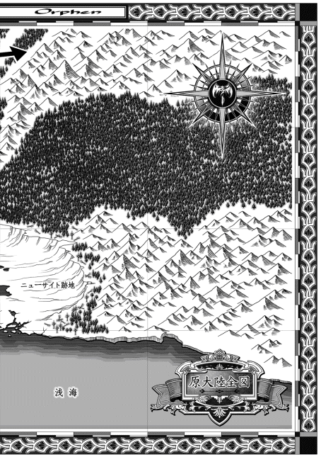
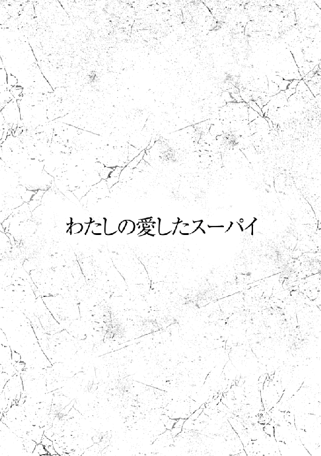

| 魔術士オーフェンはぐれ旅 手下編 (TO文庫) | |
| 秋田禎信 | |
| TOブックス (2018) | |
出会ったのは、彼が14歳の頃だった。以来、憧れ続けた魔術士と共に歩み、20年──魔王オーフェンは追いやられ、原大陸も新たな治世に入った。今後の行く先を見失っていたマジク・リンはサルア市王からの依頼を受け、カーロッタ村の調査へ向かう。その道程はマジクに一つの想いをもたらすのだった。（「遺されたもの」）。時の重みは人々をどう変えてきたのか？ 他にエバーラスティン家、フォルテ＆レティシャ夫妻のその後が描かれる項四部」番外編、完結！ 中編と短編の計３編を収録。
カバーデザイン：Veia 山口美幸


CONTENTS
「どうしてわたしを嫌うのかが分からないな」
沈黙が長引き過ぎたせいなのだろうが、音を上げたように相手がそんな愚痴を言い出すのを、マジクは聞いた。
そして、なおも黙っていた。頭に浮かんだ返事はあった。しかし口まで降りていかなかった。
現在の上司──まあ、前々から上役ではあったが──のオフィスに所在なくたたずみ、主の向こう側の壁を眺めているマジクのことを、この話し相手はなんだと感じたのか。彼はこの原大陸の開拓時代から、常にマジクの上をいっていた。先んじて働き、成果をあげ、有力者に取り入った。
そして今、クレイリー・ベルムは原大陸最高位の権力者のひとり、市王サルア・ラポワントの率いる市王戦術魔術士団の長にまで上り詰めた。事実上、原大陸における魔術士の最高指揮官だった。かつての戦術騎士団を率いていたオーフェン・フィンランディを追い落として手に入れた地位だ。
無言のマジクを見つめて、クレイリーは居心地悪そうに咳払いした。
この魔術士社会の指導者はゆっくりと言い直した。
「ブラディ・バース。あなたの立場は理解している。彼に命じられて、わたしを監視しているんだろう？」
おべっか屋の本領を発揮して、にこやかに続ける。
「素晴らしい忠節だ。驚くほどのね......それでも、だよ。本当に見ていたのならなおさら、わたしが我欲で動いていないのは分かるはずだ」
はじめは緩やかだった口調が次第に熱を帯びて、早口になっていく。だが、それは感情からというより話術の類だとマジクは見て取っていた。しかも──虚しく気づくが──クレイリーはなにも、マジクを言いくるめようとテクニックを駆使しているのではない。古くからの仲間にそんな手が通じると思うほど、彼は愚かではなかった。ただ単にそうしたやり方が染み付いて、どんな時も抜けないようになっているだけだ。
なんにしろ、タネの見え透いた話術を聞かされるほど退屈なこともない。マジクは大半を聞き流していた。
そして結論を述べるであろうタイミングを見計らって注意をもどした。クレイリーはまさに澄んだ眼差しでこう言ったところだった。
「わたしたちは友人になれる。共通点を考えてみてくれよ。案外に多いはずだ」
それに対して、マジクは初めて口を開いた。
「共通点、か。ひとつには自分以外の誰にも目をくれない病的なナルシストってことだ」
反論を待たずにそのまま告げる。クレイリーとはまったく正反対の、かすれた声音で。
「もうひとつは、うぬぼれだけじゃなく実際にも他者を圧倒する殺戮者だってところかな。校長もエドも街を去ったことで、特に顕著になった。ぼくらがその気になった時、ぼくらを止められる魔術士はぼくたち以外にいない」
「......そのもしもの時のために、いがみ合っておくべきだと？」
「ぼくらが結託するようなことがあれば周りは危機感を抱くよ。組織には既に派閥が生まれてるし、君は自分で思ってるほど人に好かれない」
しばらく、睨み合いが続いた。
冷静に口を開いたクレイリーの顔からは、それまでの作られた間抜けさも愛嬌もなりをひそめていた。
「シスタのことは気にしていない。エド派だった者を全員掌握するには、彼女はまだ力不足だ」
彼の言い様に、マジクは苦笑を漏らした。
さらに小声になって告げる。
「確かに都合よくマシュー・ゴレは戦死したし、ライト親子も街を離れた。それで安心してるようなら......」
「どうなる？」
「多分、それとはまったく関係ないようなことで足をすくわれるんだろうね」
不吉に予言する。
が、もちろん、未来視というほどのことでもない。ただの皮肉であり、同じ当てずっぽうなら皮肉のほうが的中しやすいという程度の話だ。
ただしクレイリーは、鼻で嗤うようなことはしなかった──少なくともこの瞬間に目に過ぎった陰については、かなり本音に近いものがうかがえたようにマジクは思った。同じ予感は持っていたのだろう。クレイリーは馬鹿のふりは上手いが、馬鹿ではない。あるいは、望んでも馬鹿になり切れない哀れな男だ。
深々と嘆息して、クレイリーは首を振った。
「ブラディ・バース......」
と、言いかけて思いついたように、やめる。
「もしかして、そう呼ばれるのは不快かな？」
まったく屈託なく訊いてきた。
マジクはそれこそ苦笑いを味わった。
「今さらだけど、まあ、そうだね」
「でも、栄誉ある名前だろう」
「悪名だよ。でも、そういうことじゃなくてね。母親を思い出すんだ」
「ふん......？」
クレイリーはなんのことだか分からなかっただろうが、もともとそこまで興味もなかったに違いない。受け流して話をもどした。
「あなたがわたしに政治をアドバイスするというのは、意外だったよ」
「そうかな」
「以前のこうちょ──いや、オーフェン・フィンランディのような物言いだ。正直、驚いた。あなたは政治に関わるタイプじゃないと見込んでた」
「ああ。ただの建前だからね。本当はただ心底君が嫌いなだけだ」
言い捨てるように告げて、マジクは肩を竦めた。
「それも共通点かな。ぼくらの」
「............」
今度は、クレイリーが沈黙する番だった。
（どうも、気が抜けているな。あんな奴に口答えしてるようじゃ......）
捨て台詞を残して退室したものの、かえって自己嫌悪に首根っこを掴まれて、マジクはのろのろと通路を進んでいった。
考えごとをしながらでも道には迷わない。慣れ親しんだ建物だった。市王戦術魔術士団は、旧スウェーデンボリー魔術学校の施設をそのまま引き継いで基地にしている。今のところは戦術騎士団より人員が縮小して敷地を持て余しているが、クレイリーが公にしている計画では数年以内に人数を三倍から五倍に増やすそうだ。その訓練施設も兼ねるため、魔術学校よりも専門性の高い訓練に耐えられる設備を発注している。市王はその予算を認める見込みだ。
先の戦争で荒廃した、この近辺の市街地には、避難民になっていた魔術士たちが住み着いて再建を始めている。ここ一帯が魔術士の街になる。計画でそう決めているわけではないが......必然的にそうなるだろう。
マジクのオフィスは別の棟にある。窓から飛んで移動してしまいたい誘惑はあったが、急いで帰ろうとしていると思われるのも癪で、我慢した。階段を下りていく。ここが学校であった頃、マジクはもっぱらやる気のない教員と見なされていた。生徒も誰もマジクを気にしなかったし、事務員たちもそうだった。
あの頃はまだ、戦術騎士団におけるマジクの役割というのは秘密だった。誰よりも多く革命闘士を抹殺してきた殺し屋だとは。開拓時代や、あるいは渡航以前の所行について知っている者はそれなりにいただろうが、ある事件を機に戦争仕事からは手を引いたものと考えられていた。わずかな恩給をもらいながら腑抜けの生活を送る手抜き教師を小馬鹿にしていた者も多かったろう。
以前と今、どちらが居心地のいい立場なのか。それは自分でもよく分からない。
毎度答えの出ないまま、玄関を出た。建物をぐるりと回って別棟に向かう。学校ではなくなっても、敷地を行き来する魔術士たちには若い顔が多かった。
いや、単にそう見えるだけか。と思い直す。
（プロフェッショナルの匂いが、薄い......んだよな）
組織は若返ったが、一方で年季の入った者が多く死んだ。
価値のないあんな戦争で死ぬのはいかにもくだらない。よほどの馬鹿正直か、手際の悪い愚か者だったかだろう。ただ死んだからには、後腐れのない、いい奴らだったとは言える。
（厄介だ。生き残ってしまうっていうのは）
皮肉を思っているうちに、目的の建物に入った。
クレイリーや主要スタッフが使っている旧第一教練棟は賑やかだったが、他の校舎はまだそうでもない。どこでも好きな部屋を選べたが、マジクはなるべく人目を避ける場所を求めた。第三教練棟はリベレーターの砲撃を受け半壊したが、そこを自分で修復して使うことにした。戦闘の際、民間の魔術士が多く死傷した建物でもある。おかげでひとけがなかった。
今度は階段を登らなければならない。オフィスにもどったところで、差し当たってやるべき仕事もないのだが──
「............」
そう言いたいところで、感覚に引っかかるものがあった。
人の気配だ。誰かが待っている。
三階に登るまでに、それが何者かの予想も定まらなかった。というより、候補が誰も思いつかなかった。マジクに用のありそうな人物との面会は、今済ませてきたばかりだ。プライベートな訪問者は──そもそもこの仕事場に入ってこられるかどうかというのもあるが、なんにしろラポワント市内にいそうもない。
革命闘士の残党なら？ それがまだしも一番あり得そうだったが。
（そうなら、楽でいいな。挨拶も社交辞令もいらない。答えようもない質問もしてこない......）
「こんにちは」
ドアの前に立っていたのは、すらっとした美女だった。
彼女の顔には見覚えがあった。まあ、覚えていてもおかしくはないだろう、という女ではある。しかし名前が出てこない。
マジクがぼーっと眺めていると、彼女のほうが名乗ってきた。
「ジャニス・リーランドです」
「ああ」
思い出した。
「派遣警察隊の」
「今は王権規律隊にいます」
「魔術士は治外法権だろう？」
「ええ、市王の名の下に。ですがわたしたちは、その王の逮捕権を持っています」
「ああ......クレイリーが地団駄踏んでいたアレか」
クレイリーはサルア市王に、魔術士の逮捕を禁じる交渉に成功した。サルアは承諾したが、そのすぐ後に、王権そのものを監視する超法規警察隊を作った。
いざとなれば、魔術士の勝手を許した自分もろとも魔術士を逮捕できる特殊警察というわけだ。
「やけっぱちなことをするもんだと思ったけど、まあ小気味よかったな」
彼女を見返しながら、手を伸ばして扉を開ける。
「どうぞ」
客を先に通してからマジクも入った。オフィスは初めて入室した時からほとんど変わっていない。もとは教員室で、四人が使っていたので部屋は広かった。長机ふたつを並べて椅子も向き合うように並べられていた。
マジクは普段使っている手前の椅子に座りかけたが（もっと言えば、普段は椅子を並べてそこに寝ていることも多かったのだが）、それもおかしいかと、奥に回った。
ジャニスにも席を勧めたが、彼女は座らなかった。マジクは改めて相手の様子をうかがった。完璧にスーツを着こなしたジャニス・リーランドは、少なくとも見た限りでは武装していない。
彼女は部屋を見回して、つぶやくようにこう言った。
「秘書を置いていないのですか？」
それは、廊下などで待ちぼうけをさせられた嫌味もあったのだろうが、感情はうまく隠していたので世間話にも聞こえた。
マジクは軽く肩を竦めた。
「必要ない。普通は誰も訪ねてこないしね」
「助手は？」
「必要ない。仕事で手助けを必要としたことがない......弟子を連れていたことはあったけどね」
「一匹狼ですか」
「君もひとりで来たろう？」
ジャニスの言い様にやはり嫌味を感じて、マジクは言い返した。
スーツと同じくほころびひとつなかった彼女の表情が、わずかに動く。
「普段は組織で動きますよ......今日は、ただの伝言ですから」
「ただの伝言なら手紙でよかったんじゃないか」
「ここの様子も見てみたかったので」
涼しくそう言って、ジャニスは窓の向こうに目をやった。そこからは第一教練棟が見える。ちょうど、元校長室がのぞける位置だ。
もちろん向こうからもここがのぞける。マジクは振り返らなかったが、クレイリーはジャニスの訪問をどう考えているだろうか。マジクと違ってクレイリーは人間の顔と名前を絶対忘れない。魔術学校に寄越されたこともある派遣警察官ジャニス・リーランドのことは当然覚えている。
その想像が少々楽しかったので、ジャニスが話し始めたのを聞き逃しかけた。こんなことは今日二度目だ。どうも他人の話に集中できない──慌てて意識をもどす。
「......ので、結局はそうなっていくんでしょうね」
「ああ、そうだろうね」
益体もない世間話だろうと踏んで、マジクは同意した。詐欺的な融資の誘いでなければいいけどと思いながら。
彼女はうなずいて続ける。
「クレイリー・ベルム。戦術騎士団の時代には正直ノーマークでしたが。その後の調べでは、やはりそれなりに癖のあるお人のようですね」
マジクは嘆息してみせた。
「ノーマークにさせられていたことを恐れるべきだよ。はっきり言うが、彼は騎士団ではぼくやエドに次いで活躍の多かった魔術戦士だ」
にやりとしながら背後を示す。
「彼が面倒くさいのは、手癖の悪さのほうじゃない。同じくらい誠実なんだ」
「というと？」
「おべっか屋なんて言われて、実際その通りなんだけど。クレイリーの頭の中では半分本気だ。行動もそう。あいつにとっては帳簿を誤魔化して懐に入れるのも、仲間のために犠牲になって重傷を負うことも差がない。そうしても構わないという理由づけがあれば、ド汚いことも英雄行為もやれてしまう。どっか壊れてるんだろう」
「............」
彼女が言葉を失った理由は推察できる。話した内容もだが、部外者になにを言っているんだというところだろう。
（でも別に、意味なく話してるんじゃないんだよ）
と、マジクは言い足した。
「──と、分析屋には伝えろ。地団駄踏んだと言ったろう。ああいうことは二度とやるな。ぼくが押さえなければ、クレイリーは反乱していたかもしれない。そうなったら、奴はとことんやるぞ。市街地と住人を灰にしてでもだ。申し訳ない、これしかなかったとか言いながらね。お前たちが抱き込んだのは爆弾だと忘れるな」
ジャニスは返事をしなかったが。
別にそれを待つつもりもなかったし、分かるまで繰り返す義理もなかった。
「その様子だと、ぼくのことも探ってあるようだね？」
「というより元上司から聞いています」
「ふうん。それなら、修正する必要もないかな」
「本題を伝えます」
咳払いでもするように姿勢を正して、彼女は言ってきた。
「市王からあなたに頼みごとがあります」
「王権規律隊だとかいう君が？」
「別に敵じゃありませんよ。彼の逮捕権を持っているというだけで、臣下ではあります」
「ふうん。ややこしいな」
「普段はサポートをします......そうしていたほうが、王権の暴走は察知しやすいですしね」
「......なるほど」
マジクはしたり顔でつぶやいた。
「では王の頼みっていうのは、ぼくを取り立てて裏の暗殺者にってところかな。次々と、市議会の政敵を排除していく。楽しそうだとは言わないが、気の進まない仕事とも言えないな」
「そんなことをわたしに言付けないと思いますが......そういうことに逮捕状を出すんですから」
「そりゃそうか」
「わたしが聞いているのは──」
ジャニスの伝言を聞いて。
マジクは即座に窓をぶち割って空に飛び出し、王宮に急行した。
王宮といっても、市王に合わせてそう呼ばれることになったというだけで、市長の公邸からなにが変わったわけでもない。公邸と行政舎がひと続きになった造りは大統領邸と似ているが、こちらのほうがかなり規模は小さい。
市長が......いや市王が生活する公邸から敷地を出ずに公務に移れるのは、二十四時間いつでも数分以内に仕事に復帰でき、市政に隙を生まないこと、そして警備上の利点もあるのだろうが、空からの攻撃は想定されていない。
（まったく）
上から空爆してやってもよかったのだが、数分の飛行でほどよく頭も冷やされていた。
速度を落として公邸のテラスに着地する。
「......この時間だと仕事中だったかな」
なんとはなしに独りごとが漏れたが、それに答える声があった。
「それが、案外と暇を持て余していてね」
テラスの窓を細く開けて、ガウン姿のサルア王が外をのぞいていた。
あまりといえばあまりなタイミングの良さに、マジクはうめいた。
「そんなわけないでしょう。まさか、ここに来ると読んでいましたか？」
「それこそ、そんなわけがないだろう。昨日から風邪気味でね。サボってたんだ」
言われてマジクは、しげしげと王を見やった。
確かに目がうるんで鼻が赤い。顔色も悪いようだ。もっとも顔色については、彼が市王などというものになってから良くなったのを見たことはない。
サルアは窓をもう少し開けて、手招きした。
「まあ入ってくれ。正門から殴り込んでこなくて助かった」
とぼとぼと奥に引っ込んでいく。
その後ろ姿に、マジクは思わざるを得なかった。
（......随分と痩せたな）
中年になって恰幅が良くなっていたサルア市王だったが、今は若かった頃より体重がないかもしれない。ガウンのサイズが合わなくなっているのか、引きずる姿がいかにも病身だった。
風邪だけではないだろう。
暇だと言っていたが本当にそんなわけはない。先の戦いは全勢力に変化を強要したが、ラポワント市はその最たるものだ。立法、司法、行政組織の根底から生まれ変わった。王を戴き、開拓村、そしてアキュミレイション・ポイントの大統領邸とは極めて激しく対立している。これまでは所詮勢力争いでしかなかったが、この変化によって思想から相反するようになってしまった。
再度の戦争が食い止められているのは、サルア王が魔術士社会を取り込んだからだ。クレイリーの市王戦術魔術士団は原大陸で最大の魔術士組織であり、最強の戦力だ。派遣警察隊も加えて、この軍事力には大統領邸も手が出せない。
サルア・ソリュード・ラポワント王。
「おかしな名前じゃないですか。経緯を知っていると」
部屋に入ると出し抜けに、マジクは言った。
市王はハンカチで鼻をかんでから、肩越しに笑みを見せる。
「分かっているさ。なにもかも滑稽に見えるんだろう」
「まあ、巡り巡ってなにになったかと思えば、今どき王様ですからね」
「殺し屋が英雄になり、王になる。いかにも乱世の顛末だな。俺たちは王権を憎んで船出したはずなのに。前に進むってのは困難だ」
ハンカチを洗濯籠に投げ、ソファーに腰を下ろした。
落ちくぼんだ目をぎょろつかせたその顔は、暗い寝室に収まっていると、いかにも王族らしく正気を失ったようにも見える。とはいえサルアはまだ初代の王で、今後世襲していくかどうかも分からない。血の狂気というのはまだまだ焦りすぎた話だ。
実際、サルアの声音にはまだ思慮が感じられた。
「しばらく、話す機会がなかったな」
「別に、もともと話し相手じゃなかったでしょう」
「そうだが......整理をつけないとならんことがあるだろう」
彼の言わんとするところは察しがついた。
が、それを認める気はなかった。かぶりを振ってマジクは告げた。
「ぼくは成り行きまかせですよ。やりたいことも、望むこともない」
「カーロッタが死んだのに、これまで通りでいられるのか？」
落ち着いた声音で、痛いところを突いてきた。
ひとまず動揺は隠して、マジクは答えた。
「ここ十数年、やろうと思えばできたのに、やらなかった。見逃し続けてきたんです。つまるところそれがぼくに見合ってるんですよ」
「俺やオーフェンの都合に従って、だろう」
「......その怨みでぼくがおかしくなると？」
冗談めかして訊き返したが、サルアはぴくりともしない。となると、本当に懸念しているのかもしれない。
あごを撫で、深刻そうに声をくぐもらせた。
「ずっと犠牲になってきて、ただひとつの約束まで反故になったんだろう」
繰り返されても、考える必要はなかった。
これまで何度も考えざるを得なかったからだ。
マジクはうなずいた。
「そうですね。お師様には裏切られましたよ。でも別に、あの人が土壇場で裏切るのは毎度のことです」
一息ついて、言い足す。
「だからぼくは、あの人以外を魔王と呼ぶ気にはならないですね」
「......他の誰がそう呼んでも、お前はあいつを魔王と呼ばなかっただろ」
「口先の話じゃありません。まあ......複雑なものでしょ。因縁って」
通じたかどうか。サルアの厳しい目つきは元教師を思わせるしかつめらしいものだった。
この男を若い頃から知っているが、あれから二十年も民のリーダーを務めたことで、簡単には腹の分からない政治家になったと感じる。
「そう言うわりには、俺の頼みを聞いた途端に空からやってきたようだな」
「............」
ようやく本題に入ったのだろうが、マジクは話に乗りきれなかった。本当に爆撃だけして帰ればよかったのかもしれないと、胸を過ぎる。
「言付けた通りだが。カーロッタ村を見てきて欲しい」
サルアの発言は言った通り、ジャニスから聞かされたものとまったく同じだ。
その意味というより感触だけを吟味しながら、マジクは訊ねた。
「どうしてぼくに？ 優秀な部下ならいくらでもいるでしょうに」
「いくらでもいるわけはない。それに、どういう危険があるか分からない場所に、貴重な人材は送れない」
「ぼくなら構わない？」
「お前は俺の部下じゃないし、恐らくどんな危険があっても生還率は一番高い。全人類でな」
「......危険、というのは？ カーロッタ村の革命闘士は離散しましたよ」
詳しい話も聞かずに飛び出してきたのは、そもそも疑問があったからだ。今さらカーロッタ村などを偵察する理由がない。理由がないなら、ただの嫌がらせとしか思えない。開拓村の人々にとっても、もちろんマジクにとっても。
だが落ち着いたサルアの態度は──目やにがついて、鼻水を垂らしていてもだ──、ただの理不尽ではなさそうだと考えを変えさせられた。
「空白地帯になったのが問題だ......というのがウチのモンの考えらしい」
ヤクザのような言い方をしたが、市王専属の分析者たちの話だろう。
ただ、それだけなら格段、厳めしく密談するような事柄でもない。床屋政談でも語られているようなことだ。
「カーロッタは死んでも、カーロッタ派の幻想は消えたわけじゃない。拠点を失った革命闘士はカーロッタ村を取り返そうとしているようだしな」
「......いっそ、取り返されてしまったほうがいいというのが結論ですか？」
深読みをしてつぶやく。
ラポワント市が開拓村を征服しようと、軍を動かした矢先で先の戦いは終わった。その大義はサルアの妻、メッチェンがカーロッタ派によって白昼堂々殺害された報復だった。実際のところサルア市長より支持率の高かった市長夫人の死は、市民を激しく怒らせたのだ。
だがもっと別の動機もあった。現実的な話だ。大局的には、あの戦いは都市の資産家と、開拓民との対立が闘争化したものだ。それまで成り立っていた交易の──もっと言えば搾取の──構造が断ち切られた。開拓村への支配関係が崩れれば、ラポワント市は長く持たない。市は、開拓村を押さえる必要があったのだ。
だがカーロッタがそこで死んだ。彼女の画策したとされる壊滅災害が回避され、戦いから魔術士が引き上げたことで征服戦争も始まらなかった。すべての勢力がなにも得ることなく終結した。
「あの戦いは......」
サルアは苦々しく認めた。
「誰もなにも得なかった。誰かさんが、まあいつも通りに予想外の振る舞いをしたおかげでな」
「校長が狙ってそうしたというと、語弊がありますけどね」
「そうか？」
「あの人はなにもしないことに徹したんです。なにかひとつでも勝ってしまったら魔王になる道しか残らない。そうなったら世界は支配されるだけだ。だからなにもするわけにいかなかった。通りすがりのならず者......はぐれ者に託した」
「だがおかげで、ここにいる八万人は数年後には干上がった街でお互いを殺して食い合ってるかもしれない」
「数年の猶予はある」
「市王だの、最大都市だのといったくだらん御輿で誤魔化せる期間は、何年もない。暴動のほうが先に起こる」
「少しでもそれを先延ばしにするには、はっきりした大敵がいるほうがいいんでしょう？」
「それもひとつの考えだ。だが無論、開拓民と新たに公正な取引ができるようになれば、なおいい」
サルアの言葉に、マジクはぴくりと眉を上げた。
驚き顔に市王は嘆息してみせる。
「意外か？ 俺がそんなことを言うのは」
「いえ、市議会がそれで納得できるとは思えなかったので」
公正な、というのはなかなかに微妙な言い回しだ。
友好的で気高く、素晴らしい決断だろうか？ あるいはそうかもしれない。しかし身内を見捨てて引き裂く残酷な決意でもある。
街と開拓民の双方が折り合う「公正な」取引がそもそも存在するのかどうかという話もあるが。仮にあるとすれば、それは資産家たちにとっては寒気がするほど厳しい数字になるはずだ。というよりほとんどの資産家、事業が立ちゆかなくなるだろう。これまで、原大陸の経済は開拓民の借金と奴隷労働によって支えられてきたのだ。
サルアは不機嫌そうに鼻をこすった。
「議会の支持はまだ得ていないし、得られる見込みもない。今のところはな」
「......もしかして、王権規律隊というのは」
「ああ。俺への締め付けだ。市長から市王になって、なにが違うかといや、殺される前に辞任して逃げるって選択肢がなくなったことだな」
自嘲して続ける。
「街の事業が倒れればその影響で、最小限に見積もっても数千人が職を失う。彼らにとっては全員平等な共食いのほうがまだマシかもしれん。新たな革命闘士の誕生だな。どこかに......落としどころを探りたい。ぎりぎりまで」
「それでも、差し迫ったなにかがなければぼくには頼まないでしょう？」
「具体的な懸案がふたつある。ひとつは言いづらいが、フィンランディ商会だ」
見えないなにかに聞き耳を立てられているとでもいうように、サルアは声をひそめた。
「開拓民相手に商売して、コネを作っている。その上どうやったのか、ついにカーロッタ村と接触したっていうんだ。あいつの真意なんてもんを読もうとするのはもう諦めたが......当面の保障を得ないと議会工作もできん」
「いいでしょう。それは問いただしてきます。もうひとつは？」
「粛正隊と呼ばれる、革命闘士の特に過激な連中だ。カーロッタ村の近辺に出没しているらしい」
半秒ほど考えて、マジクはつぶやいた。
「それはひとつながりの話かもしれないですね」
「ああ。革命闘士を嫌ってフィンランディ商会を頼ったのかもしれないし、その逆かもしれない。カーロッタ村も古参から新顔まで、海千山千いろいろいるからな」
「つまり──」
マジクは指を立てて整理した。
「無軌道かつ強力な魔術戦士組織と、仲間を吊すような凶暴な革命闘士の絡む、かつての敵の最大拠点に出向いて、そしてラポワント市の友好路線を邪魔することのないよう、あなたとのつながりは隠し通した上で、騒動は起こさず生きて帰ってこいと」
「そうだな。あとできれば、風邪の特効薬でも作ってみてくれ」
「......ほんの少しばかり、難しくないですか」
「風邪がか？ こんなもの、鼻水と喉をどうにかしてくれりゃいいだけだろ」
じっと半眼で相手を見つめてから、マジクはゆっくり回れ右した。
去り際に言い置く。
「これでもどってきたら一番ムカつくパターンで、お前の自分探しのためこの任務を与えたんだ的な説教モードに入ったりしたら、この王宮を地下三百メートルくらいまで窪んだクレーターにしますよ」
「おう。それくらい深ければ、どうにか半日は陳情を聞かずに済むな」
投げやりにうめくと、サルアはそのままソファーに寝転んだ。
カーロッタ村はラポワント市から馬車で二、三時間という距離だ。
乗り合い馬車も出ている。開拓民なら半額で乗れる。乗り場に人数が溜まるか、最初に待ち始めた誰かが痺れを切らしてせっつけば──あと多少の追加料金を払えば──出発する。
その程度の気軽さだ。だがここ十年以上も、魔術士がカーロッタ村に向かうことはほとんどなかった。村に入らないことを約束していたのはオーフェン・フィンランディだが、他の魔術戦士も暗黙の了解で避けてはいた。魔術士の顔はほぼ把握されていたため、実際に近づけば革命闘士とのいざこざは不可避だったろう。
マジクも、カーロッタ村行きの馬車に乗り込むのは初めてのことだった。
市王の印が入った、市王戦術魔術士団の外套を着たまま。小細工はしなかった。魔術士が乗り込んだ時の村の反応を見たかったのもあるし、革命闘士が絡んでいるなら手っ取り早く誘い出しておきたかった。身の危険については、まあ、どうでもいい。
乗り合い馬車にはマジクひとりではなかった。カーロッタ村の村人と思しき婦人がひとり、荷を抱えて目を丸くしている。マジクに面食らったのだろう。
二十人乗りの大型客室は、がらんとして感じる。
馬車は走り出したが、彼女は目を逸らさない。
（瞬きすらしないね......ずっとそのままじゃ気の毒か）
と、マジクは声をかけた。
「どうも」
「......どうも」
彼女も繰り返した。
やはりまだ緊張を解かない。
馬車はまだ街を出ておらず、舗装路を走っているのでそう揺れない。今のうちに挨拶だけやっておけば、舌を噛まずに済むだろう。
「どちらまで？」
分かり切った問いだ。が、間抜けと思われるほうが打ち解けやすい。貴族虐殺の逃亡犯などという過去を引きずると、そうしたふりも板につく。学校教師であった間は、ひたすら昼行灯で通してきた。
女は無感情に答えてきた。
「カーロッタ村へ行く馬車です」
声音には、問いの馬鹿馬鹿しさを非難する含みがある。
マジクはそれにも気づかなかった顔を保った。
「じゃあ、同じ場所ですね」
「それは、そうでしょう」
「途中で降りる人もいるんでしょう？ 村はたくさんある」
「あまりご存じないのかもしれませんが......よほど大きな村でないと、街に人を出す余裕はありませんよ」
つまり、彼女は村を代表して街の用事を済ませたということか。
「あなたはお遣いですか？」
とマジクが訊くと、彼女ははっきりと狼狽えた。
「わたしは、村の代表者です」
「え」
今度はマジクのほうも呆気に取られた。
「もしかして、市議会の方ですか？」
「暫定ですが、村長をしています。ペネロピです」
「これは......失礼をしました」
向き直って一礼し、彼女を観察する。
見たことはない顔だ。暫定でということは、カーロッタが死んで、ひとまず彼女が代表者を務めているという話か。
カーロッタ派は瓦解したので、市議会の顔ぶれはかなり入れ替わっている。戦術騎士団時代は市議会の動きから革命闘士を探ることはあったが、今となってはほとんど気にしない存在になっていた。
「わたしは市王戦術魔術士団のマジク・リンです」
「理解しています」
毅然と、しっかりした姿勢で、ペネロピがうなずく。
眉間にしわを寄せたまま彼女は続けた。
「差し支えなければ、ご用を聞かせていただけるでしょうか」
「はい。公務ではありません。プライベートです」
「......訪ねる相手がいるようには思えないのですが」
疑わしげな相手の指摘に、マジクは告げた。
「これまでずっと行けずにいましたが──」
途端に、口の中に苦みが広がる。
自分の動揺に内心驚きながら、どうにか言い切った。
「サファイアという女性のことを覚えておられますか」
「ええ」
「彼女の墓が、カーロッタ村にあると聞いていましたが。なかなか......近寄れなかったもので」
「............」
ペネロピは声にならず、どうにか緊張を誤魔化そうとしている。
若く見えていた彼女だったが、強ばった表情に本当の年齢が表れていた。四十を過ぎたあたりだろうか。マジクも同じく震える手を握り締めたが──彼の動揺は、サファイアを思ってのことではなかった。
（まったく......どうなってんだ）
自分に呆れる。彼女の名前を使って嘘をついたことに身体が震えた。
できれば叫び出して、また窓から飛び出していってやりたいところだった。サファイアの墓とは。咄嗟に思いついた嘘だった。なんとも感じずに言ってのけられると思っていた。墓参りなどとくだらないことこの上ない。反吐が出る。
もっとも......
予想外だったが、その動揺がペネロピに好印象を与えたようだった。
「あの子のお墓はあります。村人にもよく知られていない場所ですが......」
気遣うような彼女の眼差しに、マジクは顔を伏せた。
再び顔を上げた時には、ペネロピは静かに窓へ肘を突き、外を眺めていた。マジクもそれに倣った。
馬車に揺られながらのぞく風景は、原大陸の先行きになにがあるのか、予兆を読ませもしない。なにもない、無言の道だ。猫の毛繕いほどにも内容のない。本性を押し隠す緞帳だった。
幕が開くまでにも、舞台になにが設えられているのか。役者たちにも分からない。天井からなんの脈絡もなく神が降り立ち、これですべて終わりと告げる──それが冗談でもなんでもない。にもかかわらず、その神ですら幾度も退けられ、この世界はまだ終わりを遂げていなかった。
そのどちらに憂鬱を感じているのか、それもよく分からない。
やがてカーロッタ村が見えるまで、退屈な時間を過ごさなかった......わけはない。果てしない苦行を思わせた。進まない時間の檻に捕らえられ、心が凍るような。それか、暗く縮んでいくような。
そこまでの道と同じく、カーロッタ村も見た目は平凡だ。恐らく最大の開拓村のひとつであり、広さでは旧ローグタウンの三倍、人口では五倍ほど。とはいえこれはカーロッタが統治していた頃の話で、革命闘士がいなくなった今、数はだいぶ減っているはずだ。
元は第一次の開拓団、カーロッタに率いられた最初のキムラック難民がここに住んだ。カーロッタはすぐにアーバンラマ資本家から離反し、第二次の開拓団に討伐隊が含まれることを予想して沿岸ではなく内陸に村を築いた。
サルアの第二次開拓団とはかなり凄惨な戦闘を繰り広げたらしい。当時のことはマジクは知らないが。その頃、マジクはキエサルヒマで貴族連盟の騎士隊と戦っていた。原大陸に渡った頃には原大陸事情はもう少し落ち着いていた。
とはいえアーバンラマ資本家の住むニューサイト、開拓団の主軸であるラポワント村（あるいはサルア村）、カーロッタ村と、それと睨み合うローグタウンと。現在の勢力図の基本はそこにもう出来ていた。戦闘の頻度こそ減っていたが、カーロッタは強力な手段で敵の中枢を一掃しようと画策していた。ヴァンパイアライズ、そして神人種族による壊滅災害だ。
神人種族デグラジウスがニューサイトを滅ぼした。オーフェンはその時に選択を迫られた。神を殺す魔王の力を武器として行使するかどうか。
原大陸で生まれた家族の存在が無関係だったとは思えない。彼は初めて、魔王術を使って神人種族を封じた。
（その時、だよ）
馬車から降りながら、マジクは胸中で吐き捨てた。
（もう自分がはぐれ者じゃない......と、あの人は受け入れた。何者かの側に立つことから逃れられない自分を）
それがその後、おおよそ二十年も忍耐を続けさせた。
（たかが、こんな村なんだけどな）
改めて見回すと、そうとしか言えない。
ただの開拓村だ。馬車は広場に停まって、馬の世話をする小僧を御者が呼びつけている。宿もある。飲み屋も。床屋も。
断崖にそびえるわけでも、溶岩のトラップが道をふさぐわけでもない。もちろん、ヴァンパイア化した革命闘士が複数いたが。強大化が行き過ぎたヴァンパイアを、カーロッタはむしろ村から放逐していた。
そんなものには頼らずに、カーロッタは状況を見抜き、急所を押さえることで敵の動きを封じていた。彼女がいなくなれば革命闘士の動きは混沌にもどる。魔術士は特にそれを恐れた。魔術とは対極の脅威だったのだ。いつ誰が強大化するか分からないヴァンパイアライズというのは。
カーロッタを亡くしたカーロッタ村は、いかにも平凡な村に見えた。その一方でカーロッタの恐ろしさがまさにその平凡を装うことだったと思うと、落ち着かない。ふと腕に触れられれば、身構えてしまうほどに。
「......きゃっ！」
マジクが跳び退くと、ペネロピは声をあげて驚いたようだった。
「あ......すみません」
詫びる。と、彼女は微笑んでみせた。
「案内を」
「え？」
「村人もよく知らない場所と言ったでしょう？」
そう言って彼女は手招きした。
サファイアの墓に案内してくれるというのだろう。
反射的に、断りそうになった。が、それではどんな理由をこじつけたところで頓珍漢な話にしかならない。それに村人と接触するのは任務のひとつだ。村長を相手に話ができるのであれば申し分ない。
「そうですか。よろしくお願いします」
マジクが受けると、彼女は物静かにうなずいた。
ふたりで村の奥へと進んでいく。村人にも出会ったが、みんな反応は似たようなものだ。ペネロピを見つけ、そしてマジクの姿を見て戸惑った顔を見せてから建物の中に駆けもどっていく。やがて戸惑うよりも、気まずい表情を見かけるようになった。どういう連絡か分からないが、歩くよりも噂の広まるほうが早いらしい。
「湖からは、見えるんですか」
関係ないことが、つい口から漏れた。
ペネロピも理解できなかったのか、不思議そうな眼差しを返してくる。
マジクは言い直した。
「湖まで行くと、対岸は見えるんでしょうか、と」
「ああ」
彼女はゆっくりと遠くに視線を向けた。村からは見えないが、湖のある方角だろう。
「そうですね......足繁く通っている村人もいるようです」
「勝利の証としてですか」
対岸のローグタウンの様子までうかがえないのは分かっている。なにかが見えるとすれば、それはその村にそびえるシマス・ヴァンパイアのなれの果てのことだ。
なるべく言葉に皮肉がこもらないよう気をつけたが、ペネロピは複雑そうに口の端を歪めた。
「どうでしょう。人の気持ちまでは分かりません。でも、あれをカーロッタ・マウセンや、多くの革命闘士の墓標のように思う者は多いようです」
「シマスという革命闘士は、ここの出身だったのですか」
「いいえ......遠方から、カーロッタを慕って辿り着いた子だったと思います」
「血縁者は？」
「いなかったようですが。隠していただけかもしれません。類縁に多く起こるという話を信じている者も多いですし......」
マジクもそれを探って訊いたのだろうかと疑ったのか、彼女の声はやや硬くなった。
ただ逆に、マジクは気になった。
「ヴァンパイア症の革命闘士を見ることは多かったでしょうに、そういう偏見があったんですか」
ヴァンパイア症は人為的に起こすこともあり得た──というより革命闘士のようにそれを武器として使う組織があった場合、全体で考えればそういう事例のほうが多かったため、血筋などで継承されるという印象が持たれていたのは事実である。
ペネロピは首を振った。
「ものを見たから正しく理解できるとは限りませんよ」
「そうなんですかね」
「あなたの身内にはいなかったのですか？」
「............」
しばらく間を開けて、マジクはつぶやいた。
「母が軽度のヴァンパイア症でした。キエサルヒマではもっと偏見が強かったですね。魔術の素養は遺伝するので、混同されやすかったのかもしれませんが」
「お母さんはご無事で？」
「よく知りません。生きているかも。でも、死んだと思いますね」
素っ気ないマジクの返答に、またペネロピが眉をひそめたようだったので、言い足す。
「ぼくだけこっちに渡ってきてから、それっきりなので。どのみち母とは疎遠だったんですよ。他人を遠ざけて山暮らしをしていたような人だったので」
「......家族を傷つけるのを恐れたのでは？」
「そうかもしれませんが、理由は少し違いますね。若い頃ギャングのようなことをしていて、街にいられなくなったんだと思います」
似た道を辿ったってことかもしれないな、と胸中でつぶやく。
その間ペネロピは、理解できることにだけ反応したようで、話はヴァンパイア症にもどった。
「おっしゃる通り、ここは革命闘士の本拠地でしたから、事故も多かったんです。カーロッタは、自制が利かなくなった部下を村には置きませんでしたが......誰がいつ、隣家を踏みつぶすような巨人になるか分かりませんでした。信心証明薬の所在も謎でしたし」
彼女は浅い吐息とともに語った。
「それでもそんな力の他に、頼るものもなかった。キムラックが......民を導くのをやめて、わたしたちはなにが正しいか分からなくなった。新天地と思った原大陸は過酷だった。助けに来てくれると切望した次の開拓団はわたしたちを裏切り者といって敵対した。開拓事業はただの奴隷契約だった。せめて、苦楽をともにしてきた隣人だけは、姿が変貌しても仲間を殺したりはしないと信じたかったのに」
案内は途中で道を逸れ、湖に向かう方角、溝のような窪地に入っていった。湖に続いていた小川が、別に水路を作ったかなにかで干上がったものか。低くなっているし、周りに林があるのであまり人目にはつかない。隠されているというほどでもないが、知らなければ立ち入らない場所だろう。
道は唐突に行き詰まった。元は池か沼地か。円形の窪地に行き当たり、周りの高さは──というより底の深さはかなりあった。二、三メートルほどか。そんな目立たない穴の底に大きめの石碑がひとつと、周りに小さい石が何個か並べられている。
「元は、人食い沼なんて呼ばれていたところで。事故で落ちたり......心中者が出たりしました。鎮魂にと沈められた石だったんです」
ペネロピは進んでいくと、石碑を手で撫でた。
石碑といっても意匠が施されているわけでもない。ただの大きい石だ。苔や傷みの具合からすると、確かにずっと水に浸かっていたようだ。
「そのうち安全のためもあって、干拓して。一緒に沈んでいた骨を集めて弔いました。あと──」
言い留まった彼女の言葉を、マジクは継いだ。
「人を殺して処刑されたヴァンパイアの墓も、ここにあるんですね」
「......はい」
どの石にも名前はない。
見回してからその場にひざまずき、マジクは目を閉じた。
その姿勢でつぶやく。
「湖のこちらと向こうは、鏡像のようですね」
「え？」
「向こうにも人知れぬ墓があるんですよ。やっぱり、湖の畔に。街の繁栄から置き去りにされて忘れられた人たちの、名も無き墓です」
起き上がって彼女に向き直る。
「世間の進む速度が速いと、忘れたいものを忘れるには都合がいい」
「そうなんでしょうか」
「いいえ。いくら速くても結局は逃げ切れない」
首の筋を伸ばしつつ、話題をもどした。
「ともあれ、深刻な強度のヴァンパイアはもう発生しないはずです。少なくとも世界が破滅するまでは」
専門家としての話し方に徹する。墓石にも目をやらずに続けた。
「これまで、危険強度に達して抹消されてきた人たちも順次もどってくるでしょう......記録を封じて世代が移り、戦いの記憶が失われるまで、数十年はかかりますが。それでもそこまでの強度に達することなく、ただ戦闘で命を落としたという人は還りません。皮肉な話と言うと不謹慎でしょうね」
「教訓は──」
というペネロピの言葉を、無礼を承知でマジクは遮った。
「学ぶものなんてなにもなかったってことですよ。救いようもない。ぼくは人殺しの専門家ですが、標的から善人と悪人を見分けることすらできなかった。なにより、ぼくのようなどうしようもないのが生き延びてしまった」
話し過ぎをようやく察して、苦笑いする。
「......なんて話は気まずいだけですかね」
言うまでもないことだっただろうが。
ペネロピは慎み深く返事は避けた。だが代わりに、もっと不躾なことを口にした。
「死を望むのですか？」
「まさか。もしそんな潔さがあるなら──」
と。
前に駆け出して、ペネロピの腕を掴み、放り投げた。
寸前まで彼女の頭があった場所を、風を切るような音を奏で、黒い影が通り抜ける。
それは空から降下して、振り子のようにまた上昇していった。目で追うには速すぎる。感覚を総動員して動きを読もうとした。
全身の昂ぶりを感じる。
（まったくだ）
思わず、呆れた。
身体も、意識も、神経も、熱量も。すべてが危機に対応して、勝つための行動を導き出す。潔さとはまったく無縁だ。生き延びれば他の誰かが死ぬと分かり切っている時にも、手を休めようとは考えない。
というよりも考えるより先に身体が動いている。そうでもないと、人の能力を超えた敵には対処できない。
ようやく理性が身体に追いついた。思考が勘を修正していく。身体に変異を来すほどのヴァンパイア症は発生しないはず、と自分で言ったばかりだ。だから少なくともこの襲撃は、どれほど強く速かったとしても、想像を絶するものではない。
編みかけていた構成を切り替えた。こちらも素早く、正確に。
「我咲かす──」
両手を広げてかざしつつ、背中から地面に倒れ込む。
「棘の花園！」
光の網が放射状に展開された。
一本一本はか細いが、それを何千何万本と。倒れたペネロピとマジク自身の上を覆うようにまず一層。さらにその上にやはり複数の網が拡散していく。窪地の天井を埋め、もっと外にも拡大した。
「ぎゃっ！」
悲鳴。そして、どさりと転倒する音。
それを聞いてから、マジクは術を消した。ショックを与える電流の網だ。人間が触れれば数十秒は動けない。
飛び起きて小声で唱えると、身体を浮揚させる。石碑よりも高く浮かび上がったところで、声の出所から見当をつけていた方角を見下ろした。
誰もいない。
（なるほど......）
さっきの術の狙いは防御と牽制、そしてどんな種類の敵かを確かめるためだった。ただの兵隊ならそこに倒れていたはず。魔術士なら（ヘボでなければ）術で防御しただろう。野生動物なら逃げる可能性が高い。
身体強化されたヴァンパイアであれば、すぐに反撃してくる。
マジクは再度、構成を編んだ。いつもなら速度を上げてもっと高度を取るか、大きな術で周りごと一掃してしまうところだが。ペネロピを地面に残したままなので、そのどちらもやりづらい。
耳が異常を察した。
音だ。最初に聞いたのと同じ、空気を裂く音。鋭いなにかが空を切って迫ってきている。
身をよじってかわしながら、攻撃の包囲を探した。円弧を描くような軌道で黒い三日月状のものが飛んでいくのを、ぎりぎり視界の端に捉える。身体を掠めたそれは、さらに大きく旋回して引き返していった──マジクからは遠のいたが、攻撃の起点に帰っていくようだ。
（ブーメラン？ いや......）
ブーメランの形状だが、そんなわけはない。こんな狭い範囲を的確に狙えるブーメランなどない。
もう一度、音が聞こえた。
今度は上方に跳ねて回避する。身体を回して見やると、二度目だけあってよりはっきりと襲撃の得物を見定めた。三日月の形をした黒塗りの刃だ。そしてよく見ると、その一端に極細の鋼線がつながっている。
それを辿って見つけた。木の上に、女が立っている。両腕を振り回し──鋼線を手繰って、刃の軌道を操っていた。
理解したその時には、女は次の攻撃に入っている。左右の手、一枚ずつの刃が、上下から襲いかかってきた。マジクは横に移動して回避するが、通り過ぎた刃はまた反転して迫ってくる。
（避けている限り、きりがない）
また構成を編んで展開した。
女が操るのと似たような格好だが、二枚の刃それぞれに片手ずつ、指を向ける。
「我重ねる表裏の逢！」
マジクを挟み撃ちにしようとしていた刃は、少しずつ軌道をずらして、正面から衝突した。激しい衝撃とともに跳ね返る──ことはなく、そのまま貼り付いて離れなくなる。
磁力だ。しばらくは持続する。これで操作はできない。刃はもつれて、地面に落ちていった。
女は面食らったようだが、迷わずに鋼線のつながった柄を手放した。大きく息を吸い、そして叫ぶ。
「やるよ、食らえッ！」
身体のバランスだけで足場の木を揺らし、反動も加えて跳び上がる。
そのまま体当たりしてくるつもりだったか。マジクが障壁を張ると、そこに激突した衝撃は砲弾のようだった。
障壁に弾き返され、女は落下していく。見逃すつもりもなく、マジクは狙いをつけて叫んだ。
「我は叩く金の撞鐘！」
強靱な敵には、なまじの術では大した打撃にならない。が、集中を要する強力な術では間に合わない。
併せた判断で放ったのは空間に反響させる音波だった。ヴァンパイアとなっても感覚器は常人と同じように刺激を受け入れている。受け取る不快さに対してまでニブくなるのは、もっと強大化してからだ。
女は身体を引きつらせ、硬直している間に地面にぶつかった。受け身も取れず、予想外のダメージだったろう。
それでも負傷はしなかったようだ。ふらつきながらも起き上がって、マジクを睨みつけてくる。
「............？」
時間はあった。必殺の光熱波を構成して敵に叩きつけるには十分過ぎる時間が。
だが、マジクは戸惑っていた。違和感があるのだが、それがなにかは分からない。
（さっきまでは分かっていた気がする。けど......今は分からない。彼女の顔を見たら途端に分からなくなった？）
騙し絵でも見せられているように、考えても分からない。ただおかしいということだけは頭から離れない。
そうしているうちに女は首を振り、足下の石を拾い上げた。ヴァンパイアの腕力で投石されれば相当な凶器だ。マジクも集中して構える。と。
「──やめなさい！ アイオライト！」
ペネロピだ。
びくっと、女の手が震えるのが見えた。石を投げたところだったが、手元が惑って狙いが逸れた。
だが、それで戦意をなくしたわけでもない。女──アイオライト？ は跳躍すると、近くの木を一気に駆け上がった。さらに幹を蹴って別の木に飛び移り、こちらの視界を攪乱する。
ペネロピは声をあげ続けている。
「もうそんな戦う技なんてなんの意味もないの......なんの役にも立たないのよ！」
（参ったな）
彼女の悲痛な叫びを聞きながら、マジクが思い浮かべたのは打算的なことだった。
（村の人間か？ 知ってしまったら、殺すってわけにもいかない......か）
そうなると、対処はそれなりに難しくなる。
アイオライトが次のアクションを起こすより早く、マジクは急降下した。こちらから接近していくとは思っていなかったのだろう。彼女の対応は一歩遅れた。彼女の首を掴み、勢いのまま押し倒す。
取っ組み合うつもりはない。敵が倒れるとすぐにマジクは転がって身体を離した。立ち上がり、アイオライトの手を蹴りつける。起き上がろうと地を突いていた手首だ。バランスを崩して彼女はまた地面に叩きつけられる。
その後も何度か、足と手を狙って蹴飛ばした。業を煮やした敵が、こちらの足を掴まえようと手を伸ばすと体を退く。空振りして重心を前のめりにしたところで、カウンターで顔面にかかとをぶつけた。
衝撃と同時に移動する。右から左に体をかわした程度だが、相手の認識が閉じた一瞬を狙って位置を変えると消失したように錯覚させられる。把握していたと思い込んでいた情報に反する追撃を受けると、敵はさらに平衡を失う。暗闇で宙づりにされて回転し続けるようなものだ。こちらの姿を捉えることができなければ、体力の差も意味がない。どれほど強かろうと、空気を相手には戦えないからだ。
「──やめなさ──い──やめて！──」
ペネロピは同じことを叫び続けている。もはやアイオライトは手出しもできなくなっているというのに。マジクは手を止めることなく攻め続けた。
やがて......
ばったりとアイオライトが腕を落とす。仰向けになって、目を回したまま完全に動きを止めた。
死んだわけではない。というより、ヴァンパイア症であれば深手を負ってもいないだろう。彼女が挫かれたのは意志のほうだ。まったく、なにをしても絶対敵わないと思い知らせた。魔術ならともかく、殴り合いでやられるというのは彼女は予想していなかったはずだ。
軽く嘆息して、マジクも構えを解いた。ペネロピのほうを見やる。彼女はすっかり青ざめ、震えながらこの様子を見上げている。
それで気づいた。最初の一声以外、彼女が止めようとしていたのは、この暴漢ではなくマジクのほうだ。
呆然としているペネロピに、かける声もない。マジクも黙っていると、アイオライトが息も絶え絶えにうめき声を発した。
「やめろ......なんて......そんな」
「アイオライト！」
胸元で手を組んで、ペネロピが叫ぶ。
アイオライトは倒れたまま拳で大地を叩いた。
「あいつが悪いのに！ 知らない奴をここに連れてくるなんて！」
駄々をこねる様子に見えたのは、改めて見ると、アイオライトが実際子供だと分かったからだ。二十歳にはなっていないだろう。十八、九というところか。
爪を立て、草を掴んでどうにか身体を傾けた。引きつるように震える目で、ペネロピと......そしてマジクとを睨みつける。
「ここに......サファイアのお墓に！」
「............」
マジクは無言で、背を向けた。
軽く飛び降りて石碑の前にもどる。
ペネロピに問うた。
「サファイアの墓というのは、どれでした？」
「それは──」
と、ペネロピが手で示す。
一番隅にある尖った石だった。マジクは手を掲げて、告げた。
「我は穿つ廻天の杭」
空間のねじれがその墓石を貫き、そして粉砕した。
深い縦穴を残して無残に破壊される。
「............！」
息を詰まらせるペネロピとアイオライトに、マジクは淡々とつぶやいた。
「ただの石です。彼女の遺体すら、ここにはない。誰よりもぼくがそれを知っている。サファイアの存在はこの世にないと」
吹き上がった粉塵と砂を、足で蹴って散らす。
サファイアの墓なるものを粉砕しても、自分で思っていたよりもなんの動揺も感じなかった。その理由は分かっていた。馬車の中との違いは、嘘を言っていないということだ。
なんの嘘もない。嫌になるほどに本当のことだ。
「そう、ぼくが消し去った。誰も彼女の顔すら思い出せない。そして、ぼくが覚えている限り、サファイアはもどってこない──」
と。
言いかけて、理解できた。アイオライトへの違和感が。
目を離していると、アイオライトの顔も思い出せない。見ている時には認識できているのだが記憶できない......魔王術で消されるのと同じように。
今度はマジクのほうが呆けていると、ペネロピが囁くように言ってきた。
「あなたも......覚えられないんですね。アイオライトを」
返答できず、マジクはただうなずいた。
「市王戦術魔術士団、マジク・リンです」
マジクが名乗ると、書斎の椅子に深く腰掛けた老人は暗い目を上げ、吟味するように眺め回した。
コツ、と指先で机の表面を叩く。癖なのだろう。マジクがこの書斎に通されてから一分ほどだが、既に三度目だった。乾いてひび割れた爪の先は、叩くたびに違う音を立てる。奏者が会心の音を探しているとでもいうしつこさで、老人はまた打ち直した。
そして口を開いたのは爪で打つタイミングともまったく関係なかった。
「戦術騎士団のブラディ・バース......という認識でも構わないかね？」
「お好きなように」
言ってから、我ながら病質者じみた言い方だと気づく。訂正もしなかったが。
老人は首を振って、広がった額を手で撫でた。鈍い一撃を食らったという顔だ。
「わたしは、ゲイトフ・ビエンシャだ。この村の長の代理のようなことを長くやっていた。カーロッタは日常の務めをほとんど果たさなかったのでな。今では、ペネロピの相談役というところか」
「引退した元教師とうかがっています」
「......知っているのか」
「お互い様程度には」
「サルアは元気にしているかね」
「ほどよくやっているようですよ」
「そうか」
社交辞令が済んで、ゲイトフは本題に入った。
「村の者が失礼をしたとか」
「いえ、それなりの腕前でしたよ。楽しめた」
「そういう冗談で済むのなら、なかったことにしたいが......」
「構いませんよ。領分を侵したのはぼくのほうです」
話しながら襲撃者の顔を思い浮かべようとするのだが、やはりできない。
ゲイトフの指先がまた音を立てるのを聞いて注意をもどした。
「随分と余裕があるのだな、ブラディ・バース。今日の非は認めるが、わたしとしては、アイオライトの怒りは理解できる」
「意見が合いましたね」
「合っていない。分かっているだろう」
「ぼくとしては」
あっさりとマジクは告げた。
「お互い、知ったことではないってことでいいんじゃないかと思ったんですが」
「傲慢だな......と言いたいところだが、生憎、君はそれほど無頼漢には見えない。怯えを隠していないか」
「............」
相手の言葉に、マジクは、この老人が元教師だったことを意識した。
ゲイトフは笑わなかったが、近い形に皺を歪めた。
「わたしを怒らせて、さっさと切り上げたいんだろう。アイオライトが気になって調べに行きたいか。ならば、わたしに訊くといい」
「答えてくれるんですか？」
「あの子は革命闘士ではない。村のただの働き手だ。魔術戦士が、己のヒーローの墓地に向かっていると聞いて、つい激昂した」
「信じがたいですね。あれは武器の訓練を受けた動きでした。魔術士を殺せるだけの戦術も持ってた」
「あの娘は戦いに憧れていた。ただそれだけだ」
ぴしゃりと言ってくる。
また机を指で叩いて続けた。
「あと半年もカーロッタが生きていれば、アイオライトも闘士になったのかもしれん。あの子のヴァンパイア症は生来のものだ。闘士に付与されたものではない。だが、もっと致命的なものを吹き込まれて育った。サファイアの武勇伝だ」
「サルア村の要人、多数のアーバンラマ資産家、そして魔術士も。彼女は正体を知られないまま、一般人も含めると少なくとも百二十名以上を暗殺した。たった半年で」
後悔に声が歪む中、マジクはどうにか言い切った。
「その半年間、サファイアはぼくのすぐそばにいた。ずっとね。そうですか、ぼくは彼女の墓を詣でる資格はないですか」
「その墓を蹴散らしたそうじゃないか」
「なにぶんにも腹が立ったのでね。あれが英雄の墓ですか。銅像くらい建てたらどうです。何十年ものち、彼女がこの世に帰ってきた時、自分の扱いを見てどう思うんですか」
息せき切ってマジクが言うと、ゲイトフはじっと聞き入っていた。机の音も立てない。
そして静かに言い返してきた。
「頭に血がのぼっておかしなことを言っているな。誰もが忘れなければサファイアは帰ってこられないという通達をしたのは君たちだ。それに......どんな姿の像を建てればいいんだね？」
乾いた空気が沈黙を長引かせる。
気まずい小休止を挟んで、ゲイトフはまた口を開いた。
「サファイアが死んで......顔を思い出せなくなった。ヴァンパイアが魔術士に殺されるとそうなるというのは分かっている。だが奇妙なのは、この頃、アイオライトの顔も思い出せない。村の全員がではないが......なんにしろ、当人には教えていない。様子がおかしいのはうすうす感づいているだろうが」
「アイオライトは、サファイアの親類ですか」
「姪にあたる」
「強度の高いヴァンパイア症に対抗する魔王術の存在についてはもうご存じでしょう。顔を思い出せなくなるのはその副作用です。サファイアは魔王術で封じられました。恐らく、アイオライトの姿形がサファイアそっくりになったんでしょう」
推論をマジクは述べた。
厳密には、アイオライトの顔を覚えられないのではない。サファイアとそっくりであるということのほうを認識できなくなっているだけだ。つまり、サファイアを知る者にとってだけ、アイオライトの顔を覚えることができない。
それを説明してから言い足した。
「確かに肖像画や写真ではそういった作用がありましたが。他人の顔でというのは聞いたことがありません。よほど似ているんでしょうね......」
ゲイトフは納得したのか、あるいは呆れ果てたのか、しみじみと深呼吸した。
「今にして思えば、我々は途方もないことをしていた」
「殺し合いですか」
「それもだが。ただ殺すのではない。世界と神の材料まで利用して戦ってきた。終末そのものまでも武器にした」
語りながらゲイトフは椅子から立ち上がった。
よろめいている。足が弱っているのだろう。書斎机に掴まって、どうにか進み出た。
「我々の知識はすべて、違う種族に与えられたものだと、お前たちは言う」
近づきながら言う。
マジクは退かずに言い返した。
「実際、そうだったと文献が」
「火で肉を焼くことを発見した者......水でものを洗うことを発見した者......石を割って尖らせることを発見した者......誰だったのか知ることはない。何故なら、彼らはそれを独占しなかったからだ。名を残すというのは、分け合おうとしなかったということだ。分け合う者の名は誰も覚えない。強欲者だけが名を残す」
目の前でゲイトフは足を止めた。
手を上げ、マジクを指差して断言する。
「分かるか、魔術士よ。魔術はまさに独占の神髄だ。力を我がものとして、力なき者を蹂躙する」
だがやはりマジクは、ゆっくりと反論するだけだった。
「ではカーロッタがあなたとなにかを共有したとでも？」
「......確かに」
苦笑して首を左右に振る。
そのまま、力なく席にもどっていった。
「それで......どうなるんだね？」
椅子を軋ませながら問うてくるゲイトフに、マジクは首を傾げた。
「というと？」
「魔術士社会としては、ということだが」
この襲撃のケジメをどうするのか、ということだろう。
それだけならばさっきも話はしたのだから、あるいはもっと広大な意味かもしれないが。なんにしろマジクの答えは変わらなかった。
「ここに来たのは私用ですし、実害もないとなれば、誰に報告する義務もありません」
「剛胆だな」
「小心者です......あなたの言葉に合わせるなら、名を残したくない」
ゲイトフには、これは通じなかったようだった。しかめ面でうめく。
「私用とは、わたしは信じない」
「そうですか」
「信じさせる努力をする気はあるかね？」
「採算のとれる範囲内であれば」
「面白い返事だ」
受け入れはせずとも受け流してはくれたようだ。彼は手を伸ばすと卓上の本をひとつ取り上げ、広げた。地図帳だ。
新しくはない。まだローグタウンも健在の、古い情報だ。
といっても数ヶ月前のものでしかないのだが。様々なものが濁流のように原大陸をかき混ぜ、激変させた。今はそういう時機だった。
彼が開いたページはラポワント市だ。探しもせず、自然にそこが開いた。普段からよく見ているのだろう。その街の中心を指で押さえて、ゲイトフは言った。
「十年の辛苦に耐えれば、我々はあの背約者に勝つ」
「サルア市王のことですか」
「王を僭称するとはまさに愚か者だよ。民を見捨てたカーロッタよりひどい。今の対立を十年続ければ、それで奴は滅びる」
それは、サルアの見立てよりも気長だ。とはマジクは口に出さなかったが。
言わなかった理由は、ゲイトフが急に萎れるようにうなだれたからだ。
弱々しく彼は続けた。
「だが、わたしにとっては余生の十年に過ぎんが、若い者には違う。若者の十年を捧げる価値のある勝利だろうかと......頭を過ぎる。採算だよ。わたしも俗にまみれた」
この村の相談役が思い浮かべているのは、アイオライトのことだろう。顔は思い出せずとも。
彼のような──そしてマジクのような者たちに、毒を吹き込まれた若人だ。
それでも、マジクは指摘しないわけにいかなかった。
「まだ残っているはぐれ革命闘士は、同じ意見ではないでしょう？」
「その通りだ。だからわたしは、暴挙をする」
ゲイトフは顔を上げ、地図帳から手をどかした。別のページを開く。カーロッタ村だ。
そこには書き込みがあった。村の一部を丸で囲っている。
「フィンランディ商会に、この村の土地を売る。カーロッタがローグタウンを滅ぼした詫びとして。あの女と革命闘士が所有していた一帯を」
（......ゲイトフ・ビエンシャは遅くとも半年以内に死去、カーロッタ村は相談役を失い、不慣れな村長が仕切ることになる）
把握すべき情報として、マジクは頭の隅に置いた。
暴挙とはよく言ったものだった。ゲイトフの決断は革命闘士どころか、村人の支持も得られないだろう。彼が守ろうとする若い者たちにすら、恐らく受け入れられまい。
（馬鹿な話だ）
そして、身勝手だ。自分だけ満足して死んでいくことには変わりがなく、そして自らの指導者を殺した咎を村人たちに押しつけていく。長が気高いことを言ったところで、そんなものだけではなにも好転できない。
それが政治の必要性というものだ。
サルアは喜ぶだろうか。と、虚しく思いを馳せる。カーロッタ村は少なくとも二、三には分裂し、そのうちひとつはカーロッタの地位を継承しようと狙う野心家が立つ。それに応じて革命闘士の残党も割れるだろう。これでどうにか、サルア王家は十年かそこらは生き存えるかもしれない。
市王に持ち帰る情報としては、これだけでは心許ない。マジクはビエンシャ宅を後にすると、彼が仇敵に明け渡さんとしているという土地を見て回ろうと考えた。
地図で見たその範囲の中心地は、カーロッタの屋敷だ。
彼女はそこで十数年以上、蟄居に近い状態で過ごしていたはずだ。ゲイトフがこぼしたように、カーロッタは村長でありながらラポワント市議会の務めにはあまり出席していなかった。
邸宅の前に立てば、カーロッタの気配でも感じるだろうかと、マジクは予想していた。だが......
たっぷり数分は眺めてから、つぶやいた。
「本当に、つまらない女だったんだな」
そこには影の尻尾も見えなければ、耳に甦る幻聴も、肌で感じる息吹もなにもない。
数千名を従え、十数万を心酔させた革命の指揮者であったというのに、死んでなにも残さなかった。うら寂れたこの世界の余命だけだ。あの女が置いていったのは。
空き家になっても、まだ朽ち果てるという年月でもない。マジクが門に手をかけると、施錠もなくすんなりと開いた。
と、ふと。
「今度は人の家に勝手に入るの？」
「............」
マジクは無言で見上げた。門の横、塀の上に、女がひとり立っている。
さっきまでまったく覚えていなかったのに、見ると理解できる。
アイオライトだった。叩きのめされた痕はまったくない。普通なら全治一ヶ月というところだったろう。魔術士でもないのに治りが早い。
「君はぼくを尾行していたのか？」
「いいえ。だったらもっと早く気づいてたでしょ。今も、話しかけるより先に気づいてた」
「そんな風に見えたかな」
「あなた、ものすごい達人でしょ」
「そうでもないなと、今思ったところだ」
「どうして？」
小首を傾げるアイオライトに、マジクは肩を竦めた。
「二度とぼくに近づけないようぶちのめしたはずなのに、こたえてないようだからね」
「勝てないのは理解した......わたしひとりじゃ」
「仲間がいるのか？」
「いない」
彼女の言葉は抑揚もなく、真意もよく分からない。真意が分かることもそうそうないが。子供のようなしゃべり方だ。
しばらくしてから、アイオライトは思いついたように言い直した。
「......やっぱり、いる。ペネロピは仲間」
「君はサファイアの姪なんだって？」
マジクが訊ねると彼女はうなずいた。
「ええ」
「なら、村では英雄の一族なんじゃないか？」
「前はね。でも、サファイアを生き返らせるのには彼女を忘れないとならないって、だから彼女のこと話題にするのは禁止になった」
淡々と言う。
問われなかったことまで付け足した。
「わたしも、サファイアが生き返るなら、そのほうがいいと思う」
「彼女が帰ってくるのは、ぼくや君が死んだ後だよ」
「そう。残念。わたし、会ったこともないし」
と、彼女は塀から飛び降りた。
その間にマジクは門から庭に入ろうとしていたが、アイオライトはそれをじっと眺めている。
手出ししてこない彼女に、マジクは拍子抜けを感じた。
「......ぼくを止めに来たんじゃないのかな」
「勝てないの分かってる。それにペネロピは、あれはわたしが悪いって」
唇に指を当てて、数秒考えてから、また言い足す。
「だからってあれだけ殴ったのは、あなたがやり過ぎで悪いし、頭おかしい、ネジくずれ、ヘドクズとも言ってたけど」
「ヘドクズ......」
「反省して部屋にいなさいって言われたから、窓から出たの。そしたらあなたがいた。いたら、無視するのも変でしょ」
「ふうん」
アイオライトの感覚はおかしいようで、筋が通ってもいる。
（頭の中まで似ているってことはないわけか）
マジクが内心で思っていると、彼女は反応した。
「なあに？」
「......なにがだ？」
「ほっとしたような顔した。ほっとする話はしてないのに」
怪訝そうにマジクをじろじろ見やってくる。
「話に退屈してるだけだよ」
適当に口を濁しながら、こうも考えた。
（勘の良さは似てる、かな）
「またほっとしてる」
言いながら後ろに回るアイオライトを肩越しに追って、うめく。
「もしかして、ついてくる気？」
「うん」
「人の家に入るのは良くないんじゃなかったのか？」
「あなたがなにか盗もうとしたら、人を呼びに行く」
気楽に言って門をくぐる。
庭から見上げる廃屋は、特有の気まずさを漂わせている他にはまだ目立った破損もない。誰かが窓を割ったり壁に落書きしたり入り込んだり......というのも、元の家主を思えば村人がそうするとも思えなかった。
だからといって次の入居者も現れないだろう。革命を讃える記念館に改装しようという案もあったようだが、さすがにこれは市議会で否決された。大統領邸と軍警察による捜査も終わったので、あとの使い道は決まらないまま放置されていたのだろう。
ここと、カーロッタが管理していた（つまり革命闘士が牛耳っていた）一帯をフィンランディ商会に売るというのは、控えめにいっても大胆で予想外の案だ。ラポワント市から追放され、開拓地の最前線に移動したフィンランディの一家は、ここに中心地域への足がかりを築くかもしれない。一家がカーロッタ村に移住することは考えづらいので、支社か出張所を建てるか。
もっとも、実現するとも思えないが。
庭を見て回る。カーロッタは人を雇って維持していたのだろうが、今は荒れ放題だ。東屋や、雑草に埋もれたハーブ園がある。そういえば、茶がどうこう言っていたか、と最後に相まみえた時のことを思い出した。
「君はカーロッタのことをよく知っていた？」
振り向いてマジクが問うと、アイオライトは草の先をよじのぼるテントウムシに指を向けているところだった。
指に乗り移るテントウムシから目を離さないまま、つぶやく。
「話したことはあるよ」
「どんな話を？」
「わたしは闘士に向かないって」
指の裏表をぐるぐる回るテントウムシを追いかけて、それを見える位置に置こうとするので彼女の体勢はおかしなものになっていく。
結果、テントウムシに関節を極められるような形で痛みにあえいでいると虫はそのまま飛んでいってしまった。
「あなたは話したことある？」
「あるよ」
「どんなの？」
「どうだったかな......あの女の言うことなんて、なんだろうとどうでもいいとしか思わなかった」
と。
話を中断して、マジクはつぶやいた。
「アイオライト。ここには誰かいるのか？」
「いないよ、村の人は」
急な質問だったはずだが、彼女の返事に迷いはなかった。だがやはり少し間をおいて、匂いでも嗅ぐように視線を彷徨わせて言い足した。
「でも、中にいるね。誰か」
「匂いで分かるのか？」
「ううん」
あっさり否定して、アイオライトは跳躍した。二階のテラスに音もなく跳び乗り、窓を押し開け侵入していく。
マジクは玄関口に回った。ドアノブに鎖がかけられ、封じられている。外そうと思えば術で簡単だが、ひとまず無視して壁伝いに駆け抜けていく。かなり広い館の裏手にまで回って、破られている窓をひとつ見つけた。
賊がここから入っていったなら、逃げようとするのもここからだろう。窓のすぐ下は花壇だ。ハーブ園と同様荒れているが。加えて踏み荒らされている。窓から入るため壁をよじ登ったのだろう、窓枠のあたりに土の足型がついていた。
その数がひとつではなかった。
（よっぽど鈍くさく登れなかったっていうならともかく、ひとりじゃないな）
もし、はぐれ革命闘士ならば、丸腰のアイオライトは危ないかもしれない。
追って窓から入り込む。そこは部屋ではなく通路の行き当たりだった。
息を潜めて気配を探る。館の中は静まり返っていた。床のカーペットに目を凝らすと、うっすら積もった埃に歩いた形跡がある。それを辿って進んだ。
キッチンや使用人の寝室をのぞきながら、奥へ。ふと思いついて、寝室にもどって寝台近くを探すと、手鏡を見つけた。それを手に進む。
微かな物音を聞いて足を止めた。通路のずっと先からだ。曲がり角の向こう。物が擦れる音。持ち上げる音。下ろす音......なにかを物色している。
（物盗り？）
ないでもないかもしれないが、それもおかしい。ここは軍警察がカーロッタの生前の罪状を確定するため、手間をかけて調べ尽くした後だ。貴重品の類も運び出された。カーロッタのかつての手下がもどってきているのだとしても、物を漁るのは奇妙だった。
何者なのか、疑問は相手に近づくにつれて、頭の中から自然と薄れていく。状況にだけ対応するよう、思考が訓練に従う。正体がなんであれ、取り押さえてから確かめればいい。
曲がり角の手前でマジクは止まって、なるべく低い位置で手鏡を使い、先をのぞいた。通路に男がひとり、腕組みして立っている。若い。旅装というより、探検家のような格好をしている。かなり使い込まれて、野外の生活に慣れたスタイルだ。
さらに角度を変えると、彼が立つ反対側にもうひとり。これは開いた扉の中にいる。がさごそと物を動かしているのはこっちだ。やはり男で、後ろ半身しか見えないが、若そうだ。
探っているのは物置だった。使用人が使う階段の下にある、薪や雑貨を備蓄しておくスペースだ。
マジクは手鏡を引っ込めて、床に置いた。しばらく待つ。と、待っている男のほう（だろう）が、苛立たしく声をあげた。
「無駄だよ、そんなところを見たって」
「そうは言ったってよぉ」
もうひとり、予想通り同じ年代の男だったが、それが反論する。
「確かに聞いたことはあっただろ。カーロッタ様の軍資金」
「そんなの、ここ半年でどれだけの奴が調べまくったと思ってるんだ。でも誰も見つけてない。あるにしたって、家になんて隠すわけないだろ」
「でも、手がかりくらい見つけないとよ......」
「なんで手がかりを残しておく必要あるんだよ。カーロッタ様が自分で隠したんなら」
「不慮の死ってのがあれば、仲間に伝えるヒントがあってもおかしかねえだろ」
「............」
会話の内容からすれば、はぐれ革命闘士に間違いないようだ。
ただ、
（手下だったくせに分かってないね）
皮肉を込めてマジクはつぶやいた。
（カーロッタは部下にヒントなんて与えないし、不慮の死なんて考えもしない）
さっさと乗り込んで片付けるか。とマジクが進み出ようとした時、話が続いた。
「お前も探せよ。見つける以外、こんなみじめな状況変える方法はねえんだ」
探っていたほうが、強く声をあげる。
見張りのほうは冷ややかに言い返した。
「......みじめ、か」
「ハッ。てめえこそ八方ふさがりだろ。俺はいいんだぜ、とっとと逃げ出してもよ。でもお前は違うんだろ。尻尾振ってすぐ慣れちまってよ」
「服従したわけじゃない」
「そうかあ？ チャンスがあっても動かねえことを服従っていうんじゃねえのか」
睨み合いしているのか、沈黙する。
少し話が違ってきた。よくは分からないが。
（もう少し成り行きを──）
見守ろうかと考えた途端に。
激震が館全体を揺らした。
「なんだァ!?」
一番大きな叫び声は、物置を探っていたほうの男だ。マジクも声こそ出さなかったが、身構えていくつか構成を編んでいた。建物が崩れるかというような震動だったのだが。
ひとまず、天井と壁は持った。窓ガラスが片端から割れ、それを避けて前に飛び出したことで、賊のふたり組と鉢合わせしてしまった。
「何者だ......？」
次に声をあげて腰の短刀に手をかけたのは、見張りのほうの男だ。目の当たりにするとかなりはっきりと雰囲気が掴める。
開拓村の村人。境遇に不満な若者。探検者。ざっと当てはまる顔立ちと立ち居振る舞い。時限つきの出題で突きつけられれば、こう即答する。革命闘士と。
「魔術戦士......なのか！ なんでここに！」
もうひとりは短気に、床に置いてあった荷物からスリングショットを拾い上げた。拳銃ほどの脅威ではないが、通路で射撃を許せば回避は難しい。弾をつがえるより先に対処しなければならない。
マジクが手を向けるが、その前に立ちふさがるように、先の男が制止した。
「待て！ 魔術士ならこっちも──」
だが彼の言葉こそ、第二の衝撃に遮られてしまった。
今度はもっと大きい。文字通り館を吹き飛ばすほどの威力に思えた。天井が歪み、膨れるのを見て分かる。この通路の真上で爆発が起こっている。二階だ。
それなりにしっかりした屋敷のはずだが、ついに天井が裂けた。白い炎が漏れるとともに崩落が起こる。
マジクは叫んだ。
「逃げろ！」
慌てるふたりが、マジクを通り過ぎて駆け出していってから──
マジクも回れ右して逃げようとした。背後では瓦礫となった天井がばらばらと落ちてきているのが聞こえている。
その鼻先に、視界をふさぐ黒いものが突進してきた。
「............!?」
今度こそ完全に、意味が分からなかった。
黒毛の大型犬の頭突きで、マジクは降り注ぐ瓦礫の中に押しもどされた。
「......まっ..............................たくっ！」
瓦礫の下から這い出しさえすれば、屋敷の外に出るのはそれほどの苦労もなかった。壁は寸断されるほどに破壊されていたし、窓ガラスは全部割れていた。カーロッタ邸のひと棟がほぼ半壊した形だ。
咄嗟に防御術を使ったので怪我はない。折れた柱を蹴り倒して、マジクはそのまま裏庭に出た。
そこには四人の男女が待っていた。
ふたりはさっきの男たちだ。若干、引いたようにマジクを見ている。
「なんだ？」
機嫌悪くマジクが凄むと、彼らは首を振りながら、
「いや......無事に生きてるってマジで？ と思って......」
「死ぬか！ あれくらいで！ ざまあみろ！」
「そうですよぉー。犬がじゃれたくらいで危ないことなんて......」
「いや違った！ 死ぬとこだった！」
地団駄踏んで方向転換する。
そこにあるのは知った顔だ。ここで出くわすのはまったくの予想外だったが──。
「なんでこんなところにいるんだ！」
勢いで訊いてから、思い直した。まったくの予想外というのは正しくない。カーロッタ村がフィンランディ商会に関わろうとしていることは、サルアからもゲイトフからも聞いていた。
だがどのみち、彼女が来ているとは思わなかった。
「なんでって、このお屋敷を本当に買うか内見に来たんですようー」
ラッツベインは前のめりになって地面に体重をかけながら、のんびりとそう答えた。
傾いた姿勢になっているのには理由がある。いつも持ち歩いている金属製の杖（ワニの飾りがついたあれだ）でアイオライトを押さえ込んでいたからだ。肩関節をしっかり極めて、身動き取れないようにしている。身体能力では遥かに上回っているはずのアイオライトが声も出せずにいた。もっとも、声を出せないというより、特に苦しくもないのか涼しい態度で黙っているという様子でもあったが。
「......このふたりは？」
男たちを見やって質問する。
「この子たちはですねえー。うちの従業員です。わたしの部下じゃないんですけど、元革命闘士のおふたりなので、なにかとちょうどいい感じかなあって。あっ。師匠師匠。わたし、あれなんですよ。重役なんですよー。お姉さんだから一番偉いと思います」
「原大陸を左右する魔術戦士組織の話なのかご家庭の話なのか、それなりにはっきりして欲しいんだけど」
とにかく。
マジクは目を閉じて、理解できそうな部分から整理していった。
「つまり、ここの顔役が枯れ果てて仇敵と和解したいとか言い出したのを、真意を確かめるために遣わされたのが君で、勝手に物件を見てたところをぼくらと出くわし、ぶっちぎれて屋内で爆発を起こした上、悪魔の犬がどさくさ紛れにぼくを殺害しようとしたってことなんだね？」
「だーかーらー、犬は師匠を助けようとしたんですよ、きっとー」
「絶対違った。あれは絶対違った」
断固としてマジクは否定した。
なお、問題の犬（悪魔）は少し離れた場所で澄ました態度で座っている。会話を理解している素振りもない。
はああ、とラッツベインは深く嘆息した。
「その、犬が師匠をいじめるって妄想、まだ治ってないんですかー？ 治し方いっしょに考えたじゃないですかあ」
「あったっけそんなの」
「考えましたよーう。毎日ちゃんと朝日を浴びて、牛乳飲んでからお空に向かって『俺はそんなに駄目じゃない』って声に出して言いましょう。続けて『スベスベメロアザミウマよりはかなりマシ』。仕上げは『あの人たちが笑ってるのは俺のことじゃなくて全然関係ないことだ──」
「君は本当にいつかぼくを殺せる気がするんだ」
半眼で言うが、ラッツベインにはまったく通じない。犬と同じく。
「そんなつまんないことはともかく、師匠はどうしたんですか？」
「ぼくが？」
「なんでここにいるんです？」
「......うっかり流しかけたけどそれなりに重くは受け止めて欲しいな、犬の苦情は」
ぶつぶつと、マジクは続けた。
「ぼくは私用で来たんだよ」
「私用？ 師匠にプライベートなんてあるんですか？」
「君への苦情も一瞬でいいから気にして欲しいんだ。ホントに」
「師匠なんて基本的に暇なくせに人生で一番熱中した趣味が、もしも母音がなかったとしたらこの単語はどういう発音になるでしょうゲームっていう自分発案の遊びで、それをひとりで一日中部屋の中で変な異音を発し続けてるだけっていう」
「今もうあと一押しで泣くかもしれないぞ、ぼくは」
「なんでですかぁー。もっとしっかりしてくださいよ......あ、明るい話題とかあれば泣かないですか」
急に思い出したように、彼女はにんまり笑みを浮かべた。
「わたし、もうじき結婚するかもしれないんですよー。相手はもちろん、ヴィーです。ヴィクトールのことですよ。ヴィーって呼ぶことにしたんです」
「............」
マジクはしばらくその発言を検討した。
そして一応、指摘しておく。
「なんか後ろで、犬が切なそうな顔で激しくかぶり振ってるけど......」
「え？ ホントだ。ノミいるのかな。犬、不潔ですもんね」
ラッツベインの言葉に犬はショックを受けたように仰け反った。その間にマジクが見たところでは、実は元革命闘士のふたりもなにやら気の毒そうにラッツベインを眺めているのだが。
（まあ、いつものアレか......）
おおむね察していると、ともあれラッツベインは上機嫌で妄想話を続けた。
「式には師匠も出てくださいね！」
「いいけど......」
「あれ。なんか暗いですか。やだなあもう。家庭を持っても、師匠のことは構ってあげますよう」
いつまでもその話題に関わっていると本気で先に進まなそうだと察して、マジクは話を変えた。
「ところで、彼女をはなしてやってくれないかな」
ラッツベインが組み敷いているアイオライトを示す。
「アイオライトだ。この村の人で、怪しい連中を捕らえようとしただけなんだ」
「怪しい？ そんなのいるんですか」
「君らだよ。村人に知られず、ここまでどうやって来たんだ」
質問に答えたのは、元革命闘士だった。
威勢のいいほうが鼻を鳴らす。
「見張りがいるんでもない。わけねえさ」
「わけがなくても、まともな取引をする予定なら、まず住人に挨拶すべきだと思うけどね」
「まともな話かよ、これが」
馬鹿にしたように、館を見上げる。
「敵と裏切り者を始末する罠じゃねえって確かめてからじゃねえと──」
「それを確かめて、ついでに内緒で宝探しか？」
マジクが当てこすると、元革命闘士はぎょっとして口をつぐんだ。ラッツベインには聞かれたくなかったのだろう。
だがそのラッツベインが、ぱっと顔色を変えて話についてきた。アイオライトを解放して、立たせてやっていたところだったのだが。
「あっ。それ、あるんですよ」
「......なにが」
基本的にラッツベインの話というのは、一回は訊ねないと本題が分からない。
わざとなのかもしれないが。昔から甘えたがりの癖があった。
「キャプテン・キースの財宝です！ あの偉大な英雄のお宝ですよ！ ここにあるって、ラチェが言い張ってて。だから穴掘り用に犬も連れてきたんですよう」
「....................................」
長い長い沈黙を経て、マジクはどうにか言葉を絞り出した。
「......あるといいね。でもなんにしろ、盗掘できないだろう。土地のことだって、どれくらい具体的な話になってるんだ？」
「うーん。どっちみち、土地とお屋敷買えるほどの蓄えなんてうちにはないですよ」
「ここを買う？」
わけが分からないという顔で、アイオライトが割り込んでくる。彼女は呆然とラッツベインと館とを見回した。
ラッツベインは気まずく、彼女の視界を塞ごうとする。
「オファーがあったってだけで、面白そうだから見に行ってこいって前向きなのは父さんくらいですけど。そんな余裕もないですし。あ、財宝があるんなら買ってもいいよって母さんも。それより、ええと、買ってもいないのに壊しちゃってすみません。師匠がちゃんと直しますんで......」
「なんでぼくが。さすがにやらないよ」
当然断ると、ラッツベインは思い切り驚いたようだった。
「えー!? わたしがやったら十日はかかりますよ！ 師匠ならすぐでしょうー!? ずるい！」
「ぼくがやったって時間は変わらないよ」
「師匠の十日は暇な十日じゃないですか！ それに一緒にやればもっと短いですよ、きっと！」
わたわたと暴れながら叫ぶ。
はあ、とマジクはため息で返した。
「ぼくらはもう身内じゃないんだから。ゴネたって通らないよ」
「ええー。身内だとかそうでないとか、そういうのどうでもいいじゃないですかー。わたしと師匠なんですからー」
「今となっては大事なことなんじゃないか。フィンランディ商会の動きっていうのは、かなり大勢にとって爆弾らしいよ」
「爆発なんてしないのにー......少なくともしたくはないのにー」
多少の自覚はあるのか、ラッツベインは小声で言い直した。
と、横から元革命闘士の冷静なほうが声をかける。
「あのー、部長」
「はいはい。部長ですよ」
「それで、どうするんですか？」
「とりあえず謝りに行って......それで、しばらく修繕作業ですよね。長期滞在になりそう......」
「もともと、ここを探るには時間は必要だっただろうよ」
これは短気なほうだ。ふて腐れたように両手を頭の後ろに回してあさってのほうを眺めているのを、マジクは察して訊ねた。
「それは、キャプテン・キースの財宝を？」
「え......あ、ああ。そうだよ」
つくづく腹芸はできないようだ。分かりやすく慌てて、立ち居ももどった。
ラッツベインはきょとんとしている。彼女は言うまでもなく嘘もなかったろう。といっても──
（キャプテン・キースの財宝も、カーロッタの軍資金も、信憑性じゃ似たようなものだと思うけどね）
さほど気にせず、マジクは向き直った。
「アイオライト」
「え......あ？ うん」
それまで一言を言った以外、アイオライトは我関せず、ただカーロッタ邸を見つめていたのだが。名前を呼ばれて夢から覚めたように振り向いた。
「この人たちは、ゲイトフに呼ばれて来たんだ。泥棒じゃない。まあ手順は間違ってるけど」
「ゲイトフが魔術士を......？」
「魔術士といっても、少し変わってるんだ」
腕に軽く触れて、帰るように促す。
「............」
アイオライトは腑に落ちないようだった。とりわけ、いかにも開拓村民という出で立ちのふたりに怪訝の目を向けながら、その場をあとにする。
去っていく彼女を見送って、ラッツベインも杖を鳴らして言い出した。
「さて。じゃあわたしたち、偉い人に謝りに行きましょうか、師匠。もォのすごい勢いで頭下げましょう！ いっそ小刻みに！」
「だから、巻き込む手は通じないって」
めげずにマジクは抗弁したが。
どうせ通じないのも承知していた。
ゲイトフの家に逆もどりして、弟子の謝罪に付き合わされたメリットがなかったわけでもなかった。ゲイトフがフィンランディ商会に持ちかけた取引内容を知ることができたし、彼が本気だということも分かった。
あとはついでに、あまり考えていなかった宿泊先も得た（木の上ででも寝ようと思っていたのだが）。ほとんどなし崩しでだが、修復の名目で数日間、カーロッタ邸を使っていいことになったわけだ。ラッツベインが館の三分の一ほどを破壊してしまったが、棟の反対側にあるゲストルームのいくつかは無事だった。窓にはひびが入っていたがそこから先に直したし、倒れた家具も片付けた。
「やっぱりこういう団らんみたいなのって楽しいですよね！」
居間の暖炉に火を入れ、温めた携帯食を取り分けながら明るい声をあげたのはラッツベインだが。マジクの見たところ、フィンランディ商会の従業員ふたりとやらはかなり微妙な面持ちだった。
「君たちは」
ぼそぼそと缶詰を食べている彼らに、マジクは話しかけた。
「どういうつてでフィンランディ商会に？」
「粛正隊だよ」
愛想のないほう──ザムというらしい──が、つっけんどんに答える。
もうひとり、ケールは彼より一歳年上で、やや落ち着いている。ふたりとも二十代の半ばほどだ。そのケールが付け足した。
「俺たちは脱走者で」
「脱走？」
「カーロッタさま......カーロッタが亡くなって、統制が取れなくなった部隊がかなりあるんです。俺たちの隊は、ザンドリフって奴が仕切ってたんですが──」
「ああ、削り殺しのザンドリフ」
「知ってますか」
「噂だけは。派手な名前のわりには目立った戦果を聞かないから、よほど巧妙に立ち回っているか、中程度の管理者なんだろうと目星をつけていた」
マジクの言葉に、ザムが笑った。
「そんないいモンじゃねえ。臆病で、山から下りようともしなかったんだ」
「おかげで俺たち死なずに済んだんでしょうけどね」
ケールは肩を竦めて続けた。
「戦いが済んだ後も大人しくしてたんなら良かったんでしょうけど。組織の金や物資が回ってこなくなったんで、ザンドリフは村を襲って盗む計画を立てるようになって。すっかり山賊ですよ。なので逃げたんです」
「逃げてほっとくってわけにもいかねえから、組織の始末屋を探したんだ。粛正隊。なんだったらそこで働かせてもらおうってね。だが見つけたらこれが、とんでもねえ当て外れだった」
「当て外れ？」
「戦える奴は全員死んじまっていてね。取り仕切ってるのは口ばっかり達者なクソ女ときた。しかも魔術士なんだ、そいつ。わけ分かんねえだろ」
ザムはこれが決め手とばかり、声を大きくしたが......
「ふうん」
マジクが無関心だったので、拍子抜けしたようだった。
「驚かねえのかよ」
「まあね。その子のことも多分少しは分かるし。じゃあ、彼女のつてでフィンランディ商会に？ でも、彼女はなんで君たちを余所に預けたんだ」
「売られたんです」
「え？」
ケールの一言は若干不意を突かれた。彼は微苦笑して説明する。
「言ったでしょう。革命闘士は金がないんです。スポンサーが逃げちゃいましたからね。粛正隊も事情は同じ。で、魔王がやっている何でも屋は仕事はあるのに人手がない。荒野の探索に明るい俺たちの身柄を売りつけたわけです」
「なるほど」
だいたい得心がいって、マジクは言った。
「つまりそれが、君の口走っていた〝みじめな生活〟か」
聞いてザムは、決まり悪そうにした。
ラッツベインが不服の声をあげる。
「えー！ みじめじゃないですよう。お給料だってちゃんと払ってるじゃないですかあ！」
「金じゃねえんだよ」
むすっと、そっぽを向く彼をラッツベインは問い詰める。
「じゃあなんなんですかあ。個室ですかー。まあ場所は余ってますから父さんの気が向けばそのうち......」
「だから、待遇じゃねえって」
「そんな広範囲に違うんですか。次は服を褒めようと思ってたのに......えーと、じゃあ虫歯ですか。機嫌悪くなりますよね」
「............」
そのままわけの分からない方向に行きそうな気配を察して、マジクは助け船を出した。
「居心地が良ければ、それはそれで信条の問題になるんだろう」
ザムは片目だけでマジクのほうを見やった。にこりともしないが、反論もしなかった。
代わりにケールが口を開く。
「金をもらえるからって宗旨替えできるんなら、戦ってたのは食い詰めたからだけだったのかって。ザムは怖いんですよ」
「クソッ。お前は違うのかよ」
相棒に罵られて、ケールは続ける。涼しい顔とはいかなかったが落ち着いていた。この話は何度もしたことがあるのだろう。
「そもそも戦ってなんかいなかっただろ。山にこもって、たまに村に下りては開拓民にでかい顔をして、支援者にはおべっかを言って......」
「こいつはよ」
ザムは前のめりになって、ケールを遮った。
マジクに向かって言ってくる。
「魔術士の女と付き合うつもりでいるんだ」
「へえ」
また気のない返事をすると、彼はぐったりと身体をもどした。半ば呆れたようだった。これは特大のネタと踏んでいたのだろう。
「......なに言っても驚かねえのかよ」
「人のすることにいちいち驚くのは暇人だよ」
「意味が分からねえ」
いかにも若々しく不平を漏らす彼に、マジクは微笑んだ。
「世の中は複雑だ。決して解き終わらないパズルだよ。自分の問題を解くのに忙しければ、他人の人生に踏み込む暇はない」
普通はそれくらいでまとまる話なのだが。厄介な例外は必ずいる。というわけで、ラッツベインが口を尖らせて文句をつけてきた。
「師匠のくせに、そぉんなカッコつけたこと言って。わたしがなにかすると、師匠いちいち、あーとかうぎゃーとか大騒ぎするじゃないですか」
「命の危機があるからだよ。君はもう踏み込んでくるっていうかトゲ付きで踏み殺しに来るだろ」
「トゲなんかないですよー。誰だって、足の裏はまん丸です」
と。
それはそれとして、マジクは話をもどした。
「ザンドリフについてはどうなったんだ？」
「わたしとエッジが逮捕しに行ったんですけど」
ラッツベインは腕組みして指を立てた。その指を揺らしつつ眉を曇らす。
「アジトはもぬけのからだったんですよねえ。近くの村の人に訊いたら、夜逃げしたそうです」
「多分、俺たちが抜けたら、みんなもバラけちゃったんじゃないかと」
「別のはぐれ革命闘士と合流したんじゃないか？」
マジクが言うと、ケールは同意した。
「そうかもしれません。ザンドリフみたいな奴が、別の誰かの下っ端になってやっていけるか分かりませんけど」
「そうするしかないとなれば、やっていくだろうさ。君たちもそうだろ？ ぼくもだ」
ぼやくマジクを、ラッツベインが手でつつく。
「まーたそうやって辛気くさいー。クレイリーさんがそんなに嫌なら、街になんていなければいいじゃないですかぁ」
「まあ......そうなんだけどね」
とだけマジクは答えて、吐息した。
屋敷の修理をしながら、二日ほどが過ぎた。
その間、村人ともほとんど接触することなく、ただひたすらに弟子や弟子の部下と過ごした。
とはいえカーロッタ村の村人たちにはカーロッタ邸が破壊されたという話のインパクトは大きく、ましてそれを魔術士たちが今直していると聞いて、見物人はひっきりなしだった。初日は人影すら怪しいほど遠巻きにしていたが、二日目には門の外くらいにまでは近づいてきていた。
その中にアイオライトもいた。ペネロピは一度も見なかった（よほど怒らせたようだ）。子供も老人もいる。石でも投げられるかと思ったが、そういったことも起こらなかった。
「油断はしないほうがいいですよ」
と、ケールは小声でそう言った。
「革命闘士への連絡役も混じってるはずですから」
それは分かってはいた。まったく見分けられないということも。別に、特別な輩が闘士とつながっているのではないからだ。この村では魔術士を憎み、敵対することが日常なのだ。
ただそれが一辺倒でないのも見て取れた。作業する魔術士への好奇の目はもとより、彼らの興味は、元革命闘士だったふたりにも注がれているようだった。魔術士の下で働く開拓民の姿は、村人を動揺させたのだろう。
（日常も変化していく......のかな）
緩やかだが、風に雲が流されるように。
そして三日目の真夜中に、マジクは訪問を受けた。
夢を見ていた。
内容は覚えていなかったが、あとになって思えば、これは驚くことだった。この敵地で、村人の身内も何度も殺してきた立場を自覚しながら見張りも立てずに寝入ってしまった。ラッツベインにはまだしも、村の顔役ゲイトフの庇護はあっただろう。手出しすればゲイトフの面目が潰れる。それはこんな村では、軽々に無視できる要素ではないはずだ。
だがマジクは再三、私用で来たと建前を通していた。ラッツベインとは立場が違う。
ともあれマジクが目を覚ましたのは、ふわりとした気配を感じたからだ。カーテンが揺れる音を聞いた、と思った。そんな音は実際にはなかったのだろう。気配を察する時というのは、そうした理屈を越える。
目を開いた時には身体が動いていた。寝台から滑り降り、床を転がって壁際へ。家具をずらして、そこに暗がりを作ってある。
闇に滑り込み、目を見開いて、マジクは囁いた。
「気づかれる前にぼくを殺せなかった──ということで、君が誰であれもう失敗したんだ。素直に降参してくれれば、この部屋まで壊さないで済む」
「殺しに来てない」
返ってきた言葉は、極めて率直だった。
アイオライトだ。細く開いた窓からそっと入り込んできた。
「君か」
「わたし」
「なにをしに？」
「来て。ここは危ない」
彼女は言うが早いか、また窓から出て行った。
マジクが黙ってその場に数秒待つと、怪訝そうにもどってきた。
「どうして来ないの？」
「事情が分からない限りどこにも行かない。ここが危ないなら仲間も置いていけないしね」
「......ここが危ないんじゃない。あの女が敵か味方か分からないから、ここにいるとあなたが危ない」
「敵であれ味方であれ、ラッツベインは危なくない」
「そんな人はいない」
あっさりと言い切って、再度出て行こうとする。
「今度はもう、ついてこないならもどってこない」
冷たい声音と本気の気配だけを残し、アイオライトは姿を消した。
姿がなくなると、その表情も思い出せなくなるのだが。
糸でも辿るように、緊張していた彼女の言葉を噛み締める。厄介なのは、その想像がつい、別の思い出にまでつながってしまうことだ。
忠告を聞いたというよりそれが嫌で、マジクは仕方なく同じ窓から身を乗り出した。
テラスに彼女はいなかったが、マジクは気にせず宙に身を躍らせた。庭に着地すると、そっと猫が掠めていくような感触の囁きが背を撫でた。
「こっち」
軽やかに夜を駆け、アイオライトは塀を跳び越えた。
月がなかったわけではないが薄雲が夜空にかぶり、暗い。村全体が闇夜に沈んでいたものの、マジクは灯明をつけることなくアイオライトの足音だけを追っていった。荒れた道も走ったが彼女はまったくつまずかない。
アイオライトが民家を避けながら村の外に向かっているのを、数分後に察した。湖とは反対方向だ。村は全体を森に囲まれているが、馬車の入る広場とも離れた、村の裏口とでもいうような位置を目指しているようだった。
黒い木々の影が濃くなってきたところで、アイオライトがペースを落とした。そして立ち止まり、マジクの胸を手で押しとどめる。
「ここからは歩く」
「分かった」
マジクは同意したが、彼女は怪訝そうに、マジクに触れていた手を見下ろした。
「......汗もかいていないし、息も乱れてない。本当に人間？」
「ただの魔術だよ。短時間ならほぼ疲労せずに動けるし、軽い怪我なら再生する。ヴァンパイアの身体能力に対抗するために編み出した」
「革命闘士と戦うため？」
訊いてくるアイオライトの横顔をのぞいて、マジクはひと呼吸、沈黙した。言っている彼女こそ疲れが見えないし、話に動揺もないのだが。
首を横に振ってマジクは答えた。
「いや。キエサルヒマでならともかく、天井知らずに強大化したこっちの革命闘士相手だと意味がないから、あまり使ってなかったな」
「向こうの島でもヴァンパイアと戦ってたの？」
「うーん。ちょっと違う。ぼくの場合、母親がなかなかの難敵だったんでね。あらゆる点で彼女に勝たない限り、自分のしたいようにはできなかった」
声をひそめて話しながら進んでいく。ほとんど耳打ちのような距離で、アイオライトが考え込むのが見えた。
「母親がヴァンパイアだったの？」
「ペネロピにも言ったけど、そうだよ。考えてみると一番厄介な師は彼女だったな」
「じゃあ」
彼女はまた考えて言葉を探したようだった。
「ヴァンパイアは嫌いじゃない？」
「............」
マジクはそれよりは早く答えを用意した。
「好き嫌いでものを判断したりはしないんだよ、大人はね」
何故早かったかといえば、まったくの大嘘だったからだ。そんなことができる大人はそう多くない。それに憧れたこともあったが......
（いつ、諦めたんだったかな）
ぼんやりと物思う。
困惑しているアイオライトに見透かされる前に、マジクは話を変えた。
「それで、ぼくをどこに連れていこうと？」
「こっち」
彼女はマジクの手を引いて、森の中に入っていった。
「あなた、裏切られてる」
「へえ」
「......気にしないの？」
「驚きはしないかな。裏切りなんてありふれてる」
と、相手の視線に気づいて言い足す。
「いや、別に無視はしないよ。対処はする。それより、君がぼくを助けてくれる理由はあるのかな」
彼女の答えは簡単なものだった。
「あなたじゃない。わたしの村を壊されたくない」
察するに、ゲイトフの指示だろうか。ペネロピかもしれないが。
彼女は途中で木の幹に飛びついた。指と爪先の力だけで軽々と登っていく。若干引きながら、マジクも術を囁いて浮揚した。後ろを振り向いた彼女の顔からすると、魔術のほうがよほど理不尽だと言いたげではあったが。
あとは木の上を伝っていく。浮かんでいるマジクはともかく、ろくに光量もない中、物音も立てずに枝を飛び移るアイオライトの身のこなしは野生動物以上だ。あとを追いかけて、マジクは彼女が腰の後ろに大型のナイフを下げているのを見た。生活に使えないこともないだろうが、戦闘用のものだ。
森の中を何百メートルか進んだか。木々の影に隠れて小さな灯りがいくつも見えた。ランタンの灯明だ。ひとりではない。灯りがひとりひとつだったとしても、結構な人数だった。
アイオライトの行動がさらに慎重になる。影を落とさないよう身を屈め、這うように進み始めた。灯りの主たちの頭上で彼女は止まった。
「見て」
指で示す。
はっきり姿が判別できるわけではないが、見覚えのある姿があれば分かる。マジクも息を潜めて観察した。森の真ん中で密談してるらしき集団は二十人ほどだったが、その中には顔の分かる相手が何人か混じっていた。
革命闘士だ。
「百裂きのガラマス......首狩りウェンディに、トゲ爆弾のライオ。結構な輩が揃ってる。にしても──」
ぽつりと、声に出る。
「物騒な名前ばかりつけるもんだな、革命闘士は」
「............」
さっきと同じ目をアイオライトが向けてくる。確かに、魔術戦士も似たようなものだが。
だがそこにいる重要人物はどちらかといえば、それら歴戦の革命闘士ではなかった。
もっとはっきり思い当たる参加者は、若く、勇ましい異名もない。
ただし致命的だ。ザムとケールがいた。
見たところ、ふたりが集団に対して報告をしているという立ち位置だった。ザムが激しくなにかを言っているが、向こうも声は抑えていて聞き取れない。手振りはどうとでも解釈できた。村の襲撃ポイントを説明しているようにも見えるし、イタチと狸の見分け方を教えているようにも見える。
そっと、アイオライトが囁く。
「ゲイトフが村の人に声をかけて、何人かは戦える人を集められる。でもあいつらのほうに従う人もいるだろうし、どっちみち本物の闘士に勝てない」
「それで、ぼくか」
「雇い人に裏切られているなら、対処するでしょう？」
「ぼくが雇ったんじゃないけどね」
ただ、彼ら──のうち少なくともザムが立場に不満を抱いているのは知っている。そして、今回のゲイトフの取引に革命闘士が腹を立てているのも当然だ。襲撃の目標はゲイトフや村人はもとより、ラッツベインも含まれるだろう。
「この場で片付けるには......」
周りを見回して、マジクはつぶやいた。
「数が多すぎるし、木が邪魔だな。一撃で殲滅するには確実性がない」
「......やらないの？」
ナイフに手をかけているアイオライトに、マジクは答えた。
「もっと情報を集めたほうがいい。撃ち漏らせば闇に紛れるだろう。運が悪ければ大半が逃げるかも。そしてぼくはまあ、ほとほと運がない。別働隊がないって確証もないしね」
「魔術士なら、なんとかできるんじゃないの？」
「人はそこまで便利になれるものでもないよ。君だって、魔術士ひとりくらい倒せるつもりでぼくにかかってきたんだろ」
手を振って、退散を促す。
しぶしぶだが、彼女は武器から手をはなし、もと来た経路を辿って帰り始めた。
マジクもついていきながら、革命闘士たちを見やった。遠ざかったランタンの火は、もう仄かに揺れる弱い光でしかなかった。
朝になった。
昼までは待とう、と考えていた。館の修理と片付けを再開しながら、ラッツベインやザム、ケールに変化がないか観察する。特になにも見つけられないまま時間は過ぎて、陰鬱な決断を迫られた。
（つまり、昔の仲間に誘われたんだとして......上司に伝える気はないってことか）
かなり幸先は悪い。
あのふたりが本当に村を襲撃する革命闘士と通じているなら、尋問して情報を吐かせるしかないが。
（その前にラッツベインを説得しないと駄目か）
村の近くまで敵が潜伏している。今夜にも行動を起こすかもしれない。
軽い揺さぶり程度のつもりで、三人に聞こえるように呼びかけた。
「作業、今日中に終われば夜までに帰れるかな」
「うーん。どですかねえ、修理も微妙ですけど」
ラッツベインは首をひねった。
「これやってたせいで、ちゃんとした調査も交渉も滞っちゃってますし。師匠は先に帰っちゃうつもりなんですか？」
「そりゃまあ、ぼくだっていつまでも職場放棄してられないよ」
「師匠がいないのなんて誰も気づきませんよー」
と話していると、ケールが口を挟んできた。
「......この建物、見た目は立派ですが結構手抜きの箇所があって」
「へえ？」
「基礎のところで補強しないと、どのみちあと何年も持たなかったと思います。そのへんに手を入れるならまだまだかかりますよ」
「なら専門家に任せたほうがいいんじゃないか。キルスタンウッズにつてがあるんだろう？」
「そうですけど。そのお金を誰が出すのかってことになると、揉めますよ。取引前ですし」
「値引き交渉に使えないですかねえー」
ぼんやり言い出すラッツベインに、ザムが釘を刺した。
「どう見たってこの村に余裕なんかねえだろ。提示されたのがギリギリの値段だと思うぜ」
「ええー。やっぱ手が出せる額じゃないですようー。そういうお金みたいなの、わたし判断できないです」
「......経理部長でしょう、あんた」
呆れるというよりもはや不安に駆られた様子で、ふたりはぼやく。
それを眺めながら、マジクはそっと会話から遠ざかった。
「ふむ」
話の流れで判断する。とりあえず、彼らはマジクを早く退散させようとはしなかった。
（襲撃はまだ当分先なのか。それとも不意を突けばぼくも始末できる、と？）
そんな間抜けな算段を立てる闘士もいるのだろうか......カーロッタが死んだことで。
ゲイトフに接触するべきか。だが、彼らも襲撃を察しているのなら現段階で忠告できることもない。難しいのはラッツベインだ。伝えないわけにもいかないが、自分の部下ふたりが敵と通じているとなると動揺するだろう。こちらが気づいていると相手に伝わるのは、あまり上手いことではない。
（あと、残っている手駒は......）
具合を確かめるために屋根に登って見回すと、庭で寝ている黒い獣が目に入った。悪魔の犬は苔むした置き石の上を自分で綺麗にして、そこを定位置にしている。だらんと垂らした尻尾が風で揺れると、その感触が気になるのか定期的に目を覚ましていた。
はあ、とマジクは嘆息した。
（いやいや、忘れよう）
あの邪悪犬について保証できることはただひとつ。なにを考えているのかは分からないがとにかく敵だということだけだ。
（残る選択肢としては......助けを呼ぶか）
村の防衛を任せられる魔術戦士を今日中にでも手配できれば、手の打ちようはかなり広がる。人手が余るなら山狩りをしてもいい。ただ、これはサルアとの約束を違えることになる。
知ったことではない、と言えばそれまでだが......
（どのみち、頼れるような魔術士仲間がぼくにはいないか）
カーロッタ村に来て、しかも村を防衛したがる奇特者も、そういない。
戦術騎士団時代......いやそれ以前を含めても、仕事において誰かと信頼関係を築いたことはなかった。ほとんどの者がマジクのレベルについてこられなかったというのもあるが。だからなのかもしれない。マジクに任せられる任務は、単独であるのが有効な仕事、つまり偵察か暗殺が主だった。
（向いていないんだよな。こういうのは......）
視線を庭から、その外に移す。今日も見物人の姿があった。
見も知らぬ連中をなんとなく助けて守る、というような漠然とした任務は、やり遂げるイメージが湧かない。守るほどのことなのか、どうしても値踏みしてしまう。
（もしかして、選ばされてるのか）
何者にか知らないが──
これからどう生きていくのかを。これまで率先して死地を歩んできた死に損ないに強いているのなら。
だとすれば。それは滅びの神人種族などが現れることなどよりも、遥かに。
（どれほどの悪意なんだ、それは......）
唇を軽く噛んだだけなのに、血の味がにじんだ。
場所はどこでもよかったが、マジクは高度を上げて適当な地形を探した。カーロッタ邸の裏手にあたる、岩の多い荒れ地に目をつける。湖側に寄ってしまうと水害を起こしかねないので、やや離れた。
結局は昨夜の森に近い、村でも寂れた区画になった。ここもゲイトフが取引に出した土地の一部だ。
その上空から、マジクは叫んだ。
「我は放つ光の白刃！」
膨大な熱が柱のように大地に突き刺さって、岩を砕きながら貫いていく。長時間の放射で数メートルほどを窪ませた。何度も繰り返して掘り進んでいく。
さすがに疲れて休憩を取る。地上に降りて、破壊された岩盤の熱を避けるために距離を取った。木陰を探して座り込むと、さすがの大魔術に慌てた村人たちが集まってくる。彼らは呆気に取られたように、ほんの数分で作られた大穴を見物していた。
ラッツベインと部下ふたりも現れた。館の修理から抜け出したマジクを探していたのもあるだろうが。
「なにやってんですかー！」
杖を抱えて大声を出すラッツベインに、マジクは告げた。
「キャプテン・キースの財宝だよ」
「......え？」
「カーロッタが奪って隠したんだ。戦術騎士団の限られた幹部はその存在を知ってた。まあ、手出しできない場所にあったから無視していたんだけど」
「え、それ、ここって分かるんですか？」
巨大な縦穴を指差して、ラッツベイン。革命闘士のふたりも目を見開いているが。
マジクは軽く肩を竦めた。
「隠し場所の候補は絞ってあった。カーロッタ邸を調べて確証を得たよ。ひとりで探るつもりでいたけど......君たちが来て話が変わった。運び出すのをどうしようかと思ってたけど、ちょうどいいから、財宝を掘り当ててこの土地を買おう」
「えっと。でもまだここわたしたちの場所じゃないから、宝が出てきたらこの村の人のものじゃありません？」
「ゲイトフとは話をつけた。見つけ出した時点で財宝の半分を村に渡す。残り半分でも十分、ここを買うのに間に合うはずだ。まあ総合的に、宝は全部村のものになるわけだし、向こうは呑んでくれたよ」
口から出任せを重ねる。淡々と話していると、ラッツベインらは完全に腑に落ちたとは言い難いが、反論も思いつかなかったようだ。
ぽかんとした三人に、マジクは続けた。
「絞れたポイントは三つだ。今日のはハズレだった。明日、次を当たる」
「今日はもうやらないんですか？」
訊いてきたのはケールだ。
うなずいて、マジクは答えた。
「まず、ここを埋めもどさないとね。このままじゃ立派な公害だ」
「わたしがやっときましょうか？」
というラッツベインには首を横に振った。
「君は館の修繕があるだろ」
誤魔化して、穴を埋める作業に入る。掘った穴をまた埋めるだけで、まったくの無駄だが。ひとまずのところ、三人は信じたように見えた。
その夜、また訪問を受けた。
今度は窓が開く時には顔を上げ、ベッドで起きて待ち受けた。入ってきたのはアイオライトだ。彼女も、マジクが寝ていなくても驚かなかった。すっと忍び込んでくるなり、囁く。
「......どういうこと？ 財宝なんてないって、ゲイトフは言ってる」
噂は村人にも広まったようだ。ゲイトフは否定したのだろうが、それは大した問題ではない。
「だろうね。でもどうせ、人は自分の信じたいことしか信じない」
「悪事を考えているの？」
「ぼくは殺し屋だからね」
ベッドを下り、彼女の横を通り過ぎて窓に向かう。
「随分早く来たね。君が来なければひとりで行こうと思ってたけど......ついてくるかい？」
「どこへ？」
「昨日と同じ場所だよ。昨日より早い時間に着いておきたい。彼らが集会を始める前にね」
「......敵の集合時間が分かるの？」
「ザムとケールはまだここにいる。連絡の取れない奴らが集会するには、同じ時間に集まるようにするしかないだろ」
外に出て、昨日と同じ道を進んだ。集合場所に着くと木を降り、適当な岩陰に穴を掘って潜り込む。聞き耳を立てれば話を聞き取れる場所だ。
「腐葉土の臭い、湿った足下には脚の多そうななにかが這い回ってるし、居心地いいね」
ひとりで皮肉を言っていると、背後に滑り込んできたアイオライトが囁きかけてきた。
「ここ、昨日と同じ場所で間違いないの？」
森の中で、今は無人なので目印もない。
マジクはどうという気もなく、ただ告げた。
「ああ。位置は覚えてある」
「............」
納得していない視線を感じて、言い足した。
「魔術士は現実を改変する。あらゆる情報を精確に把握できるのが良い魔術士の条件だ。魔力の強弱だとか集中力の猛特訓だとかばかり気にする奴が多いけどね。そんなことより大事なのはごく当たり前の注意力だよ」
「一度来ただけの森の一地点を分かるのは、当たり前じゃない」
「そうか。じゃ才能だな」
せっかく話を合わそうとした気遣いもふいにされる。ままならない。
あとは会話もないまま時を待った。即席に術で掘った狭い穴に半分埋まって、生臭い夜の森を過ごすのは微塵の快適さもないが、ぬめった湿気に触れていると感覚の中から自我が薄れるような、うっすらとした倦怠感が襲ってくる。森という生物に取って喰われるような無の感覚だ。
同じ場所にうずくまっているアイオライトの体温も背中で感じる。若い娘の──とも、遠い思い出の......とも言えず、暗闇で姿も分からず、顔も思い出せない怪物か幽霊の気配というほうが近かったが。必要がなければ話もしない。存在もしない。だが離れない。そんな最も好もしいと感じていた部分ばかり、サファイアを思い出させる。
やがてその無感覚にノイズが混じった。人の気配だ。
あまりはっきりのぞくわけではないが遠くから灯りが近づいてきている。昨夜と同じくらいの人数だが。
（......昨日と同じ顔もあるけど、いなかったのもいるな。やっぱり全員が集まっているわけじゃないか）
この場で殲滅はできない、ということだ。
しばらくして逆側からも灯りが出現した。これはザムとケールだった。
革命闘士側から声がかかる。挨拶もなく開口一番、問いただした。
「どういうことだ。どうして魔術士が財宝を掘り始めた」
「......俺たちにも分からない」
答えたのはケールだ。
半秒ほどの沈黙を挟んで──
「つっ！」
ザムが倒れた。というより、組み伏せられた。いつの間にか背後に回り込んでいた革命闘士によって。
後ずさりするケールも、話していた相手に突然詰め寄られ、腕を掴まれる。
「お前らが話を漏らしたんじゃねえか？」
「......だったら、この場にも来ないだろ」
ぞっとした声音でケールがうめく。革命闘士らの身体能力はヴァンパイア化したものだ。
闘士は少し考えてから、突き飛ばすようにケールを解放した。
「ま、それはそうか」
「それで」
ザムを押さえているほうはどこうとしない。そのまま低い声で質問した。
「その魔術士が掘ってるってのは、成算ありそうなのか？」
「それも......分からねえ、よッ！」
動けないザムが罵声交じりにわめく。どうにか振り払おうとしているのだがまったくびくともしていなかった。
ケールが言い直す。
「いきなりなんだ。ブラディ・バースがあんなこと始めたのは。それまで、そんな素振りはなかった。カーロッタ様の屋敷で目星をつけたとか言ってたが......」
「そもそも、本当にあのブラディ・バースなのか」
不安に火が点いたか、革命闘士たちが口々に話し出した。
「そんな大物が、どうしてカーロッタ村に？」
「わざわざ乗り込んできたからには、よほどの理由が──」
「その目当てがカーロッタ様の資金なら、信憑性はある」
「うるせえ！」
闘士のひとりが一喝して黙らせる。
「奴だって人間だ。やってやれねえことはねえ」
「そう言って何人やられたんだ」
「初めて姿を見たが、歳食った優男だったぞ」
彼らが言い出したことにマジクは苦笑した。
（ひどいな）
だが別のことも分かる。
（やっぱり、昼は村に紛れ込んでるのがいるんだな）
かなり手が出しづらい状況だ。
ばたばたと暴れる音がしたかと思うと、ザムだった。押さえつけられたままで、呼吸ができなかったようだ。
「とにかく」
ザムを押さえていた男が起き上がる。おかげでザムは一息ついたが、男が上からどかないので踏みつけられている格好だ。
「お前たち......分かっているんだろうな？ 裏切りの債務を清算しろ。しくじりは許さん」
「ああ」
ケールがうなずいた。
「そっちこそ分かってるか？ 俺たちがうまくやるから──」
「見込みがあるうちは実力行使しない。だが、既にぎりぎりだぞ」
脅しを吐いて、会合は終わったようだった。
マジクとアイオライトはそのまま、ひとけがなくなるまで待ち続けた。結局半時間近くそこに留まっていたか。再び森の暗がりから人の気配がなくなり、平らかな騒がしさだけにもどった頃に、マジクはつぶやいた。
「少し、話が見えてきたかな」
「もともと話は見えてた。革命闘士なのに村を襲おうとしてるひどい奴らがいるって」
「それは重要じゃない」
「......重要じゃないの？」
面食らった様子のアイオライトに、マジクは笑いかけた。
「肝心なのはどう切り抜けるかだ」
「同じことでしょ。敵を倒すしかない」
「まあね」
闇の中、遠くをのぞく。
「ぼくにとって......敵は殺せばいい。難しくない。それがぼくの強みだった。だから殺したくない敵と対した時、ぼくは弱かった」
「なんの話？」
視線をもどして、マジクはかぶりを振った。
「のろけ話だよ。聞き流して」
「気持ち悪い」
「きついな。仕方ないけど」
「あなたは」
少し困ったように、アイオライトは言い出した。
「わたしが聞かされてた魔術士と、なんだか違う......」
「聞かされただけの話なんて、違って当たり前だ」
とだけ答えて、マジクは浮かび上がった。
そして、
「少し急ぐよ。ついてこられないなら......諦めて」
と、木々の間を縫うようにして飛び始める。
急いだのは、森を出る前に追いつきたかったからだ。村に向かっているはずのザムとケールに。
ぎりぎりのところでふたりの姿が見えた。背後からの接近を察知して振り返ると同時に、マジクはまずザムを平手で打ち倒した。
すぐさま剣を抜こうとしたケールの手を蹴りつけて押しもどす。踏み込んで首に指を当て、囁いた。
「黙らないなら、声が出せないようにする」
ケールは全身を緊張させ──
そのまま力を抜いた。無言でうなずく。
「よし。できれば手短に済ませたい。君たちからの質問はあとでカーロッタ邸にもどってから受け付けるが、その前にこれだけ確認させてもらう」
起き上がろうとしたザムにも視線をやり、牽制する。反撃は無駄だと。
それでもザムは抵抗したかもしれない。が、彼の背後にアイオライトが飛び降り、後ろから腕を回して首元にナイフを突きつけた。
（......さすがだな）
と素直に感服する。夜の森での高速飛行についてきたことについてはそこまで驚かないが。なにをするつもりか分かってもいないだろうに、効果的に手助けしてくれた。生粋の戦士だ。革命闘士になっていたら脅威だったかもしれない。
ともあれ、黙しているケールにマジクは質問した。
「ラッツベインに害を加えるつもりか？」
「......いいや」
ケールは視線だけはマジクから外さないまま、小さくかぶりを振った。
「フィンランディ商会とは敵対したくない」
「ではどうして、革命闘士と連絡を取った？」
「俺たちからじゃない。あいつら、ゲイトフの計画を知って......商会の動きをマークしてた。村に着く前に接触してきたんだ」
「奴らの狙いは？」
「もともと、カーロッタの隠し資金を狙って潜伏してたらしい。隙を見て隠し場所を探るつもりが、よりによって魔王に屋敷ごと売るって聞いて、かなり泡食ってる。いざとなれば村を襲ってでも、と......」
彼の答えと、そして震える眼球とをじっと見つめて。
マジクは指を下ろした。それでも間合いは、一撃でケールを殺害できる距離から離れないが。
「それで君たちは、彼らのために財宝を見つけ出そうと？」
「財宝なんてない。俺は信じてなかった」
弱々しく、首をさすりながらケールが苦笑いする。
「......こうやって待ち伏せてるってことは、あんたがやってたのは燻り出しのための嘘だったんだろう？」
「ああ」
森の奥のほうを見やり、マジクは続けた。
「奴らは信じたのかな」
「もともと、あると信じて疑ってないような連中だ」
「あったっておかしくない」
と、これはザムだ。刃物を押し当てられたままだが、小声で反駁した。
ふと。気を引かれ、マジクは訊ねた。
「どうしておかしくないと思うんだ？」
「......カーロッタ様がなにも遺さず死ぬわけがない！」
やや強く、ザムが答える。
「なるほど」
マジクは手を振って、アイオライトに合図した。彼女は現れた時と同じく闇と同化するように、ザムから離れた。
拘束を解かれてもまだそれが信じられないという顔で見回すザムに、マジクは告げた。
「しようもないけど......嫌いじゃない理屈だ」
「どうしたいんだよ、あんた」
「どうもこうも」
「............？」
肩を竦めてマジクが言うと、全員、意味が分からなかったのか顔をしかめた。
鼻を掻いて補足する。
「なにもしたいことはないんだよ。ぼくにはね。だから、人がこうして欲しいということをするだけだ」
「こ......これだけのことをしておいて？」
ケールだ。声が震えて、不意打ちを受けた時などより激しく動揺しているようにすら見える。
「これだけって？」
訊き返すと、彼は早口にまくし立てた。
「いきなり、あんな穴を開けて嘘をつき、革命闘士を探って森に隠れて、飛んできたかと思えば尋問して」
「ああ。ぼくにしてみるとね、どれひとつとして難しいことがない」
「そんなわけが」
「わけはあるんだよ。ぼくは随一の大魔術士だ。さっきの連中だって、ここの村もろとも消し飛ばしていいんだったら今すぐ片付けられる」
言ってから、アイオライトの険しい視線を見返した。
「そうして欲しくない人がいるだろうから、しない。ぼくの行動指針っていうのは、万事がそうだ。やりたいことはなにもない。できないこともそれほどない。そんな奴がどういう生き方をするのか、想像つくかい？」
「......嫌味な奴になるとか？」
「うん。まあ、正解かな」
他に言うことも思いつかず、口にしてから話をもどした。
「その上で、さて、どうしたものかな。したいことっていうのはないんだ、生憎」
「そんな奴いるわけねえ」
まだザムが半信半疑だったが、マジクは首を振った。
「だからさ、わけないことはないんだよ。欲しいものは全部なくした。犬だって餌の時間に殴られ続ければ、そういうものだって学ぶ」
それはそれとして、村のほうを示して訊いた。
「君たちが革命闘士と会っていたことを、ラッツベインに伝えてもいいか？」
「それは......」
ケールが口ごもる。
彼が困るのは予想のうちだったが、ザムも同じくうつむいて目を逸らしている。賛成一、反対一というなら考える余地もあったのだろうが。
マジクは嘆息した。
「なら、彼女には言わずに片付けないとならないわけだ。大抵のことはやってのけるつもりだけどね、そろそろ厳しいな」
「なにもしたくないなら、いなくなればいい」
言ったのはアイオライトだった。
静かに、そして厳然と。
「そんな奴に関わって欲しくない。たとえ、そうできる力があったって」
言い捨てると即座に、その場から跳躍して去っていった。
「............」
完全に腰を折られた話の行方をぼんやり探って、マジクはうめいた。
「ぐうの音も出ないな。でもまあ、仕事は仕事だ」
「......私用だったんじゃ？」
「そうだった」
一応の建前を思い出す。とはいえ報酬もないことも思い出した。
他人の都合でここにいる。サルアの事情に今はゲイトフの企みも加わった。もともと、クレイリーの監視とお守りというのも校長に押しつけられた話だ。こちらに来てラッツベインにこの元革命闘士ふたりの境遇も足されてきた。
さらに、カーロッタ村の危機と。導いたのはもちろんペネロピと、アイオライトだ。
（アイオライトか......）
サファイアと同じ顔の娘。
そんなことはなんでもない。なんの意味もない。姿形が同じなだけだ。その形を粘土で作ったのと価値は変わらない。
全部知ったことではないと投げ出してもいい。ラッツベインに部下たちの裏切りを告げて、彼女を連れてこの村から出て行く。あとはここが革命闘士の残党に襲われたとしても、いくらか犠牲は出るにせよ、財宝なんてものがないと分かればそれまでの話だろう。知ったことではない。サルアは失望するだろう。知ったことではない。クレイリーはどこからかマジクの失敗を聞きつけて、同情たっぷりの大演説とともに部屋を訪問してくるに違いない。知ったことではない。しばらくしてラポワント市が窮乏し、魔術士社会が対立したら──まあとにかく知ったことではない。
欲しいものがなにもないのだから。
（助けを必要とする娘の笑顔だとか？）
いかにも苦い言葉が意識をかすめて、マジクは額を押さえた。その娘の顔は死ぬまで思い出せない宿命なのに？
（嫌になるな。サファイアのことは、しばらく考えもしなかったのに。こんなところに来たせいか）
と。
物思いを破ったのは、訝しげなケールの呼びかけだった。
「あの」
「......うん？」
本気で意識が飛びかけていたのを、マジクは自分の驚きで認めた。どうにか顔には出さないよう外面を保ったが、既に結構な時間を忘我の境で過ごしていたようだ。
「俺たちも、もうもどっても......いいんですか？」
訊いてくるケールに、マジクはうなずいた。
「ああ、そうだね。長話する気はなかったんだ。村のほうで君たちを監視してるのもいるんだろうから」
「それにカーロッタ邸を手薄にしてると、探ろうとするのもいるかも」
「それは大丈夫だ。犬がいるから」
「......あの変なのですか。どうもあいつは、悪意があるようで信用できない」
不安げな顔を見せたケールにマジクは、ふっと笑った。
ほとんど聞き流していた彼らの身の上話を思い出した。
「君は、魔術士と付き合うって？」
「ええ。まあ」
はっきりとではないが、おおむね即答という返事だった。
マジクはじっと彼を見据えたまま、口調は変えずに切り込んだ。
「それが悲惨な結末になるって思うことはないか？」
「............」
ケールは呆気に取られたようだった。
後ろで、ザムが舌打ちしている。それに後押しされたというのもあるのだろうが、ケールは冷たく言い放った。
「どう予想するかなんて関係ない」
「そうか」
特に反論する気もなく、マジクは聞き流した。
遠い追想がまた噴き出してこないように。
「どういうつもりなのか、説明はないわけか」
「ええ」
翌日の朝早くから訪問を受けた。
もうかなり修復されたカーロッタ邸の居間で、マジクはゲイトフにそう告げた。
ゲイトフはさすがにその程度の対応で動じるような甘い相手でもなかったが、目の端に感情がのぞいていた。不快と不信。それと、恐怖。
相手が魔術士の中でも最上位の過激な暗殺者であることをようやく実感できてきたのか。彼の声は硬く、やや震えていた。
「財宝などない。村人たちは疑心暗鬼になっている。誰かが着服したのではないかと」
「誰かではなく、あなたと言われたんじゃないですか」
「ああ、そうだ」
「でも実際のところ、カーロッタの遺したものをあなたがちょろまかさなかった確証なんて、ぼくにもありませんしね」
「馬鹿げている......」
腹を立てたまま、ゲイトフは出ていった。
（まあ、なにか隠してると思われてる限り、すぐ殺されることもないだろう）
ただの言い訳だが、心の中でしておいた。
「さあ！ 財宝！ 財宝ですよ！」
ぎらぎらと目を輝かせ、杖と一緒にスコップとツルハシを背負い、あとついでにめんどくさがる犬を従えて、ラッツベインが高らかに叫ぶ。
「一晩眠って心が決まりました！ 財宝儲かります！ あと手ぶらで帰ってラチェにボロクソなじられずに済みます！ 末妹に鼻で嗤われる悲劇を回避するためにも掘り当てましょうなんとしても！」
玄関前で雄叫びをあげるラッツベインに、マジクはぽつりと告げた。
「うん。じゃあ場所教えるから、やってきて」
「え？」
「頼んだよ。ぼくは、ちょっと他にやることあるから」
「ええええええ！ この期に及んで師匠が無気力！ サボタージュ！ ダメって言ったら師匠傷つくかもしれないからちょっといい感じにしてダルメシアン！ ダルメシアンクロスチョップ！」
「......あと、ぼくと違って君の術は雑過ぎるから、掘削作業に魔術は使わないほうがいいな」
「えええええええええええ！」
不平をあげ続ける弟子はほぼシカトして掘る場所を（適当に）教える。
「さて」
改めてマジクは考えようとした。なにをすべきか。
カーロッタ邸の片づけは、あのふたりに任せておいてもいいだろう。夜の会合にはもう行くなと伝えてある──具体的な成果でもない限り、そろそろ危ないはずだ。とはいえ行かなければ行かないで、はぐれ革命闘士たちの忍耐はそれで尽きるだろう。すべてのタイムリミットは今夜から明日ということになる。
（今夜だろうな。夜が明けるまで待ってくれる理由はない）
それまでに迎撃態勢を整えないとならない。表沙汰にしない......どころか、できればラッツベインにも知られない形で数十の革命闘士を始末する。
さすがに荷が重い。
（こんなことを思うのは久しぶりかもしれない）
仕方なく認める。
頼れる相手が欲しい。
もしくは、
（利用できる誰かでもいい）
と、出発しようとしているラッツベインを呼び止めた。
「ラッツベイン」
「はいはい？」
彼女は納屋から勝手に持ち出した猫車に道具を山ほど載せて、案外と張り切って出ようとしていたところだったが。
「なんですか師匠。あっ。気が変わって、やっぱり財宝はわたしの術でもぶっ壊れないくらいカッタイ箱に入ってることになりました？」
「どうしてぼくの気分でそれ変わるんだ。そうじゃなくて、気になることがあって。ここに来る前に、粛正隊がここらに来ているって噂を聞いてたんだよ」
「あの人たちになんか用があるんですか？」
首を傾げるラッツベインに、マジクは取り繕ったことを言った。
「いや。危ないと思ってるだけだよ。部隊の長が代わったからって、過激な連中には違いないんだろう？」
「うーん。でも粛正隊は、もう殺し屋じゃあないみたいですよ。名前も変えるみたいですし」
「......へえ？」
拍子抜けしてマジクが声をあげると、彼女はさらに続けた。
「ていうかベイジットはすっごく生意気になってましたよー」
「ぼくはよく知らないけど......最初からそうじゃなかったっけ？」
確か、レティシャ・マクレディの娘で魔術士ながら革命闘士に加わったという変わり種だ。キエサルヒマには帰らず、粛正隊を引き継いで開拓地を彷徨き回っているという話までは聞いていた。まともな人間ならそんな選択をするわけはない。相当な曲者には違いないと踏んでいたが。
ラッツベインは呆れたように手を振った。
「最初のうちは、あんなの子供のワガママだったじゃないですかー。ホントにアレになってるんですって」
「アレって？」
「なんか、こう。言い返せない感じの」
彼女の──名付けるとすればラッツベイン語とでもいう話だ。曖昧でふわっとしたまま核心にえぐり込む。彼女の魔術構成にも似ている。
「今この世に足りないのは、イデオロギーを無視したナマの情報を提供できる組織だー、とかなんとか、難しい話をしてました。ヴィクトールはすごく乗って、話が合ってましたけど」
それが不満なのか口を尖らせる。
「で契約してました。新聞、かな？ 定期購読」
「それは......」
「どうしました師匠？ 目おっきくして」
不思議そうな弟子に、ため息をつく。
頭を掻いてうめいた。
「それで革命闘士側の情報までまとめて公開されるのなら、でかい話だよ。そんな動きがあったのか」
「またー。手書きの、ご家庭新聞みたいなのですよ。漫画もないし、晩ご飯のレシピも載ってないですし」
まったく興味なさそうなラッツベインだったが、思い出したように付け加えてきた。
「おかしなこと言ってましたよ。ヴィクトール。もっともっとお金払うから、できる限りその情報を拡散せずに持ってきてくれないかって。ベイジットさんたちは、それじゃ目的と逆ジャン、て笑って断ってました」
「なるほど。みんな次の動きを考えてるんだな......市王の情報組め、家族経営の便利屋よりも確度で劣ってるって、先が思いやられる」
驚きはしたものの、今回の役には立たない。持ち帰る価値はある話だが。現状ではベイジットもラポワント市に新聞を撒く手段はないだろう。彼女に印刷機を買い与えるのが大統領邸になるかサルア市王になるかで、どちらの街が発展するか大きく変わる。ベイジットが政治的偏向を許さなかったとしても、印刷所がどちらの市に置かれるかが問題だ。
ラッツベインを見送って、マジクも館を出た。反対の方向に歩き出す。村の中を適当に散策してから道を決める。
闘士たちの潜伏する森に向かう方角だ。マジクは気にしない素振りで歩き続けたが、村人たちが数人、期待を込めた顔でついてきている。出し抜こうと夢見ているのか、シャベルや道具を担いでいる者も多かった。そうした見物人の大半は先に動いたラッツベインのほうに行っているはずで、マジクについてきたのは昨日までの見物人より明らかに少ない。
人数が減ったことで、ただの村人と、野外活動に慣れた者との区別がつきやすくなった。十数人の見物人の中に、ふたりほど歩く速度の変わらない男がいる。マジクがわざと足を速めても遅くしても彼らだけはペースを変えない。一番遅い速度に合わせて、それ以上急ごうとしない。どうせ見失うことはないと分かっているし、疲れない歩き方を心得ている。
（ま、ふたりくらい誘き出したからって意味はない......）
と、胸中でつぶやいた。
（──って思ってるからふたりだけで来たんだろうな）
マジクは湖の畔にまで来て、足を止めた。
振り返って待つ。見物人たちも途端に及び腰になったが、それでもじわじわと近づいてきた。
彼らに向かって手を振る。愛想笑いも。
効果があったかは分からない。単に財宝への誘惑のほうが勝ったのかもしれない。
「君たち、あれが見えるかな」
マジクが指差したのは湖面を越えた対岸にそびえる黒い影だった。
はっきり視認できるかどうかはともかく、それがなにかを知らない村人はいなかったろう。巨大なドラゴンの繭......カーロッタの死地だ。
村人たちが息を詰めるのを眺めながら、マジクは続けた。
「ヴァンパイア症の人がいれば自覚があるかもしれない。あれに近づくほど、人間種族が得た力は弱まる。混然となる、というほうが感覚には近いかな。可能性は失せ、自由はなくなり、行き先は見失われる。神人種族ですらもだ。魔術も例外じゃない」
指を下ろして嘆息する。
「カーロッタの財宝、候補地のうち有力なのはここなんだけど、術を使って掘ることができないんだ。だから人手が欲しい。君たちはついてるよ。ラッツベインのほうを見に行った人たちは、仮に向こうが当たりだとしても、ただの物見遊山だ」
ぽかんとしている村人を促した。
「ここを手伝ってもらえれば日当が得られる。現金でだ」
「............」
彼らは仲間と顔を見合わせて、何人かは道具を手に前に進みかけた。
（あれ）
内心、しくじったかとマジクは困惑した。村人が本当に雇われようとするすんでのところで、ひとりの声がそれを遮った。
「待て」
目をつけていた、革命闘士と思しき男だ。彼は諭すように声を大きくした。
「ここでは魔術士が手を出せないなら、その財宝は、もともと村のものだ」
「そうだ」
シャベルを手に、はたと気づいたように村人が同意する。
「場所も分かった。俺たちで掘り当てればいい」
（そうだね。普通はそう思う）
ほっとしながらそれは隠して、マジクは動揺を見せかけた。
「え......本当に？」
「魔術士は村から去れ！」
ひときわ体格のいい村人が、農機具を手に怒りを表す光景というのは、言うまでもなく心地の良いものではない。
両手を上げてマジクはうめいた。
「分かったよ。それじゃあぼくは」
「いや、逃がすな！」
さっきの男がまた声をあげ、村人たちを煽動する。
「ここで捕らえておくんだ。そのバケモノが、人並みであるうちに！」
「ああ、そうだ。反撃をさせるな！」
「それならいっそ、ここで頭を叩き割って──」
大男がシャベルを振り上げるのを見上げて、マジクは、せめてその勢いを押しとどめようと腕を掲げたが。
もちろん、術がなければなんの意味もなかった。
意識の途切れた闇の中で思い出していた。
遠い昔のことを。
まだ子供だった自分と、脳天気に閉ざされていた世界。欺瞞によって封じられていたその場所は、裏切りによって開かれた。
恐らく、自分の人生はろくなものではなかったと言える。
憐憫でもない。あの崩壊の時代を生きたなら、誰であれ多かれ少なかれ不遇はある。マジク・リンが己をくそったれと思うのは不幸からではない。よかれと思い、世のために尽くした。その無垢だった決意をだ。
結果、待っていたのは怪物としての余生だ。理性の足りない怒れる男に問答無用で頭をかち割られそうになっても、誰も止めない。
自分が何者でもなければ、そんな世界の姿を見ずに済んだのだろうか。
何者でもなければ──何者になろうともしなければ──
しかし、憧れてしまったのだ。魔術士というものに。
憧れたその人が、この世界の嘘を壊した。
壊した先にあったのは、嘘によって守られることのなくなった、割り切れない真実ばかりの世界だった。
きっと自分は、その真実のひとつくらい支えられる大人になりたかった、のだろう。だけど......
ほんの少し。ほんの少しでいいから、この手に......欲しいものを残したかった......
「............」
ぼやけた視界に光が差してくる。その光に向かって手を伸ばし、触れたのは。
見えるようになるまでそれがなにか分からなかった。人の顔。愛しいものの肌触り。両手のひらで包み込むように、若い娘の頬を撫でている。彼女も優しく笑って──
──は、いなかった。
まったくもって、そうではなかった。冷静にマジクを見据え、つぶやく。
「......痴漢なの？ おじさんのくせに」
「えーと」
マジクはひとまず、考えた。
通じそうな言い訳が極めて少ないとは察したが。アイオライトの冷たい目を見返し、口を開く。
「年寄りかどうかは関係ないよ」
「つまり、痴漢なの？」
「そうじゃなくて」
簡単な会話にもついていけないくらい、脳が重かった。どうにかまっとうな答えをひねり出す。
「ごめん。寝ぼけて、夢を見てた」
「はなさないの？」
触れられたまま顔色も変えないアイオライトのつぶやきに、マジクはまた考えた。
「きっかけがなくて」
「今すぐはなしても全然問題ない」
「だろうね」
手をはなす。
思考だけではなく身体も鈍くなっていると、その時感じた。身動きとともに頭に激痛が走る。身を竦めて側頭部に手をやると、髪がべったりと固まっている。手のひらをのぞくと乾きかけた血がこびりついていた。
驚くには当たらない。殴られたところまでは覚えている。どちらかというと、傷がこれだけで済んでいることのほうが不思議だ。
「痛てて......」
鈍痛にうめいていると、アイオライトは横目で静かに言ってきた。
「わたしが助けたの。あいつら、本当にやる気みたいだったから」
あいつら、と彼女が示したのは、湖畔に散らばって思い思いの場所を掘り始めている村人たちだ。
マジクが寝かされていたのはやや離れた高台の上で、すぐそばにアイオライトが腰掛けていた。彼女は面白くもなさそうにぼんやりと発掘を眺めている。
「どうしてぼくを？」
マジクが問うと、アイオライトはそのままの姿勢で訊き返した。
「どうしてっていうのは？」
「君に嫌われたと思ってたけど」
「そうね。というか最初から好きじゃあない。今のあなたよりもっと、めった打ちにされたもの」
「君を殺さずに止めるには他に手がなかった」
「選択肢の問題なんかで、普通、人をあんなに殴れない」
「武器を持って殺しに来ておいてそれを言うかな」
「わたしは上手くできなかった。練習だったらもっとよくできたのに」
「それはずるいな」
苦々しく笑う。
「誰もぼくに敵わない。ぼくは誰よりあくどいってことにされてしまうよ」
「......なにを企んでいるの？」
アイオライトは唐突に話を変えた。
というより、一向に要領を得ずに苛立ったのかもしれないが。
痛む頭を刺激しないよう、ゆっくり身を起こして、マジクはつぶやいた。
「企むって？」
「わたし、隠れて見てたの。あなた、わざとこうさせるよう、挑発したんでしょ」
「............」
答えはしなかったが、彼女のような若い娘に見透かされるのは情けないようで、だが不快でもなかった。
思い浮かべていたのは別人だったが。アイオライトから目を逸らし、欠けた思い出に向かって話しかけた。
「人数が増えた」
「え？」
「ぼくが倒されたことで信憑性を感じたんだな。条件もそろえた。村人の大半はラッツベインのところに行っている。湖畔の地盤が緩い場所で作業も楽、財宝がどんなものであれ掘り出したら水上に運び出せば撤収にも都合がいい。ほら、いかだ作ってる奴がいる」
流木をまとめて縛っているチームがあった。お粗末なものだが、湖を渡る程度は可能だろう。
アイオライトは疑問の声をあげる。
「増えたって、革命闘士が集まってるってこと？ でも、ほとんど村の人よ。わたしも顔を知ってる」
「でも、知らないのもいるだろ？」
「何人か。でも知らないっていっても、あそこで泥にもぐってるアイオスはこの前移住してきたケリーの従弟だし、ダオロとポーブは戦いで故郷をなくして重傷で流れ着いて......」
「その通りの身の上かもしれないけど、だからって革命闘士じゃない理由にならない。ぼくらが苦労したのはね、闘士にもヴァンパイアにも言えることだけど、誰がそうであってもおかしくないってことだ。君たちにも分からないほどにね」
と、座り直して話を続ける。
「それに、発掘は村の人にさせるつもりかもね。目処がついたら戦闘員が全員始末して宝を持ち出す。だからぼくのことも、ここから逃がす気はないだろうね。多分君がいなくても、ぼくは殺されなかった。誰かが止めたはずだ。宝が見つからなかった場合、尋問しないとならないからね」
「......そんな不確かなことに命を賭けられるの？」
「二、三度やると慣れるものだよ。それに、他人の命を賭けるよりは楽だ。失敗を気に病む必要がないからね」
アイオライトはなにも言わない。沈黙に注意を向けると、彼女は横目でマジクを観察していた。
「あなた、戦士なんだと思ってたけど、暗いのね」
「暗い？ 出し抜けだね」
不思議に感じて、マジクは訊いた。
「革命闘士たちが陽気な連中とも思えないけど......そういう問題でもないな。性格と関係する話じゃないだろ」
「関係、あるわ。未来に正しさを感じてないなら、どうして戦えるの？」
「最強の魔術士であれば戦えるよ。誰とでもね。そうか、こういう身も蓋もないのが良くないか」
額を叩いてかぶりを振る。
湖から吹き抜けてくる風が冷たく、心地良い。激しい痛みが頭蓋に食い込んできていることを除けば、穏やかな湖面を眺めて陽光を浴びるのは実に優雅なものだった。
対岸はローグタウン。マジクも長らくそこに住んでいたが、カーロッタ村のほうを眺めることはなかった。だがカーロッタはここに座って、風光明媚を愛でていたのではないかという気がした。その風景に、旧来の敵の住まう地が含まれていたとしても。
風に吹かれて、己の骨の重さを思い出す。深々と息をついてマジクは続けた。
「人が明るくいられるのは、逃げ道を持っている時だけじゃないかな」
アイオライトからの反応はなかったが、聞いてはいるようだ。
聞いていなくても構わなかったが。話している相手は彼女というより、別人だった。
「ここに来る前に昔を知っている友人に会ってね。名前は伏せると約束したんだけど、某市王だ」
「伏せてないじゃない」
「どうでもいいよ。ぼくも、彼の暗さに少し驚いた。自分でも言っていたけど、要は任期のない市長だ。世襲にするつもりかどうかは知らないけど......子供いないはずだし。後任に押しつけて逃げるってわけにいかなくなった」
「もともと、逃げられやしないでしょ」
素っ気ないアイオライトの言葉に、マジクは訊いた。
「そうなのかい？」
「一度金と権力を握ったら、船が転覆するって分かってても荷物を海に捨てられない」
淡々としたそんな言い草は、いかにも開拓村の人間らしかったが。
彼女の横顔が語るのは、若い潔癖さだった。ありもしない財宝を求めて穴を掘っている村人を超然と見据えている。彼女にはまだその醜態の価値すら分からない。
「彼はそこまで脳天気な奴でもないよ」
「軍隊を率いて開拓民を制圧しようとしていた。奥さんの死を利用して」
「......それを殺害したのがカーロッタだって忘れてる？」
「本当に復讐のためだけに軍を興したのなら理解できた！」
座ったまま地面を殴って、アイオライトが吐き捨てた。
アイオライトの怒っている理由が分かって、マジクはつぶやいた。
「１か０かって話でもないさ。二十年分、政治家としてやってきた彼という部分もあったから彼は暴走手前で踏みとどまれたし、大きな犠牲も回避できた」
カーテンを閉じた部屋で、風邪で寝込んでいる姿を思い出すとどこか皮肉だが。
それを噛みつぶしてマジクは続けた。
「今だって彼は貧困者が増えるのを気にしているけど、貧しい人が多ければ兵力は維持しやすいくらいのことも考えないわけじゃないだろう。プランＢだね。でもそれがあるから、彼はどうにか開拓村との関係を再生したいって夢物語も持てる。指導者ってそういうものだ」
と。
彼女の気持ちを察して話を変える。
「君が怒ってるのはそんな遠いところにいる奴のことじゃないだろ。目の前のことだ。革命闘士が村の宝を盗み出そうとしている」
「......もし本当なら、最悪」
「宝なんてあるわけがないし、奴らはそのうち怒って、ぼくをもっと本格的に尋問するため村から連れ出すだろう。その時が最後だ」
「え？」
さすがにぎょっとして振り向いてきたアイオライトに、マジクは肩を竦めた。
「彼らの最後ってことだよ......一応、ぼくの予定ではね。とにかく彼らを村から離さないことには手出しできないから」
「そんなの、どうして魔術士がそんなことまで」
「元騎士団の魔術戦士としては、通常の務めの延長みたいなものだよ」
「きっとあいつらは、あなたをローグタウンのほうに連れていくわよ。あの──あれに近づいたら、魔術も使えないんでしょう？」
ドラゴンの繭を指差して、アイオライトは動揺を見せた。
マジクは首を振った。厳然とそびえる世界終焉の塊を、同じく見やって。
「君も真に受けたか。まったくの嘘じゃないし、そういう現象は確かにあるから彼らも信じたんだろうけど、実際には高度な術が使えなくなる程度だよ。多少弱まったって、ぼくは最強だ」
それでも疑わしげな彼女に、マジクは苦笑した。
「暗い、か」
「ええ」
「フレンドリーに話してるつもりなんだけどな」
アイオライトは思い出すように視線を彷徨わせた。
「......あいつらとは親しいの？」
「どいつら？」
本当に分からずに訊く。と、彼女は曖昧に手で示した。カーロッタ邸のある方角か。
「あのふたりよ」
「ああ」
ようやくラッツベインの部下たちのことだと理解して、マジクは答えた。
「いや。ここに来て会ったばかりだ」
「そんな人を相手に自分のことを話してた。今もだけど......誰とでもそんな話するの？」
「......どうかな。確かに慎みはなかったね」
まったく指摘の通りとは思いながら、ただひとつだけ胸の内で反論する。
君に対しては、少し事情が違う。と。
「本当に気持ちを暗くさせるのはね、世の中に悪意があることなんかじゃない。まっとうに善意を持って、人のためになにかしたい、役に立ちたいと言っても、必ずその返事が『いや、あなたにはなにもして欲しくない』ってことさ」
これこそ出し抜けに聞こえたのだろうが、アイオライトはしばらく戸惑ってから、こう言った。
「......それって要するに、好きな人に言い寄っても拒否されるっていうのを言ってる？」
「そうだよ。でも、その程度じゃ済まないって話をしてるんだ」
悪意よりもっと蔓延している、仕方なさの世界だ。
その中で心を殺さず生きるというのは難しい。
あとは無言で、無駄な発掘を見続けた。それは思えば、まさしく希望を求めて甲斐なく徒労に従事する人の姿そのものだ。カーロッタが人に遺したものなどあるわけがない。あの女こそ悪そのものだ。
それよりも予定を確認する。革命闘士らが騙されたと気づくのはあとどれくらいだろう。彼らはマジクを連れ出し、アイオライトの言う通り恐らくローグタウンの跡地に移動する。元戦術騎士団のブラディ・バースの尋問と処刑となれば、少人数でやることはないし、短時間では済ませないだろう。こちらは長く付き合う気はないので移動したらとっとと始末する......ラッツベインが話を聞いて救出に来る前に。
万全とは言えない。村に潜伏した何人かの革命闘士は残る可能性が高い。この場に村人がいるなら、闘士側が口封じをするかもしれない。だがひとまずはこれで満足するしかない。大本の咎はカーロッタにある。財宝などという伝説のせいだ。馬鹿馬鹿しい──
「師匠おおおおおおおおおおおおう！」
遠くから響いてくる馬鹿でかい馬鹿な大声に、夢想を遮られた。
「師いいいいいいい匠おおおおおおおおうううううううう！」
不気味な気配ではある。
ずっと遠方から猛烈な勢いで近づいてくる気配はあるのに、足音どころか物音ひとつない。空でも飛んできているのかと上を見上げるが、なにも見つからなかった。
そして。
突如として地面から出現した黒い犬の頭突きに、下腹から打ち上げられて吹っ飛ばされる。
滞空時間は長く感じた。少なくとも、落下する時に偶然見えた犬の顔が笑って見える程度には。
地面への激突は避けられた。というのも、アイオライトが受け止めてくれたからだ。彼女に抱きかかえられた格好で見回すと。なにもなかったような澄ました顔で犬が地面に座っている。その背中にはラッツベインが乗っかっていた。
「師匠！ 大丈夫ですか！」
きっぱり真顔で叫んでくる弟子に、マジクはわめいた。
「なにがどういう心境でそれ言えるんだよ！」
「え。それはですね。目立たないように潜行して出てきたら、偶然師匠が吹っ飛んで落ちてくるところだったので......」
「偶然じゃない！ 悪！ 悪意があった！ その犬！」
「なに言ってるんですかあ。地面潜ってきてたんですから、上なんて見えないですし。わざとなわけないですよう。犬、馬鹿なんですし」
と、犬の背中をぽんぽんと叩いてやりながら、ラッツベイン。犬は悪気の一切を隠して気持ち良さそうにしている。悪なのに。
地面を潜ってきたとは言っているが、掘り進んできたのではない。なんだかよく分からない方法でラッツベインごと透過してきたようだ。
ともあれ。
アイオライトに下ろしてもらって、マジクは訊ねた。
「なんなんだ......なにしにここに？ 穴掘ってたんじゃないのか？」
「いやー。ずっと掘ってて、掘ってるうちに案外楽しくなってきたりもしたんですけど、身体ガタガタです。だから犬に運んでもらったんですよ。まあそれはともかくですね。大変なんです。師匠！」
杖を振り回して迫ってくる。言うように足腰はふらふらだが。
彼女の言葉を聞いて、マジクも同じように腰が砕けた。
「財宝、見つかりました！」
いやあ。待て。おい。
という三語しか思い浮かばないまま、ラッツベインに連れられてカーロッタ邸にもどった。
もちろん、マジクが適当に言ったラッツベインの発掘場所でなにかが出てきたわけではない（彼女が掘った穴はせいぜい三十センチ程度だったようだ）。
財宝を見つけたのはカーロッタ邸に残っていたケールとザムだった。
そしてもうひとつ言うと、カーロッタ邸は残っていなかった。
修復完了前だった屋敷は根こそぎ破壊され、跡形もない。ケールがラッツベインを呼びもどして破壊させたらしい。
彼らはふたりで館の図面を引き直し、確信に至ったのだった。
「おかしいだろう」
ぐったりと、マジクは頭を抱えた。傷だけではなく頭痛を感じる。
「ここは徹底的に捜査されたはずなんだ」
「彼らが探していたのは隠し扉とかそんなもので。そういうのじゃなかったんです。入り口もなにもない、完全に隔離された地下室がありました。館を破壊しなければ見つけられないような」
ケールはそう説明した。
その地下室は後から設計されたものだ。館全体が不自然だと彼は感じていた。大がかりに直してあるわりには、傷んだ箇所が放置されている。全体の改装の跡を辿って結論を出した。
今はむき出しになった地下室......というより家の下に埋まっていた巨大な木箱というほうが近いのかもしれないが、とにかくそこから冗談のようにあからさまな貴金属、宝石、美術品、キエサルヒマの金券（廃止されたソケット紙幣もかなりあって、それは紙くずでしかないが）といった品々を、興奮した村人たちが運び出している。相当な額だ。品物からしてみると、都市伝説になっていたキャプテン・キースの財宝というのに合致するとも思えるが。あまり考えたくはない。
現場の指揮をしているのはゲイトフとペネロピだ。革命闘士組の連中は湖畔のほうに行っていたため、ここにはいないようだった。なんにしろ宝の安全を確保できるまで、それとなくここに滞在しておいたほうがいいかもしれない。村が傭兵でも手配できれば、はぐれ闘士程度にはそうそう手が出せなくなるだろう。
「いやあ、これ凄いですよね！ 半分でも儲けすげえです！ これでわたしもラチェに無意味に踏まれたり嫌味言われたりフォークで刺されたりしないで済むように──」
跳ね回っているラッツベインに、マジクは告げた。
「ゲイトフとの取引の話、あれは嘘だよ」
「え？」
ぽとんと地面に落下したラッツベインが目を丸くする。
気にせずマジクはそのまま言った。
「だからこの財宝は丸々、村のものになるだろうね。もしゲイトフの機嫌が悪いようなら、館を破壊した賠償も請求されるかも」
「え？」
しばらく固まっていたラッツベインだが。
「わーいわーい！ お金持ちわーい！」
またジャンプを再開した。
「............」
横で見ていたアイオライトが不思議そうに言い出す。
「この人、話を聞いてたの？」
「現実を拒否したんだろう。まあ、しばらくしたら勝手に気づいて泣き出すだろうからほっといても大丈夫」
言ってから、マジクはアイオライトに向き直った。
「君もこれで、戦士として生きられる」
「どういう意味？」
「守るべきものができた」
「財宝のこと？ お宝なんかなくたって、わたしは──」
「村を守ろうとする君に、誰かが金を払う価値ができたってことだよ。暗い話だ。でも、誰かがそういう暗いところをのぞいてないとならない。君がやらないなら誰かがやってくれるだろうけど、サファイアやカーロッタの他にも、開拓地を支えた闘士は大勢いた」
アイオライトは、答えなかったが。
気まずさを振り払うように、ペネロピのほうを向きやった。
「わたし、もう行くね」
「ああ。さようなら」
恐らくもう二度と会うことはないであろう人に、そう言った。
そのまま、ペネロピの元に駆け寄っていく彼女を見送っていたが......
すすり泣く声が聞こえたので振り向いた。ラッツベインが地べたに寝そべり涙を流している。
「思ったより現実への帰還が早かったね」
「ううう......えっぐ......もうやだ現実きらい......またラチェにゴミ扱いされる......」
「仕方ないよ。現実ってそういうもんだ。あるはずのない財宝があったなんて馬鹿な話で、そんなの思い知らされるとは思わなかったけど」
ぐったりした弟子をどうにかつまみ上げて立たせる。
「正直、カーロッタがどうしてこんなことをしたのかが知りたいね。誰もあるわけがないと思ってるところに実はあったって嫌がらせ以外の理由がなにかあるなら、だけど」
「そりゃあ、少しは悪いと思ってたからじゃないですか？」
涙を拭きながら、ラッツベインがぽつりと言う。
マジクがきょとんとしていると、彼女は恨めしげに財宝を眺めてうめいた。
「父さん見てると思うんですけど。やっぱり悪者なんてなかなかなれないんですよ。偉ぶったってどうせ、お間抜けなんですから。だからできるくらいのことはするんです。誰でも」
「............」
この降って湧いたような財宝で、カーロッタ村は豊かになる。
ほんの一時に過ぎないが。それでも、逃げ道程度の余裕はできる。ゲイトフの話に耳を貸す村人も出てくるかもしれない。もしかしたら本当に、ここにフィンランディ商会の支部か、あるいはもう少し妥当なら、キルスタンウッズの出張所が出来るか。ベイジットの件をゲイトフの耳にも入れておこう、とマジクは胸に納いた。村がベイジットに投資してここに粛正隊の拠点ができれば、大きな事業に育つ可能性はある。
「現実、か......」
マジクのぼやきにラッツベインが身を乗り出した。
「あっ。なんですか師匠。師匠っぽいこと言おうとしてます？」
「まあね。カーロッタのこの仕掛けだよ。館を解体しないと見つからないって言ったろ」
「ええ」
「人々が彼女の幻想を恐れなくなったら見つかるようにしてたのかな、ってね。彼女の死後の現実を見ろって。あの悪婆のやりそうなことだ」
「口が悪いですよう」
唇を尖らせて、弟子が窘める。
マジクは適当に手を振って詫びた。
「ツケの支払いがなくなるなんてことは絶対にないな。魔術も巨人化も同じように暴走した。魔王術はこの世界を完全に無価値化してやり直すためだったのかもしれないし、巨人化は完全物質となって世界を永遠化するためだったかもしれない。そのどちらも拒んだから、あとは緩やかに滅びるのを待つだけだ。それがこの世の現実なんだとしても、そういうものだと言うんだろう。人生を無価値なものにしてまで、最後の支払いを拒んじゃいけないってね」
「支払い？」
「終わりを......死を受け入れるのが本当はどういうことかだよ。ぼくは分かってなかった。カーロッタは見抜いていたんだろうな」
虚しい声に、ラッツベインは瞬きする。
「なにをですか？」
「ぼくがそれほど死にたがっていないってことだ。だからあいつはぼくを恐れなかった」
「そんなの......わたしだって分かってましたよぉ。師匠が死にたがってるなんて、わけ分かんないですよ」
どん、と胸を突き押されてふらつきながら、マジクは降参した。
「そうだね。きっと、君も分かってたし、言ってた。ぼくが口先だけの駄目野郎だって」
案外、自分以外はみんな知っていたのか。
しかしラッツベインは不服そうだった。
「えー。師匠っぽいことってそういうカッコツケなやつじゃないんですよ。もっとムサくてキモいことでしょうー」
「キモいのか。なら──」
と。最後に、ラッツベインに質問した。
宝の運び出しに加わったアイオライトを示して、
「ラッツベイン。あの子は綺麗かな」
「え。なんでそんなこと訊くんですか」
よく分からないという彼女に、マジクは問い直した。
「君から見てってことなんだ。彼女はどう見える？」
「はあ」
それでも腑に落ちないという顔だったが......
ラッツベインの答えは簡単だった。
「美人ですね。とっても」
「そうか。それ、覚えておいてくれるか？」
「え、まあいいですけど......誰だって分かること、なんで訊くんです？」
「簡単なことが分からなかったりするんだよ。人に確かめないと」
そうして、顔を上げて風の感触を確かめた。
恐らく湖から吹き抜け、遥か遠くまでそよいでいくだろう風だ。
人の手がとどかないところにまで、きっと。
カーロッタ村には、ラッツベインらがまだ数日逗留するようなので（館を破壊した件を謝るためだ）、マジクはその日の夕刻には退散した。
帰りは馬車を使わず、飛んで帰った。途中休憩しながらラポワント市に着いたのは夜だった。影が深い街の灯りの中、王宮を探した。
立ち寄ったがサルアは風邪が治ったのか公邸にはいなかった。どうせ夜中前に帰ってくることはないだろう。テラスの窓の隙間に、簡単な報告書を挟んですぐに立ち去った。
結局サルアの説教が成立してしまったことを思えば、約束通り王宮を深さ三百メートルの穴にしてやっても良かったのだが、やめておいた。そんな憂さ晴らしですっきりしたところで、いいとこ一晩しか持たない。それよりは幾分ましな利用方法が、市王との関係性にはあるだろう。
魔術学校──いや市王戦術魔術士団の本部までもどる。屋上から降りてオフィスに入ってから、出て行った時に窓を割ったままだったと思い出した。体当たりでガラスを突き破ったわけではなく、椅子を放り投げたせいで部屋に椅子もない。面倒だと思いつつ、外に出て椅子を回収、窓も術で修復した。
ようやく一息つく。
随分と遠回りしてしまったが。
（結局ぼくは、あの人の弟子なんだろう）
そう思う。
「仕方ない。そろそろ真面目に、後継者でも目指すかな......」
まずは。
と直したばかりの窓に向き直る。たまたまなのだろうが、クレイリーもこちらを見ていた。
目を合わせたまま、マジクは笑った。なにを意味する笑いか、相手もはっきり理解するまで。

スーパースパイ①号、即ちスーパイワンは、この世の悪を滅ぼすために生まれた正義の騎士であるわけだが、その悪がなんなのかというと、つまりは凡パイどもである。
凡パイとは言うまでもなく平凡なスパイたちのことだ。凡パイどもはトトカンタ市に潜伏し、なんか基本的に悪いことをしている。盗み、殺し、企み、悪いっぽい笑い、その他おおむね悪いこと全般。ただひとつ奴らが嗜まぬ悪徳とは、怠けることだ。おかげで街は休むことない脅威にさらされ続けている。
悪の坩堝で艱難辛苦にあえぐ弱き者たちの唯一の希望、スーパイワン。その正体は誰も知らない。まだ少々宣伝活動が足りないせいか。おのれ。
スーパイワンのライバルは目下ひとり、謎の超人ブラックタイガーである。正体不明の怪人ブラックタイガーは超的な戦闘力を有し、果たして人類の敵か味方か、あやふやな存在だ。人間的肉体と人間的知恵で戦う孤高の騎士、スーパイワンとは対極をなす。悪のはびこるこの現状では、今のところ共通の敵も多いが、いつかは互いの信念が衝突する決着の時も来るのだろう。スーパイワンそう思う。そんな感じってかっこいいし。
「あのう......」
ああ、美しいお嬢さん、我が助手よ。ちょっと待って欲しい。まだ序章も書き終えていないのだ。しかし締め切りは容赦なく押し寄せてくる──
「いえあの。タイプライターで返事されても分かりにくいのですが」
見えてるじゃないですか。非常に視力が良い。美しいだけの瞳ではないですな。
「いえ、見てるというより音で判別しているというか」
そのほうが非凡な気はします。さすが美しいお嬢さん、我が助手です。
「ええと、あの、そろそろ......」
分かりました。
と、マーリーはキーから手を離し、椅子を回転させた。
書斎の入り口に立って微笑んでいる（やや苦い）のは、マリアベル・エバーラスティン。この家の令嬢である。
当主ではない。彼女の母、ティシティニーはまだ矍鑠としている。銃で鳥でも撃ち落とせそうなくらいだ──もしそんな趣味があれば、だが。実際やらないにせよ、マーリーが夕食の席でこの世界とエバーラスティン家の展望について語っている時はまさにそんな目を見せることはある。
ともあれ母が健在とはいえ、家のほとんどのことはもうマリアベルが執り行っている。おっとりして、やや世間知らずではあるものの、このたったふたりの家を切り盛りしているのは立派だ、とマーリーは思う。
「すみませんな。美しいお嬢さん、助手よ。お父様の書斎を使わせていただいて」
マーリーの謝辞に、マリアベルはやや言いづらそうに口ごもった。
「ええ、まあ。居間で大騒ぎしながら書かれるよりは、とお母様が......」
「しかしこの『ひみつスパイ偉大なるスーパイワン』の執筆はですな、これから重要な収入源となるはずです。このわたしもいつまでも居候というわけにはいきませんし......なにより、建国には意外と大金がかかりますからな！」
「はあ......」
生返事をさらに噛み損ねたような案配で、彼女は話を切り替えた。
「締め切りってなんですの？」
「時間を盗む悪魔のことです」
「そうじゃなくて。趣味で書いているものに締め切りというのも......」
「趣味ではありませんよ、美しいお嬢さん、助手よ！」
「何度も言いましたが、その呼び方もどうにかしていただけないでしょうか。もうお嬢という歳でもないですし」
「いいえ。美しさは歳とともに増すものです。夏の日に輝く大樹のように！」
「歳のほうは否定しないんですのね」
「分かりました助手で統一します」
にこやかに指摘する彼女の言葉に、マーリーはそそくさと話を切り上げる。
マーリーと彼女は、遠縁の親戚という関係にある。
というより厳密にはマーリーがエバーラスティンの本家の当主であったのだが。本家は十年ほど前に破産・消滅したため、この分家に世話になっている身の上だ。
ぐっと拳を握り、マーリーは続けた。
「まあご安心ください、助手よ。あなたの仕事は飽くまでこのスーパイワンのサポート。分家のか弱いお嬢様に荒事などはさせませんよ」
「はあ......」
「もちろん、王都にあったエバーラスティンの本家が裏稼業のために代々、凄腕の諜報員を育成していたなどとは、思いもしなかったでしょう。いまだ信じがたいやもしれません」
「あの......」
「あ！ いえいえ、ご存じないのは仕方ない。秘密、秘密、また秘密。これがスパイの世界です。真と思えば虚、虚と思えばやはり虚。夢幻にて現実を支える、孤独な騎士たち。さあ夜に踊れ、影のステップを！」
「その話はやっぱり何度もうかがいましたし、それで前々からずっとお話ししたかったことがあるんですが......実は我が家はさらに上の──」
「おお、今のフレーズはいいな。使おう。どこに使おうか。まあどこでもいいか。どこかしらにはハマるだろう」
マーリーがまたタイプライターに取り付いて数分も没頭していると、彼女はいつの間にか書斎からいなくなっていた。サイドテーブルに、持ってきてくれていたらしい昼食だけを置いて。
サンドウィッチだ。数枚重ねて置かれた薄いパンと、ハム、チーズ、レタスなどの野菜が別にしてある。マーリーの集中癖を知っていて、少し間があいてもパンを湿気らせないように。
感心しながらマーリーは皿を取った。ひとりつぶやく。
「ふうむ。完璧だ。完璧な女性だな、わたしの助手は。本家の当主としては、あのような穢れなきレディには、闇の世界などと無縁の良い男を世話してやりたいところだが」
書斎に居座って落ち着いていると、自分が彼女の兄か父親であるような心地になってくる。つまるところ書斎とは、男にそうした自覚を与えるための設備だ。
「とはいえ」
ひとつめのサンドウィッチを作りながら、マーリーは独りごとを続けた。
マスタードを薄く塗ったパンに具材を合わせていく。
「今は多忙だ。大きな夢を抱く者に、多くのことはやれん」
食事を終えると皿をサイドテーブルにもどした。
そしてコート掛けから帽子と、マントを引っ掴む。毛皮のマントを。
「いざ、大望を叶えに！」
毎日声に出しているかけ声とともに、マーリーは扉を開けた。
「はぁーっはっはっはっはっはあ！」
庭の木の上で仁王立ちし、高笑いする地人がすぐに見えた。
マーリーが玄関より出てからやや距離はあったが、それでも聞こえるくらいの大音声だ。
その地人は木の下にいる弟分の地人に向かい、ぼろぼろの剣を掲げ、演説を始める。
「今日こそは念願のすごいアレを......なんか......どうにか......普通にやればいいんだろうになんでそっちっていう......そんなアレで......無駄に......ええと......」
急激に勢いをなくし、言葉を詰まらせると、その地人は枝の上で体勢を崩した。
「えがぐ......駄目だ、ぐふッ！」
口から血を吐き、転落する。
そのすべてを見ていたマーリーは、かぶりを振って足を速めた。
着いた時、木から落ちた地人は弟に介抱されていた。全身を震わせているが、これは傷というより口惜しさからに見える。
「やはり無理......なのかっ。この俺ごときが、伝説のあの人になるのは......！」
「まあ無理なんだとして、なんで血を吐くほどダメージ受けてるのかがよく分からないけど......」
弟のほうはやや冷静に、四角い眼鏡を光らせている。
ともあれマーリーは声をかけた。
「やあ、ディキンズ・ディキンソン」
「どうも、マーリーさん」
倒れた地人のほうが、血とともに挨拶を返す。
マーリーは弟のほうにも呼びかけた。
「ツモトキも」
「こんにちは」
ディキンソンとツモトキ。この地人の兄弟はマーリーと同様、このエバーラスティン家の居候だった。
大半の地人種族と同じく、キエサルヒマを放浪していたふたりだ。あてどもない旅をしているうちにトトカンタに流れ着いた。ほんの数日前の話だ。
偶然ではない。この兄弟は噂話を聞いて、ここに来たのだ。地人王国の噂を。
様子を見回し、マーリーは訊ねた。
「うまくは......いかないようだね、ディキンソン」
「はい。俺には荷が重いのでしょうか」
「重くない荷などない。かといって運べぬ荷もない。諦めるか否か、それは己が決めることであって、荷が考えることではないのだ」
厳かにマーリーが否定すると、ディキンソンは勢いよく跳ね起きる。
「ああ......！ その通り、その通りです！」
歯を食いしばって、軋るような声をあげた。
「俺はなにを迷っていたのか──否！ 迷ったふりをしていたのか！ 思い上がりも甚だしい。困難は最初から分かっていたこと！」
「どうかな。高いところから決め台詞を言うくらい学芸会でもできそうだけど......」
ぼそりと後ろから言うのはツモトキだが。
それはきっぱり無視してディキンソンは拳を突き上げた。
「俺は負けない！ 次に吐くものが弱音なら、俺の腹を裂いてくれ！ 弱音の素を引っこ抜いて、俺を真の男に──ぼぐゥ！」
横からツモトキがみぞおちに拳を叩き込むと、ディキンソンはその場にくずおれた。
「ぐ......お......おう......モウヤダタスケテ......」
「よし裂こう」
ツモトキが取り出した鋏を、マーリーは掴んで取り上げた。
「まあ待ちたまえ」
冷静に指摘する。
「ふたりともまだよく役割を理解していないようだ」
「理解してます。兄の妄言に適切な感想を述べるべし、と」
「殴ったり裂いたりは余計だ」
「どうしてですか？」
「どうしてと問われるとも思っていなかったが、まあそれをしないのが必要だからだと理解して欲しい。君たちが王座を望むのであれば」
「何故こんなことしないとならないんでしょう」
痙攣している兄を踏みつけ、腕組みしてツモトキはさらなる疑問の声をあげる。
その問いについては予想外というほどでもなかった。マーリーはうなずき、返答した。これまで何組もの地人たちに答えてきたのと同じ答えを。
「わたしの見出した、王たる器となるためだよ、ツモトキ」
「高いところに登るのがですか？」
「自信だよ。己への信心だ。自らを頼まぬ者を誰が信頼できる？」
「しかし、うちの兄は馬鹿です」
「そこだよ！ そこがまさに、君たちに可能性を感じた部分だ。王に賢さは要らない」
熱を込めて語るマーリーに、ツモトキは訝しげにつぶやく。
「......あって余分なものでもないと思いますが」
「いいや、要らない。王になんでもやってもらうつもりかね？ だとしたら王国が要らないことになる。それは悲劇的だよ」
自分の胸を掴み、心痛に耐えるポーズでマーリーは断言した。
いかにも芝居がかった仕草で、ふたりの聴衆に感銘を与えた──つもりだったが。
ディキンソンですら、いまひとつ噛み合わない表情をしていた。
とりあえず、仕方がないのでポーズを取り直す。ひそひそ話をするように。
「ピンとこないなら、こう考えるといい。馬鹿はこんなことの他に使い道がない」
「なるほど。初めて納得しました」
「人の頭の上でひそひそ話をしても丸聞こえだと言っておくべきなのだろうか」
ぶつぶつと言っているディキンソンはまたほうっておいて。
マーリーはポージングにもどった。
「あの日！ わたしは見出したのだ......偽りの王権治安に失望し、灰の空漠に消えていこうと栄光の我が家を焼き払った。敗北を抱いて人ならざる風となろうと旅立った。もしくは獣の餌にでもなろうと──しかし、その先で！ 出会ったのだ！ 真の使命に！ 本当の王たる器に！」
毛皮のマントを翻す。いたく感銘したあの時から、格好もまた地人種族の伝統衣装をなぞった。
拳を握って天へと突き上げる。あれ以来ずっと夢に見てきた使命を思いながら。
「その偉大な器に、わたしごときが注ぎ入れられる水は乏しい。しかしせめて呼び水になろうと、かの人物を誘った。まさに王に相応しき地人の英雄。マスマテュリアの闘犬と彼は名乗った。その彼の王国をこの地に建てると！」
「それで、どうなったんです？」
「逃げられた。よくは分からないが『すまん。うざい』との書き置きがあったが、なにか関係あるのかもしれませんよ？ と我が助手は言っていたな」
さっと現実にもどって、マーリーは言い直した。
「それが十年近くも前の話だ。以来、彼の行方、あるいは、かの王の資質に近しい地人を求めているというわけだよ。それだけではない。建国の準備もだ」
「具体的にはなにをするんです？」
「当然、金だ」
即答する。
「わたしの試算したところ、王権による独立と共同体の運営にはわりと金がかかる」
「そりゃそうでしょうね」
「崇高な信念を肥やしに、土から金が生えればいいが、そうもいかん。稼がねばならない。しかしわたしにできる儲け話といえば、もっぱら裏稼業しかなくてな。そういう教育しか受けておらぬ」
「運命の皮肉を感じますね」
淡々と述べるツモトキの肩を、マーリーは強く叩いた。
「はっはっはっ。まさにな。しかし運命とはそういうものだ。なんにしろ、君たちにとって悪い話ではないだろう？」
「まあ、あのまま水道で暮らすよりは。あと五分ほどで兄さんが美味しそうに見えてくるところでした」
「その事実、いま初めて知ったぞ。弟よ」
「餓死寸前だったとはいえ、いくら兄さんでも砂利を食うよりはマシだろうだなんて、肯定的に評価してしまうとは。砂利に申し訳ない......」
「弟よ。この兄の踏んだり蹴ったり感をどう伝えれば良いものか」
言い合っている兄弟ふたりを見下ろして、マーリーはまた身を翻した。
「さあ、というわけで今日も行こう！ 王となるやもしれぬ者たちよ！」
「今日は何処へ？」
訊いてくるツモトキに、マーリーは笑みを浮かべた。
「金は土から生まれないが......掃き溜めには溜まってるものだよ」
貴族連盟のあった時代、即ち王立治安構想下にあってエバーラスティン家は裏事を処理する役割を与えられていた。
与えたのは王である。貴族内革命を経ても、聖域から連なる王家の権威は、こうした裏の形で残り続けた。
......いや、残っていたのかは考え方にもよる。
貴族内革命は、貴族が王家を打倒するという出来事だった。ドラゴン種族の寵愛を強く受けた王家がますます力を強めるにあたって、特に下層の貴族らの反発を招いた。
呪われた人間の魔術士の出現も大きかった。つまりは天人種族の〝実子〟だ。王家が真に聖域の愛を得ているのかどうか、権威が揺らいだ。
結果、王家は斃れた。王の下、表に裏にと働いていたエバーラスティン家のような家柄は、その後の貴族連盟内では厳しい立場に追いやられた。エバーラスティンは失墜し、凡庸な弱小貴族として静かに生き続けた......ように見えた。貴族連盟の主流はエバーラスティンのことなど忘れたのだ。
だが、エバーラスティンの者たち自身は己を忘れなかった。鍛錬し、備え、暗闘を続けてきた。余人に知られぬように。
王の帰還を信じて──とは建前でもあった。現実的には糊口をしのぐ要もある。エバーラスティンは各地に血を分け、分家を作った。これもひとつの戦いだ。エバーラスティン本家は裏でその糸を手繰り、支配力を持っていた。分家のひとつが新大陸で魔王の家に嫁いだなどという根も葉もない噂もあるが、どこからそんな突拍子もない話が出てきたのかはよく分からない。
本当の終わりは二十余年前。聖域の崩壊で幕を閉じた。マーリー・エバーラスティンは聖域とともに貴族連盟の破滅も目の当たりにし、代々続いた家督がもはや伝えるべき大義も喪ったと悟った。
（いや、それを認めるには百年は遅かったのかもしれない）
マーリーはそうも思う。
なんにしろ彼は膨大な資料もろとも屋敷を焼き払い、名を捨てて旅立った。
数年の流浪は、キエサルヒマの戦乱を体感する旅路でもあった。多くの者が死んだ。あまりに多くの骸を、疲れを、絶望を目にした。
旅を始めたその時には、遠からず自分はのたれ死ぬものと考えていた。しかし運命の皮肉──そう、そういうものだ──か、彼は生き存えた。そうして人間種族に失望したマーリーが出会ったのは......
人の欲望の渦巻く街を、スーパイワンが往く。
何処に向かうというのか。わずかな光が瞬くだけの闇を、饐えたような臭いを辿り、歩を進める。
それが腐臭であったとしても、街に揺らめくのは鉱脈だ。かつて人は夢を採掘した。今、ここに在るのはその夢の跡だ。落ち穂を拾い、人々は飢えを満たすか、それを植えるか、迷う。
そう。流れとは揺らぎだ。人生は流れゆくようで、ひとところに惑っているだけなのか。夢うつつに声を聞く。人は泡沫に酔い、そして一瞬の正気に落胆し、また美酒を求める。毒の美酒を。つまり人は迷い──
「くどくないですかね。基本、同じことしか言ってないですし」
そんなことはない。繰り返し。それが分かりやすさの秘訣。分かるまで繰り返す。そう、つまり、分かりやすさとは繰り返しなのだ。繰り返すことによって分かる。分かること即ち、反復と反芻と繰り返しだ。
「意固地になるたちなんですね、わりと」
わりと。ごめん。
それはともかくスーパイワンが往く。荒れ果てた都会の荒野を。記録用のメモを取りながら。
我らがヒーローの今日の獲物はなにか。にっくき凡パイどもはなにを巻き上げられてしまうのか。あいつら、全治二週間前後の痛い目にも遭うぞ。お楽しみに！
（ここで提供が入る）
（不健全にカラフルなシリアル・おまけ入りなどが望ましい）
（精力剤などはあまり適切ではないが、検討の余地はある）
舞台は港だ。港湾倉庫の一角。どうしようもなく悪い奴らが悪いものを持ち込むのに使っている。一般的にはそれほど悪くない人たちがそれなりのものを輸送するのにも使っているはずだが。それは関係ない。
スーパイワン及び仲間たちは街灯のない下町から回り込んで、敵地に忍び込む。待ち受けているのは悪党の凡パイども。ここトトカンタは貴族共産会、魔術士、そして悪徳商人やギャングの入り乱れる場所だ。
武器の密輸、逆に拐かされた路上生活者の輸出、さらには良い子のお時間には決して口にできぬような想像を絶するさらにさらにひどいことも行われている。だが安心めされ！ どのような非道もこの無敵のスーパイワンがなにごともなかったように解決するぞ！
「あの。無事に終わることあんまりアピールされると、読者は興ざめなのでは......」
うるさっ。あ、いや、とにかく大丈夫だ。だいたい無事に終わったのでなければこの文書が人目に触れるわけもない。論理的に、これを読んでる時点でもうネタバレだ。
「そんな屁理屈で理論武装されても。あと、もうひとつ気になってるんですが」
なにかね。
「見つかっちゃってませんか、ぼくら」
............
マーリーはメモ帳から顔を上げた。
三人がやってきたのはトトカンタ港の倉庫街。それはその通りだ。
港はタフレム市、メベレンスト市と海路を繋いでおり、多くの荷が扱われている。非合法な取引も含め、物資と人でごった返していた。
中身の分からない巨大な荷箱を積んだ船や馬車が行き来して、破損した箱からこぼれた果物や日用品をかすめ取っては逃げていくこそ泥までいる。マーリーや地人の兄弟が彷徨いていたところで、いちいち目に留める者もいないはずなのだが......
「よお、マーリー。このヒョーロク玉」
顔見知りとなると話は別だ。
マーリーは即座に、頭に手をやって愛想笑いを浮かべた。
「これはこれは。ハンチョーの旦那ぁ」
姿勢を低く、深々とお辞儀する。
現れたのは、大勢の港湾労働者を束ねている顔役のひとりだった。といっても雇い人ではなく、労働者のリーダーだ。いかにも巨体を持て余したような格好で、ぴったりしたシャツが汗で貼り付いている。
頭の大きさだけでも小型犬なら丸呑みできそうな大男だが、快活そうな笑顔で近づいてくる。
「まーた昼間っから遊び歩いてんのかあ」
「そいつぁーかないませんなあ、旦那。仕事探しですよぉ」
「へっ。ろくでなしのよく言うこった。うちの連中の財布にゃあ手ぇ出すなよ」
「分かっとりますよぉ。大人しくしますんで」
へこへこするだけで目も回りそうなほどだったが。その甲斐あってというのか、班長の機嫌も損ねずに済みそうだった。
大笑して、その目は連れのほうに向かう。
「相変わらず調子だきゃあいいよなあ。またチビども連れて──」
瞬間。
マーリーは真っ直ぐに班長をにらみ据えた。
「チビではありません。彼らは地人。ご存じの通り、このキエサルヒマの先住種族で、本来の主です」
「............お、おう」
言葉を失った班長に、マーリーはまたにっこり揉み手する。
「それで旦那、お訊きしたいことがありやして......」
「なんだ？」
「《岬の楼閣》の荷が持ち込まれたとか」
「みさきのろうかく」
班長は空を見上げるように考え込んだ。
「聞いたことねえなあ。なんだそれ」
「いやあ、旦那のお耳に入ってないなら間違いですかねえ。古い馴染みみたいなものなんですが......じゃあ、森林育成委員会は？」
「それも知らねえなあ」
「雌豹倶楽部・夜の部」
「すげえ知っておきたいけどなんだそれ」
その後もいくつか名前を挙げてから話を切り上げる。
班長と別れて倉庫街を進んでいくと、ひとけの途切れたあたりを見計らってツモトキが言い出した。
「......《岬の楼閣》っていうのはなんなんですか？」
「どうしてそれを？」
「はい？」
「出鱈目な名前を羅列したのは察してたでしょうに」
「最初に出した名前を、あの人の印象に残さないためでしょう？」
「素晴らしい！」
ぐるりと回転して、マーリーはツモトキの鼻先に指を突きつけた。
「君にはスパイの才覚があるな。スーパイまでとは言わん......が、凡パイよりは上だ」
「どちらも嫌なので何者でもないよう必死に現状維持します」
「また正答だ！ そう。スパイとは何者でもない者でなければならない。スーパイは違うが......」
「それはどうでもいいんで。《岬の楼閣》ってなんなんです？」
「話題を見失わない。やはり素晴らしい」
軽く手を打ち合わせてマーリーは声を低くした。
「簡単に言えば《岬の楼閣》とは謎の組織だ」
「およそ簡単過ぎやしませんか」
「王家の最大の秘密ともいう。伝説だがね。聖域の管理組織のひとつではないかと我が祖先は推測していた。一説では貴族連盟の真の支配者。人間の魔術士を生み出す計画も彼らが主導したとも。白魔術を見出し、下部組織に《霧の滝》を抱える。あと秘密の合い言葉、秘密の握手を発明し、水道水に謎の化合物を混ぜ、山で猿人を飼い慣らしている」
「すごい！」
ディキンソンが歓声をあげる。驚きと恐れ、半々ずつで。
「なんてことだ。結構なにげなく世界の秘密を知ってしまった......！」
「そんなものが荷物に宛名書いてなにを送るんです？」
まったく疑問の眼差しでつっこみを入れるツキモトに、マーリーは肩を竦めた。
「そこが《岬の楼閣》の謎たる所以だ。そもそも《岬の楼閣》は正式名称ではない。そして彼らは折に触れ、嘘を交えてその名を口にするという」
「なんでそんなことを？」
「符丁なのではないかと思われる。彼らはあまりに潜伏し過ぎて、自分以外のメンバーも知らない。つまり、その名に興味を持った者をさらに試して、初めて同志と接触できるわけだ」
「聞けば聞くほどうさんくさいんですが......それで、あなたも適当に言って回ってるわけですか？」
訊いてくるツモトキに、マーリーはかぶりを振った。
「いやいや。無論わたしはメンバーではないよ。エバーラスティンは代々、王に仕えていたのだが、王家の謎である《岬の楼閣》については触れずじまいだった。追及がタブーだったというのもある。王なき後、我が祖先は《岬の楼閣》を突き止めようと情報を集めた」
「どうでもよさそうですけど」
「知る価値があったんだ。なにしろ伝説が本当なら、彼らが王家を任命したのだから。組織が実在するなら今もなお貴族共産会を支配しているかもしれない......情報は途方もない価値を持つだろうし、もっと重大なことに、再び王をもたらす権能を有しているかも」
マーリーは神妙に説明した。ツモトキは半信半疑で眼鏡を直していたし、ディキンソンは目を輝かせていたが、横から弟に裏拳で打たれてなんだかよく分からなくなってしまったようだ。
ともあれ、マーリーは話を結んだ。
「荷があるというのは本当なんだ。情報を得た。彼らが、誰とも知れない仲間に送ったものという可能性がある。それを横取りするような大冒険は、まさにスーパイにしか成し遂げられない」
「普通に働いたほうが儲からないですか」
「恐らく正しい。が、労働者ペースの仕事では建国に必要な額はそうそう貯まらない」
「一応試してみたらどうです？」
「明日からそうしよう」
皮肉を受け流すと、ツモトキはようやくあきらめがついたのか、ため息をついた。
「じゃあ今日はそのあるかないか、なにが入っているのかも分からない荷物とやらを探して回るんですね。さんざん煽っていた敵のスパイ組織だかの危なっかしい感じもなさそうなので、別にいいっちゃいいですけど」
「いやあ、そうはいかないよ」
明るくマーリーが告げると、ツモトキは不安げに眉根を寄せた。
「......え？」
「以上の話はさらなる誇張も含めて、すべてトトカンタ中の凡パイ組織に言いふらしてある」
「な──なんで？」
狼狽えるツモトキにマーリーはにやりとした。
「おっと。やはりまだスーパイには遠いな、ツモトキ。つまりだ。そのあるかどうかも分からないものは、人海戦術であたるしかない。だが我々には人手がない。よって敵を利用して、敵が見つけたら速やかに奪い取る。スマート！ スマートウェイ！ それがスーパイのやり方！」
「それって悪い奴らの立場からすると、まずは真偽を確かめるため、情報の出所を押さえて尋問しようとかなりません？」
「............」
マーリーはしばし考えてから、つぶやいた。
「言われてみると、尾行されているような気配は感じないでもなかった」
周囲に意識を配る。
先ほど、ひとけを避けて倉庫街の裏道に入り込んだところだった。マーリーら三人の他には誰もいない。
それでもスーパイが感じ取ったのは、通り過ぎた納屋の窓にかかっているカーテンが、窓を閉じた室内だというのに揺れた気がする......あるいは屋外トイレの扉が半開きになっているのに風が吹いても動かない。誰かがいつでも飛び出してこられるよう、隠れているように......そして、ある倉庫の屋根には鳥がたくさん止まっているのに別の屋根には一羽もいない......そういった些細な違和感だ。
「ふむぅ」
腕を組んでつぶやく。
「確かに人のいない道に入ったけれど、昼の倉庫街でここまで無人になることはないな」
「ぼくら海に沈められちゃうんですか」
「安心めされと言ったでしょう」
静かに言って、マーリーは狭い路地の間から上を見やった。三階建てほどの高さになる倉庫と倉庫の狭間にいる。
ぱりんと窓が割れて、倉庫の上階から人が身を乗り出すのが見えた。だがそれも一瞬で、その男が袋のようなものを広げるとすぐに視界がふさがれる──粉だ。袋に入っていた粉を上からばらまかれた。
（小麦粉......かな。もったいない）
マーリーはそれを見下ろしていた。
上からだ。敵が重い袋を持ち上げ、広げるまでふた呼吸ほどか。それを待ってはいなかった。
幅二メートルほどの路地の壁を、交互に蹴っていくように駆け上がった。窓からのぞいている敵の顔面を蹴りつけて中に飛び込む。男はなにが起こったのかもよく分からなかったようだ。からになった袋を抱えたまま、仰向けに倒れた。
「ぎゃああああ！」
悲鳴は下から聞こえた。
地人のふたりだ。ディキンソンが声をあげている。マーリーは窓から顔を出した。小麦粉のせいでよく見えないが、数人の男が乱闘しているような動きがある。
マーリーは今度は窓から飛び出すと、登ってきたのと逆の要領で駆け下りた。
白い靄が立ちこめてなにも見えないが──
（最初に触れるのはあのふたりじゃない。チ......いや、持って生まれた体格の差で）
敵そのものが見えずとも、粉のせいで空気の流れは分かる。気流は物体の動きをなぞる。ならば、全体を推測できる材料となる。
（ま、理屈はともかく）
頭上から、最もでかそうな男を蹴りつけた。そのまま着地して手近な相手を殴る。あとは当たるを幸い、（地人の頭がとどかないあたりを）打ち続けた。
右。左。おっと危ない必殺のアッパーだ！ 流れるような美技！ それはあたかもスーパイの洗練された体躯が奏でる芸術、一瞬に圧縮され弾ける無音の旋律のようだった。敵はみな酔いしれるがごとく倒れ、戦場に生き残るのはスーパイワンただひとりだけ──
「あのー」
靄が薄れてきたところで、ツモトキが言ってきた。
「またメモしてないで。こいつら、あそこから出てきたみたいですけど......」
と、倉庫の裏口を指差す。
小麦粉の直撃を食らって真っ白になったディキンソンも続いた。
「悪の組織なのか、こいつら！」
「うむ、典型的な凡パイたちだ」
路上に倒れる五人の男を眺めて、マーリーはきっぱり認める。服装こそ当たり前の作業員のようだが、いかにもヤクザ者らしく拳にタコがある者もいれば耳や鼻を潰した痕の残る者もいる。そうしたいかにもを隠しきれていないところが凡パイたる所以だが。
「このまま逃げても良いのだが......」
マーリーは、開いたままの勝手口に駆け出した。
「ここいらで見せ場のひとつも必要なのは事実！」
倉庫に突入する。
襲いかかってきた連中だけで全員だとは思っていなかった。倉庫は荷箱がうずたかく積まれているが、ひとところだけ場所が空けられ、そこに椅子とテーブルが用意してある。テーブルには手錠とロープ、そして拷問道具が並べてあった。
そして、数名の男たちも。尋問係だろう。まさか襲撃組が返り討ちに遭うとは思っていなかったのか、まだ状況を把握できずぽかんとしている。
「自分が噛みついた相手のことも分かっていないという顔だな、凡パイども！」
「ぼ、ぼん......？」
中のひとりがうめくが、マーリーは構わずまくし立てた。
「汚れた社会を清掃する無敵のヒーロー、スーパイワン！ まだ見ぬ真の王に呼ばれ、ここに戦う！」
「おうさまだと......？」
「今のところなにひとつとして通じてないようですね」
困惑する敵一同を前に、ツモトキがぼやいた。
フッと笑いをこぼして、マーリーは空気をかき消す。
「愚鈍な悪党相手に問答する暇はない！ トォー！」
襲いかかった。
さすがに攻撃されれば、状況がなんだと迷うわけもない。男たちも一斉にマーリーを迎え撃った。
「三下には分かるまい......王に仕える大義こそがスーパイの力！」
慌てることなくマーリーは手刀を構える。小刻みに素早く縦に振りながら、機敏に敵の間をすり抜けていった。
「ハァァァァァ！」
あまりに速い交錯。通り抜けるだけで、三人の男が脳天に一撃ずつを食らって昏倒する。
「なんだこいつは！ 捉えられねえ！」
多少は腕に覚えのありそうな男が声をあげる。
「特殊な拳法だ......くそ！ 先生を！ 先生を呼べ！」
その号令とともに──
倉庫の暗がりから、のそりと人影が現れた。
「もう来ておりますよ......」
片目に刀傷を遺した、長身の男だ。
腰に吊した剣をゆっくり抜き放つ。
ぬらりとした光沢が、窓のない倉庫内の乏しい灯りに滑る。一見して名手として分かる風体だった。街中で帯剣などしているだけでも、常人でないのは見て取れるが......
マーリーは襟を正し、また先ほどと同じ構えを取った。手刀だけで挑む。
前置きは不要だった。
男が剣を一閃！ その疾駆は吹雪のように鋭く、致命的かつ避けがたい。
しかしそれすらマーリーに触れることはない！ 切っ先に闇をまとわせ、その空間の隙間を縫うように、マーリーは進み出て距離を詰める。小さく振り上げた手のモーションは体勢を崩さずに敵を撃沈する──が、さすがに剣士はそこまでの接近は許さず、刃を引きもどして守備の領域を組み立てた。
跳び退いたマーリー。そして剣士との間に、視線が絡み合う。
マーリーの頬には浅い切り傷が浮かび、そして剣士は柄を握る手の甲を片目で見下ろした。指が震えている。マーリーは、剣士の利き手を狙って打ったのだ。
「さすが......」
痛む手を一度広げ、剣を構え直して、剣士が口の端を吊り上げる。
「無駄のない。見たことのない流派だな。よほどの鍛錬と覚悟......こんなところでまみえようとは。まこと、退屈のない世の中だ」
「面白がれる時間は、そう残されていないぞ」
マーリーはにべもなく宣告する。
「お前とわたしとでは歩んできた道、そして背負うものが違い過ぎる」
「ほう......？ それを言い切れるか」
「迷うまでもない。所詮はギャングの食客だろう」
「その通り。ならば、貴様は何者だ」
刃の向こう側から凄絶な眼差しで、剣士が問う。
息ひとつ乱さず、マーリーは答えた。
「無職だ」
「え」
期待していた返答と違ったのか、剣士の瞳が揺れる。
マーリーはまったく動じなかった。
「ぬくぬくと給料をもらっているお前には到底追いつけまい。十年もの居候生活で培った、可能な限り気配を消しての高速移動！ これがスーパイの究極・居候殺法」
「え......そういうことなの？」
「この動きこそ、あ、申し訳ないとは思っていますがわたしだって生きてるのでごはん欲しいですという、謝りの反復で鍛えられたもの」
手刀を小刻みに振りながら断言する。
「では......ケリをつけようか！」
「あ、待って。もういくつか問いただしたいことが──」
すっかり動揺した剣士は、もはや敵ではなかった。
無慈悲に殺到するマーリーに、一撃のもと倒される。
「............」
完全に沈黙したギャラリーから、地人ふたりだけが声をあげた。
「すごい......なんてことだ！ 勝敗を分けたのは、居候だったかどうかの差......！」
「そこで分かれちゃったか」
「このままさらに居候生活を続けたら、もっともっと強くなるのか!? 見てみたい......その強さの行き着く先を！」
「その行き着く先については、ぼくも違う意味では見てみたいかな......あれ？」
ツモトキが疑問の声をあげたのは、彼の目の前に、ギャングがひとり近寄ったからだ。
「......しまった！」
マーリーは初めて、そこで狼狽えた。
ギャングの手には拳銃が握られている。旧式の銃だが、その狙いを地人たちにぴたりと据えた。
「馬鹿にしやがって......そこまでだ。くそったれが」
怒りのあまり肩が震えているような有様だ。隙があるといえばあるが、不安定で危うい。
「大人しくしてろ。ふざけた口をきけねえように、身体から教育してやる......！」
まだ開いたままだった倉庫の勝手口を、別のギャングが閉める。
中は数個のガス灯があるだけで闇が深まった。重い扉と壁、何十個も積まれた荷箱の質量は、ここで少々の悲鳴があがろうと外には漏れないことを嫌でも意識させる。一日中──それか、数日でも。
だが、その瞬間。
なんの前触れもなく、ガス灯が一斉に消えた。
「......なんだ!?」
ギャングたちのどよめきが闇に反響する。
「いったいどうした──ぐあっ！」
鼻先も見えない暗闇に、どさりと音が響いたのは、最初は地人たちのあたりだった。
拳銃を突きつけていたギャングだろう。さらに次々と人が倒されていく。正確無比に。
（なにが起こっている......？）
マーリーは身を翻すと、記憶を頼りに勝手口に走った。扉を開ける。深淵の帳に光が差すまで、せいぜいが十数秒というところだ。
だがその時には、ギャングはひとり残らず昏倒させられていた。
「............？」
わけが分からないまま、マーリーは立ち尽くした。光を見て地人たちがばたばた出口を駆け抜ける。マーリーもついていこうとしたが、もうひとつ足音があるのに気がついて身構えた。
ギャングのひとりだ。追いかけてきたのではなく、這々の体で足を引きずっている。肩を押さえていた。
「たすけ......たすけて！」
「待て」
マーリーは立ちふさがって、男を呼び止めた。
「いったいどうしたんだ。誰にやられた」
ほぼ暗闇ではあったが、間近でならなにかは見えたはずだ。
男は泣き顔で、かぶりを振る。
「と......とてつもない達人......地人だったと思う......特に剣を持ったほうが......」
「なんだと？」
と、きょとんとしているディキンソンとツモトキを見やる。
すぐにマーリーは賞賛に沸き立った。
「すごい！ 君たち、そんな特技を隠していたとは......！」
「え。いや、ぼくらはなんにも」
ぼんやりつぶやくツモトキだが、ギャングの泣き言に遮られた。
「あと、女がいて......」
「女？」
「こっちは、姿も分からなかった。ただ、匂いが......いい香り......」
そこまで語って地面にうずくまる。
「どうしました？」
訊いてくるツモトキにマーリーは答えた。
「気を失ったな。骨折してるんだろう。人を呼んで、来させるか......」
ぶつぶつ言いながら、気持ちは余所に逸れていた。
暗い倉庫をのぞく。
もはや何者も動く気配はないが。
風どころか光が通り抜けるように、何処かへ行ってしまった。
「スーパイが......もうひとりいるのか？」
マーリーの声に応える者もいなかった。
そう！ スーパイワンの活躍で今日も平和は守られた！
無数の勝利にして価値ある勝利！ まあ確かにあれからいくつ倉庫荒らしをしても目的のブツは見つからなかったし儲けもなかったけど、悪い凡パイはたくさん片付けた！ だから勝ちには違いない！
なので明日も勝ちに行こう！ スーパイワンの日々に休息はないのだ。労災もだよ！
──と、そこまでタイプしたところでマーリーは手を止めた。
「ふう」
一息つく。
「あとは結びだけか。世界をも揺るがす大いなる秘密に、正体不明の第二のスーパイ......だがあまりに未解決過ぎるかな。もうひとつ引きがないと......」
エバーラスティン邸の書斎でひとり、天井と会話する。
やがて、ノックの音に我に返った。
「はい？」
扉が開く。入ってきたのは助手──マリアベルだ。
「おはようございます......今日の調子はどうですか？」
無邪気な声で訊いてくる彼女に、マーリーは難しい案配をどうにかしかめっ面で表現した。
「あと一息なんですが......これが詰まってまして」
「そうなんですか」
マリアベルは分かっていたとしても、難しい領域には入ってこない。物静かに受け流し、そして最も簡単で魅力的な物事へと人を引きもどすのだ。
「食事、お持ちしました」
サンドウィッチをサイドテーブルに置く。
しかし、今朝に限ってはそれだけで終わらなかった。彼女が持ってきたのはもうひとつあったのだ。
小さな小包を、書斎机のほうに載せる。
「こちらは、あなたにと」
「......誰がです？」
郵便など、家を捨てて以来まったく縁がなくなっていた。マーリーは奇妙に思いながら小包を受け取り──
宛名を見て、思わず品物を取り落としそうになった。
「これは......！ 美しい助手よ、これをとどけたのは何者かね......!?」
「それは......いつもの郵便屋さんですけれど」
「いつもの？ そんなわけはない。これは......」
「なんですの？」
「これは......」
宛名を指差して、声がしぼんでいく。
そこには《岬の楼閣》と記されていた。
マーリー宛ての物ではない。当然、自然とここにとどけられることなどあるわけのない物だ。
小包を置いて、マーリーは黙考した。不可解、まったくの不可思議だ。
「......開けないんですか？」
マリアベルのつぶやきに。
マーリーは首を横に振った。
「後にします」
「どうして？」
「これは引きですよ。書き上げてから改めて、新たな謎を開封します」
と、タイプライターに向き直る。
「まったく！ 完璧なタイミングで持ってきてくださった。美しい助手よ。本当にあなたという人は完璧を絵に描いたような──」
言いかけて、キーを叩く手が止まった。
「............」
横目で彼女を見やる。
いくつかの、分かり切った〝もちろん〟がある。
もちろん、マリアベルはなんのことか分からずに小首を傾げている。
もちろん、その仕草は美しい。
そしてもちろん、貴族であったマーリーは慎みを弁え、こんなことを決して口に出しはしないが──
もちろん、いつだって彼女はこの世のものとも思えないほど芳しい、良い香りを振りまいているのだった。
彼女がこの大邸宅を購入する予定だと耳にした時は、さすがになにも察しないというわけにいかなかった。
まだ若かった頃だ。彼女との付き合いはその前からあったが、その後どうするとも、どうしたいということもお互いに口にしなかった。タフレムの魔術士は結婚する者のほうが珍しい──同居することもあまり多くない。ただ《塔》の方針で、強力な魔術士同士で子供を作ることは奨励されたし、望めば支援金も出る。
これは言い訳ではなく、誓って間違いないと断言できるのだが、彼女はその当時、将来をどうと考えて家を買ったわけではないだろう。明らかに、ひとりで暮らす間取りではないし、数人の生徒を泊まらせるにしても広すぎる。
きっと彼女はこう言うはずだ。特になにも考えてなどいなかったと。
並の男──つまり、間抜けを宿命づけられた間抜けな男であれば、それを彼女の無言の圧力と解釈しただろう。そして血迷って失言するか、怯えて逃げ出すか、迂闊に覚悟を固めるかしただろう。無論、そのどれも不正解だ。
というより、正解の行動はひとつもない。フォルテ・パッキンガムは無慈悲なこの世に唯一残されたマシな行動を選ぶだけの分別があった。女の理不尽な要求に対抗するため、間抜け男の持つただひとつの武器だ。つまり、気づかないふりに徹した。
そしてしばらく後、彼女は妊娠した。
それで問題なく辻褄が合った。
息子が生まれ、続いて娘が生まれても部屋がすべて埋まったわけではもちろんない。そんなことではなく、なくなったのは余計なことを考える余裕すべてだ。家の余分な広さも、これからどうするといった益体もない話も、あとついでに不相応な不動産を持ったことによる気の遠くなるような負債も。どうでもよくなったわけでもなかったが（ことにローンは）、しかし軒並み優先順位を下げていった。あまりにも死にやすい、ぐにゃぐにゃで思慮もない人間をふたり、死なないよう世話し続けなければならなかったのだ。
数年はただただ、無我夢中に過ぎた。
キエサルヒマの情勢も大きな変革を迎えた年月だった。それはフォルテの《塔》での立場の変化でもある。貴族連盟との戦いで有力な魔術士の多くが死ぬか、傷ついた。彼女が妊娠と子育てで戦線を離れた埋め合わせはフォルテが負うことになったが。結果としてそれによって地位を得た。
だがどれほどの試練があったにせよ、ここ数年の危機に比べれば予定調和に過ぎなかった気すらしてくる。
帰宅して、がらんとしたホールの空虚さを味わうのにも慣れた。
最初にその匂いを嗅いだのはいつだろう？
マヨールとベイジットが最初に原大陸へと渡った、四年前だろうか。
そして再び渡航していった、去年のことだろうか。
二度の渡航はかなり意味が異なる。真に危機的であったのは後者だが、四年前だって無風ではなかった。レティシャは激怒していたし、新大陸の魔王を許さないとも言っていた。その少し前、魔王がキエサルヒマに来た時も、彼女はその血のつながらない弟とは気持ちの入った挨拶は交わさなかったように見えた。
理由は問わなかったが、察することはできた。どんな事情があろうと、彼女にとって彼は、家を捨てて出ていった元家族なのだ。
（あの女と同様に......かな）
天魔の魔女については、二度と名前も思い出したくない。
なんにしろそちらについても、彼女と特に話したことはなかったが。
この家の広さと、それと等しい空虚さはそれを思い出させる。
奥に進んで行く。現在、家族が生活に使っているのは一階だけだ。二階はゲストルームと......子供たちの私室がある。今はどこも使われていない。
床の絨毯は十分な厚みがあるし、心持ち足を忍ばせても、空気が伝達する身体の気配は消えないものなのか。これは戦いの場などでは足音を殺し、敵に接近できるのだから、家でできないのは非論理的だ。
それでも、それを抗弁したところで上手くはいかないのだ。
居間に彼女はいた。レティシャ・マクレディはソファーに腰掛け、本を読むふりをしていた。本当に読んでいたのかもしれないが。見たものを素直に信じさせないのは、結局のところ彼女が生まれついての完全無欠な美女だからだ。そんな女に裏がないと鵜呑みにするような馬鹿は、彼女の夫ではいられないだろう。もっとも──
（彼女に裏はないようだが）
レティシャは下種の勘ぐりを軽く裏切る善人だ。
今もだ。彼女は落ち着いた目を、帰宅した夫に向けた。
「......なにか考えてる？」
違和感を覚えたようだ。
フォルテは苦笑した。
「まあ、なにかしらは」
「わたしの陰口じゃない？」
「わたしが君にか？」
訊き返すと、レティシャは疑り深く半目になった。
「どうも裏があるようにしか見えないのよね、あなたの顔って。いつも同じだから」
「なるほど」
因果応報というやつなのかもしれないとは思いながら、フォルテはそのいつも同じ顔とやらで平然と嘘をついた。
「わたしが考えていたのは、今日の結果を説明する必要があるかどうかだよ」
今日、《塔》に出向いて片付けた事柄については、当然レティシャとは既に何日も──何十日も──議論してきたことではある。
そして昼前に帰宅したことで、長老たちが慰留しなかったのはすぐ分かるだろう。それでも説明しないという選択肢はあるはずもなかったが。
彼女が本を置くのを待ってから、フォルテは告げた。立ったまま。
「本日づけで職を辞した。わたしはもう執行部の幹部ではなく、《塔》の教師でもない」
レティシャは少なくとも表面上は、感情も失望も表さなかった。
ただ、声にはわずかににじむものを隠せなかった。
「少し遅れて、わたしと同じところまで墜ちたってわけね」
「そうだな。わたしは私塾はやらないが」
つい生真面目に答えてしまう。彼女は形のいい眉を上げた。
「しばらく養われるつもり？」
「それじゃあ遠からず君に追い出されそうだな。いや、仕事がなくなったわけじゃない。プルートーの後釜が必要だろう？」
「......そんなこと」
これは予想外だったのか、レティシャは声をあげた。
「そこまでのペナルティをあなたに？」
「もっとひどい目に遭いそうな奴もいる。プルートーの討伐隊に組み込まれた連中とかな......あいつら分かってなかったようだが、同情するよ」
冗談半分で言ったのだが、妻の顔がにこりともしないのを見て、フォルテは嘆息した。
「魔王術の情報を貴族共産会に漏らした失態の尻拭いだぞ。むしろ、長老部は甘くなったほうだよ」
「あなたが流したわけじゃない。神人種族に手綱をつけておくことなんて、土台、無理筋だった」
「......二十年ほどそれをやってきた奴はいただろ」
「............」
唇を噛んで、レティシャが言葉を殺すのをフォルテは見つめた。弟の話題を出せば彼女が不機嫌になるのは分かっていたが、これもつい口をついて出てしまった。
ひと仕事終えた心地で、フォルテは座った。その間彼女は感情と理性を戦い合わせているようだったが。
出てきた言葉から、どちらが勝ったのかは判別できなかった。
「あなたに落ち度はなかった」
「ミスは誰もがしたさ」
ありきたりな反論をして、首を振る。
「最悪の事態は免れた。新大陸──いや原大陸か。まあどちらでもいいが。ネットワークではあちらの状況が全部分かったとは言い難いが、とにかく最悪ではなくなったんだろう、恐らく。世界が滅んではいないようだから」
「わたしが行くべきだった！」
出し抜けにレティシャは叫んだが、フォルテは分かっていた。
それもずっと、何度も繰り返されてきた話だったからだ。
同じようにフォルテはうなずいた。
「そうだな。筋でいえば、わたしと君が原大陸に行くべきだった」
芝居の台詞をなぞるように、もうその答えも慣れている。一気にまくし立てた。
「どういう結末になるかも想像がつく。ベイジットを、わたしたちの娘を向こうで処刑するか、捕まえたとしても極刑が待つと分かっている《塔》に連れ帰るか。その後、見事自分で落とし前をつけました、どうです大したものでしょうと気持ちを切り替えてなにごともなくやっていけるとでも？ わたしには生きていけると思えないな。それで、マヨールは？ ひとりでここに住むんだろう......昔の君のように。それが君の望む結末か？ 本当に？」
問いただされる間、レティシャはうつむいて肩を震わせていた。
絞められたようにかすれた声音で、うめく。
「なら、マヨールを止めるべきだった」
「あいつが自分で行くと決めたのなら言えることはない」
「わたしのことは止めたのに！」
「わたしたちはイザベラにすべてを任せて、その彼女がマヨールとイシリーンを連れていくと認めた。出る幕はない」
「どうしてそんなに割り切れるの!?」
それは、これまでになかった言葉だった。
同時にフォルテは、この会話がどうして何度も繰り返されてきたのか──同じ話をレティシャが蒸し返してきた理由も悟った。
試していたのだ。諦めずに。いつか、違う結論になることがあるのかと。
フォルテは口を開きかけた。
だが、吐くべき言葉を思いつけなかったので閉じた。正しい、論理的な行動だった。
マヨールの部屋に入ったことは、いくらかはある。
ベイジットの部屋にはほぼ一度もない。
息子と娘が生まれてから使ってきた縄張りだ。趣も落ち着きもない。古いものも新しいものもごっちゃに詰め込まれ、いかにも若い空気を醸造している。
正直で真面目な息子と、小狡く不良の娘。とフォルテは思ってきたし、他人も、当人らもそう考えているだろう。
ほぼその通りだが、すべてではない。
一見几帳面で整頓を心がけるマヨールだが、フォルテからしてみれば甘い。というより整理癖は本心ではないのだろう。母親の手前、そうしているだけだ。実はその母親だって子供たちの手前厳めしい親を演じているだけで、これは一種の共生関係ともいえる。互いの夢を互いが見ているのだ。
そしてベイジットは......
子供たちの不在中に部屋を物色するような真似はもちろんできないが。娘の部屋に入ってみて、近い将来に訪れる脅威に気分が沈んだ。ベイジットはもうここに帰ってこない。この部屋を片付けるのかどうか、いずれレティシャと会議しなければならない。
ベイジットが分かりやすく派手なポスターを貼りまくり、窓を割り、椅子を叩き壊して前衛アートを作っていたかというと、そんなことはない。
いかにもそうしていそうだという風評は、誰でもそうであるように、彼女を網羅してはいなかった。
娘の部屋は地味だ。マヨールよりもだいぶ物が少ないので、見ようによっては片付いているかもしれない。彼女がこの場所に愛着を持っていなかったのは明白だった。もっとも......そんな印象も、結局は噂話と大差ないのかもしれないが。
「この部屋」
廊下から声がして、振り返ってみると、レティシャが立っていた。
部屋に入る手前で足を止め、暗い眼差しで中をのぞいている。
「......どうする？」
シンプルな問いに、フォルテは答えた。
「片付けるかどうかだが。どうするにせよ、マヨールが帰ってきてからのほうがいいんじゃないか」
「アリバイ作り？ そそくさと空き部屋にしたんじゃないっていう」
「随分と口が悪いな。セレモニーなら、マヨールも参加したがるだろうってことだ」
「セレモニー？」
「別に部屋を片付けることに実害もなにもない。儀式だろう」
と、部屋の中に向き直る。
再び見てもなにかが変わっているわけではない。だが部屋を陰らせる空気は濃くなったようには感じた。娘を失ったのだということが色濃く思い起こされる。
「マヨールも家を出て行くんじゃないかしら」
レティシャのつぶやきに、また気鬱になっているのかと思いかけたが。
少し考えて、違う話題なのだと気がついた。ああ、とうなずく。
「結婚なんかするつもりなんだろう？ あのふたり」
「なんかってことはないでしょ......変わってるとは思うけど」
「わたしはあのイシリーンという娘、よく分からん」
「わたしもよく分からないけど。でも、悪い子じゃなさそうよ。顔を合わせると、いつもにこにこしていて」
「ああ、まあ、君にはな」
藪はつつかず言葉を濁して、話をもどす。
「新婚でここに暮らせというのは酷だろう。《塔》にもどればふたりとも教師待遇になるだろうしな」
「イザベラの教室を引き継ぐ......のかしらね」
「最初は基礎教室からじゃないか」
「イザベラは、無念だったかしら」
今度はまさに気落ちしてうつむくレティシャに、フォルテはかぶりを振った。
「むしろ、やり遂げたんだろう。一時でも貴族共産会から離れるのは悪くないんじゃないかと思ったが、まさか奴らのほうから追いかけていくとはな。どのみち、いつかはこうなっていた気はするよ」
「彼女の問題だってこと？」
「いや。まさしく我々全体の問題さ。君が言っているのはそういうことでもないんだろうが」
手持ちぶさたになってベイジットの机の上に手を伸ばしかけたが。触れる前に引っ込めた。ここにある物を動かす勇気はまだなかった。それには......つまり、セレモニーが必要なのだ。
はあ、と音を立てて息をつく。
「大ポカで貴族共産会は死期を早めただろうが、なりふり構わない手に出る危険も高まった。まあ、今回の件以上の大博打がなにかあるかというと想像もつかないが。ぞっとするような、より稚拙な捨て鉢が待っているのかもしれない。マリア教師も試練が尽きないな」
「チャンスかも」
「......ああ、新生《十三使徒》の成果をあげる機会とも言えるな。ハーティア以来の幸運が必要だろうが」
「彼女ならできる。ハーティアよりはリアリティがあるわよ」
「総括してみると、身内が多すぎて馬鹿らしくはなるな。世間からはどう見えているんだろう」
「どうも見られていないんじゃない？ 誰だって、自分のことで手一杯でしょ」
「そういうものかもな」
「《塔》だってどうなるか。盤石と言える？ 何年後かには、わたしたちもハーティアの下で働いてるかもね」
「世間が見てないなら、別に悪くもなさそうだが」
「引越しは嫌よ」
「考えてみると、《塔》とここだけか。わたしたちが知っている家は」
「......つまらない人生だった？」
「いいや。まったく」
心底から、フォルテは答えた。
「平穏ではあったかな。でも、平穏を楽しんだよ」
そう言ってから、はたと思い出す。
「いや平穏でもなかったな。若い頃を思い出すか？」
「もう思い出せないことのほうが多くなった。と思う」
「教室のメンバーで残ったのはわたしたちだけだな」
「全員があのまま......なにごともなく、死ぬまでここにいた未来はあり得たのかしら」
仮定を言い出す妻に、フォルテは笑いかけた。
「あの女が暴走せず、先生も殺されず、誰も魔王にならなかった未来......か？」
「アザリーよ。どうして名前を言いたがらないの」
「聞きたくもない。今も聞かなかった。断じて」
「まあいいけど......どう思う？」
「のちに分かった情報を照らし合わせると──」
言いかけたフォルテを、レティシャは遮った。
「そういう話じゃないの。実はああした事情がどうたらいう。隠された爆弾が云々じゃなくて、なにもなければ、みんなあのままここにいたのかって」
「分けて考えるのは難しいな。先生は密命を受けたエージェントで、コルゴンも同様だ。そもそも《塔》に在籍したことには裏の理由があった」
「じゃあ、そのふたりは除外」
どのみち、彼女にとってはそれほど思い入れの深くない二者だろう。
フォルテは想像を続けた。
「コミクロンが死ぬ理由はなかった」
「......思い出そうとして、若い頃の顔しか思い出せないっていうのは、つらいわね」
「そうだな。生きていれば街を出て行ったとも思えないが、なにごともなく無事に教師を務めるというのも同じくらい思えないな」
「あの子だって、大人にはなるでしょう？」
「それはそうだろうが、どう変わるのかまでは分かりようがない」
「あなたの想像力には限界があるってわけね」
呆れたように彼女は手を振ったが、いかにも女らしく狡い立場で、自分の想像とやらは公表しないまま先に進めた。
「ハーティアは？」
「キリランシェロがいなくなって気が抜けた......と言っていたのを覚えているが。いたらいたで、出て行ったようには思うな」
「............」
弟の名前が出たのだが、レティシャはそちらに触れなかった。
「アザリーは？ どう思う？」
「あれが元凶じゃないか。『なにもなければ』をどうやって適用する」
「......〝あの女〟よりさらに格落ちした？ 分かった、彼女のことはもう言わない」
残るはひとりだが。
フォルテもまたあえて言及はせず、つぶやくように口を開いた。
「あのままでいたかったか？」
「どういう意味？」
「なにもできない、分からない子供だったから好きなようにしていられた」
自然と視線は、部屋の中を彷徨う。
まだ何者でもなかった娘が、何者でもなかった間にだけ過ごしていた部屋。
娘にとっては仮初めの場所だった......のだろう。
「あのままで......子供のままでいたかったって思えれば、楽だったのかしらね」
苦渋に満ちて、レティシャがうめく。
「無理よね。まったく思えない。なんの決心も、覚悟もしなければ、この子たちにだって会えなかった」
顔を上げた彼女の目は後悔に染まっていた。
「わたしが思い出せるベイジットは、もう歳も取れないのね」
「レティシャ」
「これからわたしが思えるのは、自分が駄目な母親だったってことだけ」
「責めるなよ」
「本当にわたしはなにもできないの!?」
壁を叩く。
力任せに打っただけで、響く音も軽い。それでなお苛立ったか、レティシャは声を荒らげた。
「もうなにも......謝ることも」
壁だけでなく声もあえなく失意に沈んだが。
そのまま嗚咽する彼女の手に触れて、フォルテは抱き寄せようとした。が。
突き飛ばすように、レティシャは後ろに下がった。
「あなたは泣かないの？」
ばしん、と。
触れてもいないのに、先ほどよりも大きく、壁が鳴った。
久しぶりだった。レティシャが怒りのあまり、魔術を暴走させるのは。
もう二十年近くもなかったことだ。特に子供たちの前では絶対になかった。どれだけ癇癪を起こして見えようとも。本気で怒ることは。
伝説のレティシャ・マクレディの戦闘力は語りぐさになっている。無論、昔より衰えていないわけはない。が、彼女の能力を体験したことがある数少ないひとりとして、フォルテは全身が粟立つのを感じた。本気になった彼女には誰も敵わない。
それでも、いや、だからこそか。
嘘はつけなかった。
「ああ。泣けはしないかな」
フォルテの返答は、さらに大きい壁の音に遮られた。
「どうして。出来のいいほうの子が帰ってくるからそれでいいの？」
「違う」
レティシャが身を縮めて肩を震わせるのを見て、フォルテはまた進み出ようとしたが。
ほんの刹那の差で、それが見間違いだと悟った。
気づけなければ一撃でやられていただろう。レティシャはその場で足踏みすらせず、拳を放った。
両腕で防ぐ。ぎりぎり間に合ったが、骨ごと持っていかれそうな衝撃だった。たまらずに吹き飛ばされた。部屋を横切り、背中から机にぶち当たる。机と棚が倒れ、床に物が散らばった。
痛みに痺れるが、どうにか声を絞り出す。
「レティシャ！」
しかし彼女は聞く耳がないように、つぶやいた。
「あなたはみんなが言うような、感情のない人じゃないって。そう思ってた。表現は下手でも」
「わたしは......」
「わたしを捨てて出て行った奴が、子供たちまで奪ったのよ！」
「違う、レティシャ」
それを言うのは空虚なことかもしれない。
事実として確かに、ベイジットは〝原大陸の魔王〟に感化され、キエサルヒマに見切りをつけた。だが、そういうことでもない。
「君だってそんなこと思ってもいないだろう」
「あなたはわたしを説明できるの!?」
「君のことなど分かるか！ 分かる奴がいるか！」
かっとして、ついに怒鳴りつけたその時が、始まりだった。
体勢を崩したフォルテを、振りかぶった大きい回し蹴りが襲う。身を沈めてかわすがそれでさらに姿勢は不利を強いられる。転がって逃げたいがそれは罠だ──レティシャの足はどの体勢からでも変化して上から踏み砕きに来る。
盤上の戦術に似ている。一手間違えればそこで終わりか、良くても終わりまで劣勢を我慢するしかなくなる。恐怖を与えた上で、人間が反射的に逃げたがる場所に誘い込み、とどめを刺す。レティシャ・マクレディのメソッドだ。
最初の一撃で敗色濃厚になっていたことを、フォルテは認めた。その場に踏みとどまってガードを固めたが、それはそれでレティシャの猛攻に腕を痛めつけられるだけだった。打たれるたびに身体を逃がそうとするが、そのたびに壁に阻まれる。棚やポールハンガーを蹴倒し、床に転がった雑貨やガラクタを踏み壊した。窓ガラスも割れる。
レティシャが術まで使えば、壁紙に亀裂が入った。物が飛び交い、娘の部屋だったものは酔っ払いの大男が一晩暴れたようにぶち壊されていく。
惨状が広がる中、フォルテはようやく反撃に出た。相手が疲れてくるのを見計らってカウンターを狙う。何度か彼女の顔をはたき倒して、レティシャをさらに激昂させた。やがて戦いはただの乱闘になっていった。髪をつかみ、罵り、引っ掻き合って──
動けなくなったのはふたり、ほとんど同時だった。めちゃくちゃになった部屋に、並んで寝転ぶ。
そのまま寝てしまうかという長い沈黙に、荒れていた息も次第に落ち着いていった。ゆっくり起き上がって、顔をのぞき込む。彼女も夫を見返していた。
そしてやはり同時に、吹き出した。
「......派手にやったわりには、大した怪我もしないなあ」
「手加減したでしょ？」
「どうかな。鈍ったんじゃないか。学生の頃だったら素手で人も殺せただろうに。今は......掃除が大変だってくらいか」
レティシャの髪に引っかかっていた羽毛を取り上げる。枕で殴りつけた時についたものだ。勢いがあったのは最初だけで、あとは子供の喧嘩にしかならなかった。
フォルテは告げた。喧嘩が始まった話の続きを。
「わたしに分かるのは仕事だよ。ずっと世の中を俯瞰するのがわたしの仕事だった。だから、それなら分かる。残念ながらこの世界はもう夢を見ていない。我々と子供たちは同じ夢を見ない。あの子たちのことはあの子たちに決めてもらうしかない」
妻の美しい、切ない瞳に語りかける。
「なにもできないのか？ ああ、もちろんわたしたちはなにもできやしない。それでも子供たちが生きていくのなら、幸せと思う。泣けはしない。恥じ入るだけだ。ベイジットはわたしなどよりずっと強い子だった。それを分からなかった不明を」
彼女はなにも答えなかった。
ただ、こう言った。
「......わたしたち、もっとこんな風に喧嘩しておけばよかった」
「まあ、よくはないとは思うが」
そのままにしておこうと言った数分後には跡形もなくなってしまった娘の部屋を見回して、フォルテは、呆れるよりも楽しくなっているのを感じていた。
暴れたことがではないが。痛切な皮肉は笑うことができる。それが人の生きる力なのだろう。
「君と家族を愛している」
「わたしも」
レティシャはそう口にして、やはり笑って言い足した。
「これも言っておくべきだったわね」
「言っていたさ」
「嘘。言ってなかった」
「いや、言ってはいたんだ。どちらかと言えば、お互いに聞く耳なかったほうが問題だ」
起き上がって、妻に手を差し伸べる。
彼女を抱き起こして、息子が帰ってきた時に、この惨状をどう説明するかを想像した。もちろん、帰ってくるまでになにもなかったかのように直しておくことはできるだろう。だが、どうすべきかというよりも、どちらが面白いだろうかと思い浮かんだ。
（少しは頭を打ったのかな）
なんにしろ。
フォルテはつぶやいた。
「そのうち会いに行けばいいさ。わたしたちが」
微かな希望に。
レティシャもうなずいた。
単行本あとがき
どうも！ 毎度毎度のあとがきです。毎度ゞゞとか書くとちょっといい感じです。なにがいいのかよく分かりませんが。
毎度と言いつつ今回はラスあとがき。ずーいぶん長いことやってきたシリーズですが。まあ本当の最初から数えたりしたらマジきりがないとして、それ抜きでも五年くらいおつきあいいただいたんでしょうか。
本当にありがとうございます。
この魔王編・手下編の２冊はまた少し違う流れというか、テンションで書いたもので。
本編の話自体はもうとっくに終わったんですけど、その中で始まったドラマＣＤが途中になってしまっていたので「せっかくこれだけのキャストが集まったのだから、完結まで聴きたい！」という声があり。ならおまけ的な話でも考えて......と。そんなこんなです。
そういうことなので、あとがきもそっち方面の話で締めましょうか。
まあー、今さら言うのもなんですが、十年以上も前の番組のキャストに揃っていただくなんていうのは、かなり凄いことだったんじゃないかと思います。役者さんたちのご厚意というか。ただただ感謝です。
それだけに今そのキャストを見てみると、冗談みたいに豪華なメンバーだよな、と。昔から演じていただいている人たちもですが、このボイスドラマ自体も始まってから数年経って、最初はまだ新人だった役者さんがどわっとキャリアアップなんてこともあり、終盤になるほど制作てんやわんやだったみたいです。スケジュール取りで。
基本的にはわたしは制作のほうにはノータッチだったんですが（というかできることがなかったんですが）、一度だけ収録を見学にお邪魔して。新しいキャストさんのひとりに「昔、読者でした」なんて言っていただいて、なんというのか恐縮いたしました。ここで言っていいのか分からないので名前伏せちゃいましたが。
ノータッチ言いましたが『しゃべる無謀編』のシリーズでは、書き下ろし話がボイスドラマになるのを知っていたので、わりと意識して書いたりはしました。意識したわりには相変わらず音読しづらい台詞書く癖は抜け切りませんでしたが。でもまったく意識してない時は「せんじゅつきしだんのまじゅつせんし」とか恐ろしい台詞を書いてしまうわたしなので、まだマシにはなってた......と思いたいです。なお「戦術騎士団の魔術戦士」はブース内で森久保さんに悲鳴をあげさせました。これは書いちゃえ。
意識するというのがちょっと暴走した部分もあります。役者さんが読むんだなあと思うと、なんか無茶ぶり心とかも疼いてしまうんですよね。役者さんてもしかして、台本に書いてあればなんでもできちゃうのかなあ、的な。
で、ふと我に返って「......俺はマリア・ピァ・アーモニアの声の人になに言わせてるんだろう」とか夜中にひとり反省もしたのでした。反省しつつ、そのまま書き続けましたが。こういう奴ですみません。いつか罰は当たるだろうとは思っています。
実はキャストさんだけではなくて、制作プロデューサーもかつてお世話になった鈴木さんに再会できたりと、本編だけでなくいろいろ懐かしい企画となりました。スタッフの方々にも深くお礼申し上げたいです。
そして当然、なにより、十数年前からこのシリーズにおつきあいいただいているみなさんに（いや、そんなに昔じゃないって方ももしかしたらおられるかもしれませんが）。長々と、ありがとうございました。
それではまた、どこかでお会いできれば幸いです。
二〇一五年八月──
秋田禎信
文庫あとがき
そんなわけであとがきです。
意外とボディブローのように心と身体を痛めつけられた十か月連続あとがき。まあこの程度でダメージ食らっててどうすんだという気もしないではないですが、いやホント、ろくになんにもない日常からネタを一年近く絞り続けてるとですね、かなりきます。
でもこれが最後だそうです。
そうか......終わったのか。もはや、ヤッターとかパワフルヒャッホイとかも出てきません。ちゃんとやり遂げたとも言い難いので感慨にも浸れず、今はただただ震えて眠るのみです。いやこれ書かないといけないんですが。
前回のホットな話題は庭掃除でしたが、今回はかき氷です。
なんかふと吸い寄せられるように、かき氷機買ってみました。クマのやつ。
シロップも買ったりしたんですが、やっぱり好きなのは練乳です。
でもたまたまなんですが、買った途端に気温下がりましてですね。なんでちょっと寒いとこんなに美味しくなくなるんですかね、かき氷。ただのアイスだったら冬でもそこまで気持ち変わらないと思うんですよ。
なんだろうなー。気持ちが入らない時のかき氷っていいとこないです。「これ、要は水だよな」とかそんな邪念まで過ぎります。
どうせほっといても暑くはなるんだから心配する必要はないんですが。
とまあ、そんな夏を待ちわびつつ。
この手下編は前巻に引き続き、全体の話の後片付け的なエピソードになってます。
本編内に出し惜しみしたわけじゃなくて、どちらかというと書き終えてから改めて解釈したという感じですかね。書くということになった時は、もうネタなんて残ってないよーと言っていたんですが、今となってはこのへん片づけずに終われるってなんで思ったんだという気すらします。不思議なもんです。いや調子こいてるだけか。
ともあれ、そんなところで。
それではー。
二〇一八年四月──
秋田禎信
著者プロフィール
秋田 禎信
Akita Yoshinobu
１９７３年東京都生まれ。１９９１年『ひとつ火の粉の雪の中』でファンタジア長編小説大賞準入選を受賞し、作家デビュー。ライトノベルに限らず、一般文芸、アニメノベライズ、ＰＣゲームの脚本などにも活動の場を広げている。その他の著書『虐殺機イクシアント』『巡ル結魂者』シリーズ、『ハルコナ』、『Your story with あなたとクルマの物語』など。
本作は２０１５年９月に小社より刊行されました。
魔術士オーフェンはぐれ旅 手下編
2018年６月１日発行 ver.1.0
著 者 秋田禎信
発行所 TOブックス
〒150-0045 東京都渋谷区神泉町18-8
松濤ハイツ2Ｆ
03-6452-5766（編集）
0120-933-772（営業フリーダイヤル）
Ⓒ2018 Yoshinobu Akita
※無断で複製・複写・データ配信などをすることは、かたくお断りいたします。
本電子書籍は下記にもとづいて制作しました
魔術士オーフェンはぐれ旅 手下編
発行日 2018年６月１日 第１刷発行
本作品の全部または一部を無断で複製、転載、配信、送信したり、ホームぺージ上に転載することを禁止します。また、本作品の内容を無断で改変、改ざん等を行うことも禁止します。
本作品購入時にご承諾いただいた規約により、有償・無償にかかわらず本作品を第三者に譲渡することはできません。
本作品を示すサムネイルなどのイメージ画像は、再ダウンロード時に予告なく変更される場合があります。
本作品は縦書きでレイアウトされています。
また、ご覧になるリーディングシステムにより、表示の差が認められることがあります。